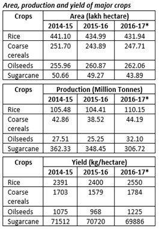
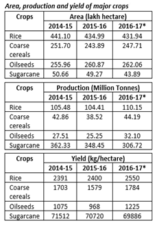
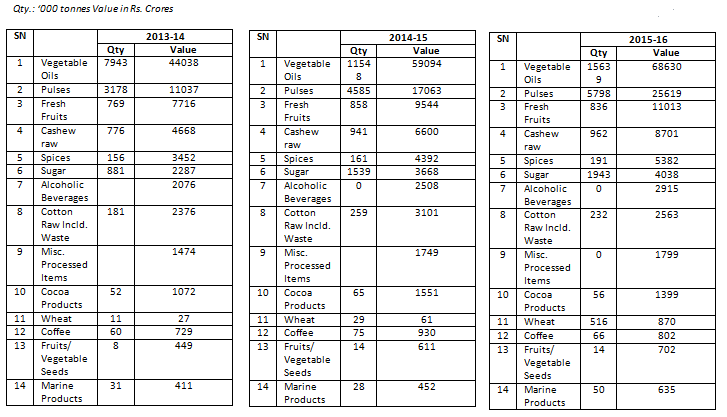
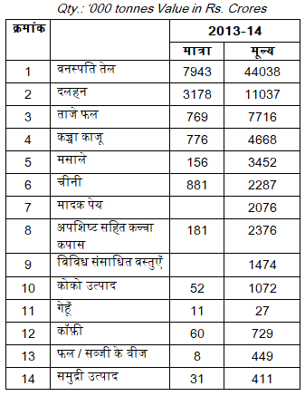
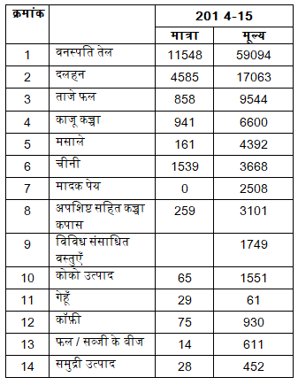
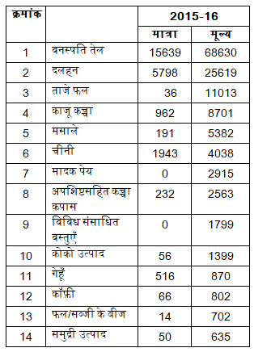

| 1 |
With reference to Asian Infrastructure Investment Bank
(AIIB), consider the following statements:
1. AIIB has more than 80
member nations.
2. India is the largest
shareholder in AIIB.
3. AIIB does not have any
members from outside Asia.
Which of the statements given above is/are correct?
(a)1 only
(b)2 and 3 only
(c)1 and 3 only
(d)1, 2 and 3
|
एशियाई आधारिक-संरचना निवेश बैंक एशियन इंफ्रास्ट्रक्चर
इंवेस्टमेंट बैंक (AIIB) के संदर्भ में, निम्नलिखित कथनों पर
विचार कीजिए :
1. AIIB के 80 से अधिक सदस्य राष्ट्र हैं।
2. AIIB में भारत सबसे बड़ा शेयरधारक है।
3. AIIB में एशिया से बाहर का कोई सदस्य
नहीं
उपर्युक्त में से कौन-सा/से कथन सही है/हैं?
(a)केवल 1
(b)केवल 2 और 3
(c)केवल 1 और 3
(d)1, 2 और 3
|
a
Easy
Current Affairs(CA)
Detailed Analysis 
|
Not Attempted
|
-
Statement 1 is correct and statement 3 is not
correct:
It is a multilateral development bank with a mission to
improve social and economic outcomes in Asia and beyond.
Currently it has 97 approved members with India as a
founding member.
-
Statement 2 is not correct: India is
the second largest shareholder in AIIB with 7.5% voting
shares while China holds 26.06% voting shares being the
largest.
|
-
कथन 1 सही है एवं कथन 3 सही नहीं हैः
AIIB एक बहुपक्षीय विकास बैंक है जिसका लक्ष्य एशिया और
इससे बाहर स्थित देशों के सामाजिक व आर्थिक परिणामों में
सुधार करना है। वर्तमान में संस्थापक सदस्य भारत सहित इसके
100 स्वीकृत सदस्य हैं।
-
कथन 2 सही नहीं हैः भारत
7.5% वोटिंग शेयरों के साथ AIIB का दूसरा
सबसे बड़ा शेयरधारक देश है, जबकि सबसे बड़ा शेयरधारक चीन है
जिसका वोटिंग शेयर 26.06% है।
|
| 2 |
What was the purpose of Inter-Creditor Agreement signed by
Indian banks and financial institutions recently?
(a)To lessen the Government of India’s perennial burden of
fiscal deficit and current account deficit.
(b)To support the infrastructure projects of Central and
State Governments
(c)To act as independent regulator in case of application
for loans of Rs. 50 core or more
(d)To aim at faster resolution of stressed assets of Rs.
50 crore or more which are under consortium lending
|
हाल ही में, भारतीय बैंकों और वित्तीय संस्थाओं द्वारा
अंतर-ऋणदाता करार (इंटर-क्रेडिटर ऐग्रीमेंट) पर हस्ताक्षर
करने का क्या उद्देश्य था?
(a)भारत सरकार के राजकोषीय घाटे और चालू लेखा घाटे के
वर्षानुवर्ष पड़ने वाले भार को कम करना
(b)केन्द्रीय और राज्य सरकारों की आधारिक-संरचना परियोजनाओं
को संबल प्रदान करना
(c)50 करोड़ या अधिक के ऋणों के आवेदनों के मामले में
स्वतंत्र नियामक के रूप में कार्य करना
(d)50 करोड़ या अधिक की दबावयुक्त परिसंपत्तियों (स्ट्रेस्ड
ऐसेट्स) का, जो सह-संघ उधारी (कॉन्सॉर्टियम लेंडिंग) के
अंतर्गत हैं, अधिक तेजी से समाधान करने का लक्ष्य रखना
|
d
Medium
Current Affairs(CA)
Detailed Analysis
|
Not Attempted
|
-
Project Sashakt was proposed by a panel led by PNB
chairman Sunil Mehta. Bad loans of up to Rs. 50 crore
will be managed at the bank level, with a deadline of 90
days. For bad loans of Rs. 50-500 crore, banks will
enter an inter-creditor agreement, authorizing the lead
bank to implement a resolution plan in 180 days, or
refer the asset to NCLT.
|
-
PNB के चेयरमैन सुनील मेहता की अध्यक्षता वाली कमेटी
ने ‘सशक्त’ योजना की संस्तुति की थी।
इसके अनुसार 50 करोड़ रुपये तक के बैड लोन का निस्तारण 90
दिनों की अवधि के भीतर बैंक स्तर पर ही किया जाएगा। 50-500
करोड़ रुपये तक के बैड लोन के लिए बैंकों द्वारा एक
अंतर-ऋणदाता समझौता (इंटर-क्रेडिटर एग्रीमेंट) किया जाएगा,
जिसके तहत लीड बैंक को 180 दिनों की अवधि के भीतर
रिजॉल्यूशन प्लान कार्यान्वित करने हेतु प्राधिकृत किया
जाएगा या परिसंपत्ति को NCLT को संदर्भित किया जाएगा।
|
| 3 |
The Chairman of public sector banks are selected by the
(a)Banks Board Bureau
(b)Reserve Bank of India
(c)Union Ministry of Finance
(d)Management of concerned bank
|
सार्वजनिक क्षेत्रक बैंकों के अध्यक्षों का चयन कौन करता है?
(a)बैंक बोर्ड ब्यूरो
(b)भारतीय रिजर्व बैंक
(c)केंद्रीय वित्त मंत्रालय
(d)संबंधित बैंक का प्रबंधन
|
a
Easy
Current Affairs(CA)
Detailed Analysis
|
Not Attempted
|
-
Banks Board Bureau recommends for selection of heads -
Public Sector Banks and Financial Institutions and helps
banks in developing strategies and capital raising
plans.
|
-
बैंक बोर्ड ब्यूरो (BBB) द्वारा सार्वजनिक क्षेत्रक के
बैंकों एवं वित्तीय संस्थानों के प्रमुखों के चयन की
संस्तुति की जाती है तथा बैंकों को रणनीति व पूंजी जुटाने
संबंधी योजनाओं को विकसित करने में सहायता की जाती है।
|
| 4 |
Consider the following statements:
1. Petroleum and Natural Gas
Regulatory Board (PNGRB) is the first regulatory body set
up by the Government of India.
2. One of the tasks of PNGRB
is to ensure competitive markets for gas.
3. Appeals against the
decisions of PNGRB go before the Appellate Tribunals for
Electricity.
Which of the statements given above are correct?
(a)1 and 2 only
(b)2 and 3 only
(c)1 and 3 only
(d)1, 2 and 3
|
निम्नलिखित कथनों पर विचार कीजिए :
1. 1.पेट्रोलियम और प्राकृतिक गैस नियामक
बोर्ड पेट्रोलियम ऐंड नेचुरल गैस रेग्युलेटरी बोर्ड (PNGRB]]
भारत सरकार द्वारा स्थापित प्रथम नियामक निकाय है।
2. PNGRB का एक कार्य गैस के लिए
प्रतियोगी बाजारों को सुनिश्चित करना है।
3. PNGRB के निर्णयों के विरुद्ध अपील,
विद्युत् अपील अधिकरण के समक्ष की जाती है।
उपर्युक्त में से कौन-से कथन सही हैं?
(a)केवल 1 और 2
(b)केवल 2 और 3
(c)केवल 1 और 3
(d)1, 2 और 3
|
b
Medium
Applied(A)
Detailed Analysis
|
Not Attempted
|
-
Statement 1 is not correct: The
Petroleum and Natural Gas Regulatory Board (PNGRB) was
constituted under The Petroleum and Natural Gas
Regulatory Board Act, 2006.
-
Statement 2 is correct: The Act provide
for the establishment of Petroleum and Natural Gas
Regulatory Board to protect the interests of consumers
and entities engaged in specified activities relating to
petroleum, petroleum products and natural gas and to
promote competitive markets and for matters connected
therewith or incidental thereto.
-
Statement 3 is correct: The Appellate
Tribunal established under section 110 of the
Electricity Act, 2003 (36 of 2003) is the Appellate
Tribunal for the purposes of Petroleum and Natural Gas
Regulatory Board Act, 2006.
|
-
कथन 1 सही नहीं है: पेट्रोलियम और
प्राकृतिक गैस नियामक बोर्ड (Petroleum and Natural Gas
Regulatory Board: PNGRB) का गठन पेट्रोलियम और प्राकृतिक
गैस नियामक बोर्ड अधिनियम, 2006 के अंतर्गत किया गया था।
-
कथन 2 सही हैः यह अधिनियम पेट्रोलियम,
पेट्रोलियम उत्पादों एवं प्राकृतिक गैस से संबंधित विशिष्ट
गतिविधियों में संलग्न उपभोक्ताओं व संस्थाओं के हितों की
सुरक्षा करने तथा प्रतिस्पर्धी बाजारों को बढ़ावा देने हेतु
या इनसे जुड़े मामलों या प्रासंगिक मामलों के लिए
पेट्रोलियम और प्राकृतिक गैस नियामक बोर्ड की स्थापना का
प्रावधान करता है।
-
कथन 3 सही है: विद्युत अधिनियम, 2003 की
धारा 110 के अंतर्गत स्थापित अपीलीय अधिकरण, पेट्रोलियम और
प्राकृतिक गैस नियामक बोर्ड अधिनियम, 2006 के प्रयोजनों के
लिए एक अपीलीय अधिकरण है।
|
| 5 |
With reference to communications technologies, what is/are
the difference/differences between LTE (Long-Term
Evolution) and VoLTE (Voice over Long-Term Evolution)?
1. LTE is commonly marketed
as 3G and VoLTE is commonly marketed as advanced 3G.
2. LTE is data-only
technology and VoLTE is voice-only technology.
Select the correct answer using the code given below.
(a)1 only
(b)2 only
(c)Both 1 and 2
(d)Neither 1 nor 2
|
संचार प्रौद्योगिकियों के संदर्भ में, LTE (लॉन्ग-टर्म
इवॉल्यूशन) और VoLTE (वॉइस ओवर लॉन्ग-टर्म इवॉल्यूशन) के बीच
क्या अंतर है/हैं?
1. LTE को साधारणतः 3G के रूप में विपणित
किया जाता है तथा VoLTE को साधारणतः उन्नत 3G के रूप में
विपणित किया जाता है।
2. LTE डेटा-ओनली तकनीक है और VoLTE
वॉइस-ओनली तकनीक है।
नीचे दिए गए कूट का प्रयोग कर सही उत्तर चुनिए।
(a)केवल 1
(b)केवल 2
(c)1 और 2 दोनों
(d)न तो 1, न ही 2
|
d
Medium
Current Affairs(CA)
Detailed Analysis
|
Not Attempted
|
-
VoLTE is a technology update to the LTE protocol used
by mobile phone networks.
-
Under LTE, the infrastructure of telecom players only
allows transmission of data while voice calls are routed
to their older 2G or 3G networks. This is why, under
LTE, you cannot access your 4G data services while on a
call. This leads to problems such as slow internet
speeds and poor voice clarity. VoLTE allows voice calls
to be ‘packaged’ and carried through LTE networks. This
would mean
4G data accessibility even during calls. Hence,
statement 2 is not correct.
-
LTE is commonly marketed as 4G LTE. Hence, statement
1 is not correct.
|
-
VoLTE, मोबाइल फोन नेटवर्क द्वारा उपयोग किए जाने वाले LTE
प्रोटोकॉल की एक अपडेटेड प्रौद्योगिकी है।
-
LTE के अंतर्गत, टेलीकॉम ऑपरेटरों का अवसंरचनात्मक ढांचा,
केवल डेटा की अनुमति प्रदान करता है, जबकि वॉयस कॉल का
प्रसारण 2G या 3G नेटवर्क के माध्यम से किया जाता है। यही
कारण है कि LTE के अंतर्गत आप कॉल करते हुए अपनी 4G डेटा
सेवाओं का उपयोग नहीं कर सकते हैं। इसके कारण इंटरनेट की
धीमी गति व अस्पष्ट कॉल जैसी समस्याएं उत्पन्न होती हैं।
VoLTE के तहत वॉयस कॉल को “पैकेज्ड (packaged)” रूप
में LTE नेटवर्क के माध्यम से प्रसारित किया जाता है। इसका
अर्थ है कि कॉल के दौरान भी 4G डेटा सेवाओं का उपयोग करना
संभव हो जाता है। अतः कथन 2 सही नहीं है।
-
LTE को सामान्यतः 4G LTE के रूप में विपणित किया जाता है।
अतः कथन 1 सही नहीं है।
|
| 6 |
Which of the following statements is/are correct regarding
the Maternity Benefit Amendment Act, 2017?
1. Pregnant women are
entitled for three months pre-delivery and three months
post-delivery paid leave.
2. Enterprises with creches
must allow the mother minimum six creche visits daily.
3. Women with two children
get reduced entitlements.
Select the correct answer using the code given below.
(a)1 and 2 only
(b)2 only
(c)3 only
(d)1, 2 and 3
|
मातृत्व लाभ (संशोधन) अधिनियम, 2017 के संबंध में,
निम्नलिखित में से कौन-सा/से कथन सही है/हैं?
1. गर्भवती महिलाएं, प्रसव-पूर्व तीन
महीने और प्रसवोत्तर तीन महीने के लिए सवेतन अवकाश की हकदार
है।
2. शिशुगृहों वाले प्रतिष्ठानों के लिए
माता को प्रतिदिन कम-से-कम छह बार शिशुगृह जाने की अनुमति
देना अनिवार्य होगा।
3. दो बच्चों वाली महिलाओं को न्यूनीकृत
हक मिलेंगे।
नीचे दिए गए कूट का प्रयोग कर सही उत्तर चुनिए।
(a)केवल 1 और 2
(b)केवल 2
(c)केवल 3
(d)1, 2 और 3
|
c
Medium
Current Affairs(CA)
Detailed Analysis
|
Not Attempted
|
Maternity Benefit (Amendment) Act, 2017
-
It provides for full paid absence from work for a
period of 26 weeks (earlier 12 weeks) to take care of
the child. Hence statement 1 is not correct.
-
The Act is applicable to all establishments employing 10
or more women.
-
For women who are expecting after having 2 children,
the duration of paid maternity leave shall be 12
weeks. Hence statement 3 is correct.
-
Maternity leave of 12 weeks to be available to mothers
adopting a child below the age of three months from the
date of adoption as well as to the “commissioning
mothers”.
-
The Act makes it mandatory for employers to educate
women about the maternity benefits available to them at
the time of their appointment.
-
Any establishment which has 50 or more employees shall
have the facility of creche.
Further, the proviso of Section 11A states that
employer shall allow 4 visits a day to the creche by
the woman employee. Hence statement 2 is not
correct.
|
मातृत्व लाभ (संशोधन) अधिनियम, 2017
-
यह बच्चे की देखभाल के लिए 26 सप्ताह (पहले 12 सप्ताह) का
पूर्ण वैतनिक अवकाश प्रदान करता है।
अतः कथन 1 सही नहीं है।
-
यह अधिनियम 10 या अधिक महिलाओं को रोजगार प्रदान करने वाले
सभी प्रतिष्ठानों पर लागू होता है।
-
जिन महिलाओं के पहले से ही दो बच्चे हैं, उनके लिए तीसरे
बच्चे के समय वैतनिक मातृत्व अवकाश की अवधि 12 सप्ताह की
होगी। अतः कथन 3 सही है।
-
तीन माह से कम आयु के बच्चे को गोद लेने वाली महिलाओं को
गोद लेने की तिथि से 12 सप्ताह का मातृत्व अवकाश भी उपलब्ध
होगा। यही सुविधा कमीशनिंग मदर्स के लिए भी उपलब्ध है।
-
यह अधिनियम नियोक्ताओं के लिए महिलाओं की नियुक्ति के समय
उन्हें उनके लिए उपलब्ध मातृत्व लाभों की जानकारी प्रदान
करना अनिवार्य बनाता है।
-
जिस भी प्रतिष्ठान में 50 या अधिक कर्मचारी नियोजित हैं,
उनके पास शिशुगृहों (क्रेच) की सुविधा होना अनिवार्य है।
साथ ही धारा 11A के प्रावधानों में कहा गया है कि नियोक्ता
द्वारा महिला कर्मचारी को एक दिन में 4 बार शिशुगृह जाने
की अनुमति प्रदान करना अनिवार्य होगा।
अतः कथन 2 सही नहीं है।
|
| 7 |
Which one of the following is not a sub-index of the World
Bank’s ‘Ease of Doing Business Index’?
(a)Maintenance of law and order
(b)Paying taxes
(c)Registering property
(d)Dealing with construction permits
|
निम्नलिखित में से कौन-सा एक विश्व बैंक के कारोबार सुगमता
सूचकांक (ईज ऑफ डूइंग बिजनेस इंडेक्स)' का उप-सूचकांक नहीं
है?
(a)कानून और व्यवस्था बनाए रखना
(b)करों का भुगतान करना
(c)संपत्ति का पंजीकरण कराना
(d)निर्माण परमिट संबंधी कार्य करना
|
a
Medium
Current Affairs(CA)
Detailed Analysis
|
Not Attempted
|
-
Doing Business measures regulations affecting 11 areas
of the life of a business. Ten of these areas are
included in this Doing Business 2019 ranking on the ease
of doing business: starting a business,
dealing with construction permits,
getting electricity,
registering property, getting credit,
protecting minority investors,
paying taxes, trading across borders,
enforcing contracts and resolving insolvency. Doing
Business also measures labor market regulation, which is
not included in this year’s ranking.
|
-
‘डूइंग बिजनेस’ के तहत किसी व्यवसाय से संबंधित 11
क्षेत्रों को प्रभावित करने वाले विनियमों का मापन किया
जाता है। इन क्षेत्रों में से दस को व्यापार को सुगम बनाने
के आधार पर डूइंग बिजनेस 2019 की रैंकिंग
में सम्मिलित किया गया हैः व्यवसाय आरंभ करना,
निर्माण संबंधी अनुमतियाँ प्रदान करना,
बिजली कनेक्शन प्राप्त करना,
संपत्ति का पंजीकरण कराना, ऋण प्राप्त
करना, छोटे निवेशकों की रक्षा करना,
करों का भुगतान करना, सीमाओं के आर-पार
व्यापार करना, अनुबंधों का प्रवर्तन तथा ऋणशोधन अक्षमता का
समाधान। डूइंग बिजनेस के अंतर्गत श्रम बाजार से संबंधित
विनियमनों का भी मापन किया जाता है, हालांकि इस वर्ष की
रैंकिंग में इसे सम्मिलित नहीं किया गया है।
|
| 8 |
In India, ‘extended producer responsibility’ was
introduced as an important feature in which of the
following?
(a)The Bio-medical Waste (Management and Handling) Rules,
1998
(b)The Recycled Plastic (Manufacturing and Usage) Rules,
1999
(c)The e-Waste (Management and Handling) Rules, 2011
(d)The Food Safety and Standard Regulations, 2011
|
भारत में निम्नलिखित में से किसमें एक महत्त्वपूर्ण विशेषता
के रूप में विस्तारित उत्पादक दायित्व' आरंभ किया गया था?
(a)जैव चिकित्सा अपशिष्ट (प्रबंधन और हस्तन) नियम, 1998
(b)पुनर्चक्रित प्लास्टिक (निर्माण और उपयोग) नियम, 1999
(c)ई-अपशिष्ट (प्रबंधन और हस्तन) नियम, 2011
(d)खाद्य सुरक्षा और मानक विनियम, 2011
|
c
Difficult
Current Affairs(CA)
Detailed Analysis
|
Not Attempted
|
-
Extended producer’s responsibility (EPR) is the main
feature of the E-waste (Management and Handling) Rules,
2011, wherein the producer of electrical and electronic
equipment has the responsibility of managing such
equipment after its ‘end of life’, thus the producer is
responsible for their products once the consumer
discards them.
|
-
विस्तारित उत्पादक दायित्व (Extended producer
responsibility: EPR), ई-अपशिष्ट (प्रबंधन और हस्तन) नियम,
2011 की मुख्य विशेषता है, जिसके तहत यह निर्धारित किया
गया है कि विद्युत एवं इलेक्ट्रॉनिक उपकरणों’ की “उपयोग
अवधि समाप्त (end of life)” होने के पश्चात् उनके प्रबंधन
का दायित्व उपकरण उत्पादकों का होगा। इस प्रकार,
उपभोक्ताओं द्वारा त्याग दिए जाने के पश्चात् इन उत्पादों
के प्रबंध का दायित्व उत्पादक का होगा।
|
| 9 |
The economic cost of food grains to the Food Corporation
of India is Minimum Support Price and bonus (if any) paid
to the farmers plus
(a)transportation cost only
(b)interest cost only
(c)procurement incidentals and distribution cost
(d)procurement incidentals and charges for godowns
|
भारतीय खाद्य निगम के लिए खाद्यान्नों की आर्थिक लागत में
न्यूनतम समर्थन मूल्य और किसानों को भुगतान किए गए बोनस (यदि
कुछ है) के साथ-साथ और क्या शामिल है/हैं?
(a)केवल परिवहन लागत
(b)केवल ब्याज लागत
(c)प्रापण प्रासंगिक प्रभार तथा वितरण लागत
(d)प्रापण प्रासंगिक प्रभार तथा गोदार्मों के प्रभार
|
c
Medium
Fundamental(F)
Detailed Analysis
|
Not Attempted
|
-
The economic cost comprises the procurement price of
foodgrains, costs related to procurement (such as
statutory taxes, labour costs, mandi fees, and so on)
and costs of distribution (including freight, storage
and administration).
|
-
आर्थिक लागत के अंतर्गत खाद्यान्नों का अधिप्राप्ति मूल्य,
अधिप्राप्ति से संबंधित लागत (जैसे वैधानिक कर, श्रम लागत,
मंडी शुल्क इत्यादि) तथा वितरण लागत (माल ढुलाई भाड़ा,
भंडारण व प्रशासन आदि) सम्मिलित हैं।
|
| 10 |
In the context of any country, which one of the following
would be considered as part of its social capital?
(a)The proportion of literates in the population
(b)The stock of its buildings, other infrastructure and
machines
(c)The size of population in the working are group
(d)The level of mutual trust and harmony in the society
|
किसी भी देश के संदर्भ में, निम्नलिखित में से किसे उस देश
की सामाजिक पूँजी (सोशल कैपिटल) के भाग के रूप में समझा
जाएगा?
(a)जनसंख्या में साक्षरों का अनुपात
(b)इसके भवनों, अन्य आधारिक संरचना और मशीनों का स्टॉक
(c)कार्यशील आयु समूह में जनसंख्या का आमाप
(d)समाज में आपसी भरोसे और सामंजस्य का स्तर
|
d
Easy
Applied(A)
Detailed Analysis
|
Not Attempted
|
-
Social capital is a sociological concept that refers to
the intangible relational assets that emerge from social
interactions. These assets are generated through give
and take and activate the “norm of reciprocity,”
creating social obligations that connect and bind people
and groups. The more social capital is used, the greater
the benefits.
-
The concept of social capital is composed of three
distinct but interrelated structural, emotional and
behavioral components. They are, respectively, networks,
trust and collaborative cultural norms.
-
In every society, some people have a greater share of
valued resources – money, property, education, health,
and power – than others. These social resources can be
divided into three forms of capital – economic capital
in the form of material assets and income; cultural
capital such as educational qualifications and status;
and social capital in the form of networks of contacts
and social associations (Bourdieu 1986). Often, these
three forms of capital overlap and one can be converted
into the other. For example, a person from a well-off
family (economic capital) can afford expensive higher
education, and so can acquire cultural or educational
capital. Someone with influential relatives and friends
(social capital) may – through access to good advice,
recommendations or information – manage to get a
well-paid job.
|
-
सामाजिक पूंजी एक सामाजिक अवधारणा है। यह सामाजिक
अन्योन्यक्रिया से सृजित अमूर्त संबंधपरक संपत्तियों को
संदर्भित करती है। इन परिसंपत्तियों का सृजन लेन-देन के
माध्यम से होता है तथा ये “पारस्परिकता के मानदंडों (norm
of reciprocity)“ को प्रोत्साहित करती हैं, जिसके
परिणामस्वरूप सामाजिक दायित्वों का निर्माण होता है जो
लोगों व समूहों को परस्पर जोड़ता है एवं संगठित करता है।
सामाजिक पूंजी का जितना अधिक उपयोग किया जाएगा, लाभ भी
उतना ही अधिक होगा।
-
सामाजिक पूंजी की अवधारणा का गठन तीन अलग-अलग, परंतु
परस्पर संरचनात्मक, भावनात्मक व व्यावहारिक घटकों से होता
है। ये घटक हैं: नेटवर्क, विश्वास एवं सहयोगी सांस्कृतिक
मानदंड।
-
प्रत्येक समाज में कुछ लोगों को अन्य लोगों की तुलना में
मूल्यवान संसाधनों यथा धन, संपत्ति, शिक्षा, स्वास्थ्य और
प्रतिष्ठा आदि पर अधिक अधिकार प्राप्त होते हैं। इन
सामाजिक संसाधनों को पूँजी के तीन रूपों में विभाजित किया
जा सकता है - भौतिक संपत्ति एवं आय के रूप में
आर्थिक पूँजी; शैक्षिक योग्यता एवं
प्रतिष्ठा के रूप में
सांस्कृतिक पूंजी; तथा संपर्क व सामाजिक
संबंधों के नेटवर्क के रूप में
सामाजिक पूंजी (Bourdieu 1986)। प्रायः
ये तीनों पूंजियाँ परस्पर अतिव्यापी होती हैं तथा इनमें
सें एक को दूसरे में परिवर्तित किया जा सकता है। उदाहरण के
लिए, एक संपन्न परिवार (आर्थिक पूंजी) का सदस्य महंगी उच्च
शिक्षा के व्यय का वहन कर सकता है तथा इसलिए वह सांस्कृतिक
या शैक्षणिक पूंजी प्राप्त कर सकता है। जिन व्यक्तियों के
प्रभावशाली रिश्तेदार व दोस्त (सामाजिक पूंजी) होते हैं,
वे बेहतर परामर्श, संस्तुतियों या सूचना तक पहुंच के
माध्यम से एक बेहतर वेतन वाली नौकरी प्राप्त कर सकते हैं।
|
| 11 |
The Service Area Approach was implemented under the
purview of
(a)Integrated Rural Development Programme
(b)Lead Bank Scheme
(c)Mahatma Gandhi National Rural Employment Guarantee
Scheme
(d)National Skill Development Mission
|
सेवा क्षेत्र उपागम किसके कार्यक्षेत्र के अधीन कार्यान्वित
किया गया था?
(a)एकीकृत ग्रामीण विकास कार्यक्रम
(b)अग्रणी बैंक योजना (लीड बैंक स्कीम)
(c)महात्मा गांधी राष्ट्रीय ग्रामीण रोजगार गारंटी योजना
(d)राष्ट्रीय कौशल विकास मिशन
|
b
Medium
Fundamental(F)
Detailed Analysis
|
Not Attempted
|
-
The Service Area Approach (SAA) introduced in April
1989, in order to bring about an orderly and planned
development of rural and semi- urban areas of the
country, was extended to all Indian scheduled commercial
banks including Regional Rural Banks (RRBs).
-
Service area approach is an
alternative and improved method of Lead Bank
Scheme
for deployment of bank credit for rural development.
Under SAA, each bank branch in rural and semi-urban area
was designated to serve an area of 15 to 25 villages and
the branch was responsible for meeting the needs of bank
credit of its service area.
-
The primary objective of SAA was to increase productive
lending and forge effective linkages between bank
credit, production, productivity and increase in income
levels
|
-
देश के ग्रामीण व अर्द्ध -शहरी क्षेत्रों का एक व्यवस्थित
एवं नियोजित विकास करने हेतु अप्रैल 1989 में आरंभ किए गए
सेवा क्षेत्र उपागम (Service Area Approach) का क्षेत्रीय
ग्रामीण बैंकों (RRB) सहित सभी भारतीय अनुसूचित वाणिज्यिक
बैंकों तक विस्तार कर दिया गया था।
-
ग्रामीण विकास हेतु बैंक ऋण के परिनियोजन के लिए SAA लीड
बैंक योजना का एक वैकल्पिक व बेहतर उपागम है। SAA के
अंतर्गत ग्रामीण एवं अर्द्ध -शहरी क्षेत्रों में प्रत्येक
बैंक शाखा को 15 से 25 गांवों के समूह को सेवा प्रदान करने
हेतु नामित किया गया था तथा प्रत्येक शाखा अपने द्वारा
सेवित क्षेत्र से संबंधित बैंक ऋण आवश्यकताओं को पूरा करने
के लिए उत्तरदायी थी।
-
SAA का प्राथमिक उद्देश्य उत्पादक ऋण में वृद्धि करना तथा
बैंक ऋण, उत्पादन, उत्पादकता एवं आय के स्तर में वृद्धि के
मध्य प्रभावी संबंध स्थापित करना था।
|
| 12 |
With reference to the management of minor minerals in
India, consider the following statements:
1. Sand is a ‘minor mineral’
according to the prevailing law in the country.
2. State Governments have
the power to grant mining leases of minor minerals, but
the powers regarding the formation of rules related to the
grant of minor minerals lie with the Central Government.
3. State Government have the
power to frame rules to prevent illegal mining of minor
minerals.
Which of the statements given above is/are correct?
(a)1 and 3 only
(b)2 and 3 only
(c)3 only
(d)1, 2 and 3
|
भारत में गौण खनिज के प्रबंधन के संदर्भ में, निम्नलिखित
कथनों पर विचार कीजिए :
1. इस देश में विद्यमान विधि के अनुसार
रेत एक गौण खनिज' है।
2. गौण खनिजों के खनन पट्टे प्रदान करने
की शक्ति राज्य सरकारों के पास है, किन्तु गौण खनिजों को
प्रदान करने से संबंधित नियमों को बनाने के बारे में
शक्तियाँ केन्द्र सरकार के पास हैं।
3. गौण खनिजों के अवैध खनन को रोकने के
लिए नियम बनाने की शक्ति राज्य सरकारों के पास है।
उपर्युक्त में से कौन-सा/से कथन सही है/हैं?
(a)केवल 1 और 3
(b)केवल 2 और 3
(c)केवल 3
(d)1, 2 और 3
|
a
Difficult
Current Affairs(CA)
Detailed Analysis
|
Not Attempted
|
-
Statement 1 is correct- Sand is a minor
mineral, as defined under section 3(e) of the Mines and
Minerals (Development and Regulation) Act, 1957 (MMDR
Act).
-
Statement 2 is not correct- As per
Section 15 of the Mines and Minerals (Development and
Regulation) (MMDR) Act, 1957, State Governments have
been empowered to frame rules in respect of minor
minerals for regulating the grant of quarry leases,
mining leases or other mineral concessions in respect of
minor minerals and for purposes connected therewith.
-
Statement 3 is correct- Section 23C of
the MMDR Act, 1957 empowers state governments to frame
rules to prevent illegal mining, transportation and
storage of minerals and for purposes connected
therewith. Control of illegal mining is, therefore,
under the legislative and administrative jurisdiction of
state governments.
|
-
कथन 1 सही है: खान और खनिज (विकास और विनियमन)
अधिनियम, 1957
(MMDR Act) की धारा 3 (e) के तहत दी गई परिभाषा के अनुसार
रेत एक गौण खनिज है।
-
कथन 2 सही नहीं हैः MMDR अधिनियम, 1957
की धारा 15 के अनुसार, राज्य सरकारों को गौण खनिजों के
संबंध में खदान पट्टों, खनन पट्टों या गौण खनिजों एवं इनसे
संबंधित उद्देश्यों के संबंध में अन्य खनिज रियायतों को
विनियमित करने हेतु नियम बनाने का अधिकार दिया गया है।
-
कथन 3 सही हैः MMDR अधिनियम, 1957 की
धारा 23 (C) राज्य सरकारों को अवैध खनन, खनिजों के परिवहन
व भंडारण को रोकने के लिए तथा इससे संबंधित उद्देश्यों को
पूरा करने हेतु नियम बनाने का अधिकार प्रदान करती है। अतः
अवैध खनन पर नियंत्रण स्थापित करने संबंधी कार्य राज्य
सरकारों के विधायी व प्रशासनिक क्षेत्राधिकार के अंतर्गत
शामिल हैं।
|
| 13 |
Consider the following statements:
1. Most of India’s external
debt is owed by governmental entities.
2. All of India’s external
debt is denominated in US dollars.
Which of the statements given above is/are correct?
(a)1 only
(b)2 only
(c)Both 1 and 2
(d)Neither 1 nor 2
|
निम्नलिखित कथनों पर विचार कीजिए :
1. भारत का अधिकांश विदेशी ऋण सरकारी
सत्वों के ऋणी होने के द्वारा है।
2. भारत का सारा विदेशी ऋण US डॉलर के
मूल्यवर्ग में है।
उपर्युक्त में से कौन-सा/से कथन सही है/हैं?
(a)केवल 1
(b)केवल 2
(c)1 और 2 दोनों
(d)न तो 1, न ही 2
|
d
Medium
Current Affairs(CA)
Detailed Analysis
|
Not Attempted
|
-
As per the Government report on External debt by
December 2018-Commercial borrowings are the largest
component of external debt with a share of 37.1 percent,
followed by NRI deposits (23.9 percent) and short term
trade credit (19.9 percent).
Hence, Statement 1 is not correct.
-
US dollar denominated debt continued to be the largest
component of India’s external debt with a share of 45.9
percent at end December 2018, followed by the Indian
rupee (24.8 percent), SDR (5.1 percent), yen (4.9
percent) and euro(3.1 percent). Hence,
Statement 2 is not correct.
|
-
बाह्य ऋण से संबंधित सरकार की एक रिपोर्ट के अनुसार,
दिसंबर 2018 तक 37.1 प्रतिशत की हिस्सेदारी के साथ
वाणिज्यिक उधारियाँ बाह्य ऋण का सबसे बड़ा घटक थीं, इसके
पश्चात् अनिवासी भारतीयों की जमाएँ (23.9 प्रतिशत) और
अल्पकालिक व्यापार ऋण (19.9 प्रतिशत) की हिस्सेदारी थी।
इसलिए कथन 1 सही नहीं है।
-
दिसंबर 2018 के अंत में भारत के बाह्य ऋणों में अमेरिकी
डॉलर में अंकित ऋण 45.9 प्रतिशत की हिस्सेदारी के साथ का
सबसे बड़ा घटक बना हुआ था, जिसके पश्चात् भारतीय रुपया
(24.8 प्रतिशत), SDR (5.1 प्रतिशत), येन (4.9 प्रतिशत) और
यूरो (3.1 प्रतिशत) का स्थान था।
इसलिए कथन 2 सही नहीं है।
|
| 14 |
Which of the following is not included in the assets of a
commercial bank in India?
(a)Advances
(b)Deposits
(c)Investments
(d)Money at call and short notice
|
भारत में किसी वाणिज्यिक बैंक की परिसंपत्ति में निम्नलिखित
में से क्या शामिल नहीं है?
(a)अग्रिम
(b)जमा
(c)निवेश
(d)माँग तथा अल्प सूचना मुद्रा (मनी ऐट कॉल ऐंड शॉर्ट नोटिस)
|
b
Difficult
Fundamental(F)
Detailed Analysis
|
Not Attempted
|
-
A bank places its funds in assets to earn profits. The
assets include investments, loans and advances, money at
call and short notice, bills discounted and purchased.
It also includes the cash in hand with the banks and
also the cash held with the RBI.
-
The liabilities include deposits (both time and demand)
and borrowings.
- Hence (b) is the correct answer.
|
-
बैंक लाभ अर्जित करने के लिए अपनी निधियाँ आस्तियों
(assets) के रूप में रखता है। इन आस्तियों के अंतर्गत
निवेश, ऋण और अग्रिम, माँग एवं अल्प सूचना मुद्रा, बट्टे
वाले और खरीदे गए विपत्र सम्मिलित हैं। इसमें बैंकों के
पास उपलब्ध नकदी और RBI के पास आरक्षित नकदी भी सम्मिलित
होती है।
-
देयताओं के अंतर्गत जमाएं (सावधि और मांग जमाएं दोनों) और
उधारियाँ सम्मिलित हैं।
- इसलिए (b) सही उत्तर है।
|
| 15 |
In the context of India, which of the following factors
is/are contributor/ contributors to reducing the risk of a
currency crisis?
1. The foreign currency
earnings of India’s IT sector
2. Increasing the government
expenditure
3. Remittances from Indians
abroad
Select the correct answer using the code given
below.
(a)1 only
(b)1 and 3 only
(c)2 only
(d)1, 2 and 3
|
भारत के संदर्भ में, मुद्रा संकट के जोखिम को कम करने में
निम्नलिखित में से किस/किन कारक/कारकों का योगदान है?
1. भारत के IT सेक्टर के विदेशी मुद्रा
अर्जन का
2. सरकारी व्यय के बढ़ने का
3. विदेशस्थ भारतीयों द्वारा भेजे गए धन
का
नीचे दिए गए कूट का प्रयोग कर सही उत्तर चुनिए।
(a)केवल 1
(b)केवल 1 और 3
(c)केवल 2
(d)1, 2 और 3
|
b
Medium
Fundamental(F)
Detailed Analysis
|
Not Attempted
|
-
Currency crisis is brought on by a decline in the value
of a country's currency. This decline in value
negatively affects an economy by creating instabilities
in exchange rates, meaning that one unit of a certain
currency no longer buys as much as it used to in another
currency.
-
A substantial amount of foreign exchange reserves can
help to cushion against any risks of currency crisis.
-
The foreign current earnings of India's IT sector and
remittances from abroad would lead more inflow of
foreign currencies in the economy and boost the foreign
exchange reserves.
Hence, Statements 1 and 3 are correct.
-
Statement 2 is not correct as
increasing the government expenditure is not related to
change in foreign exchange reserves or any currency
fluctuations.
|
-
किसी देश की मुद्रा के मूल्य में गिरावट के कारण मुद्रा
संकट उत्पन्न हो जाता है। मूल्य में यह गिरावट विनिमय दरों
में अस्थिरता उत्पन्न करके अर्थव्यवस्था को नकारात्मक रूप
से प्रभावित करती है। इसका अर्थ किसी मुद्रा की क्रय शक्ति
में, अन्य मुद्रा की तुलना में ह्रास होने से है।
-
पर्याप्त मात्रा में विदेशी मुद्रा भंडार, मुद्रा संकट के
किसी भी जोखिम के प्रति सुरक्षा प्रदान करने में सहायता कर
सकता है।
-
भारतीय IT क्षेत्रक द्वारा अर्जित विदेशी मुद्रा और
विदेशों से प्राप्त विप्रेषण के माध्यम से अर्थव्यवस्था
में विदेशी मुद्राओं का अधिक अंतर्वाह होता है और विदेशी
मुद्रा भंडार में वृद्धि होती है।
इसलिए कथन 1 और 3 सही हैं।
-
कथन 2 सही नहीं है क्योंकि सरकारी व्यय
में वृद्धि से विदेशी मुद्रा भंडार में परिवर्तन या मुद्रा
में किसी भी प्रकार का उतार-चढ़ाव नहीं होता है।
|
| 16 |
Which one of the following suggested that the Governor
should be an imminent person from outside the State and
should be a detached figure without intense political
links or should not have taken part in politics in the
recent past?
(a)First Administrative Reforms Commission (1966)
(b)Rajamannar Committee (1969)
(c)Sarkaria Commission (1983)
(d)National Commission to Review the Working of the
Constitution (2000)
|
निम्नलिखित में से किस एक का यह सुझाव था कि राज्यपाल को उस
राज्य के बाहर का एक प्रतिष्ठित व्यक्ति होना चाहिए और उसे
एक ऐसा तटस्थ व्यक्ति होना चाहिए जिसके गहन राजनीतिक जुड़ाव
न हों या उसने हाल के पिछले वर्षों में राजनीति में भाग नहीं
लिया हो?
(a)पहला प्रशासनिक सुधार आयोग (1966)
(b)राजमन्नार समिति (1969)
(c)सरकारिया आयोग (1983)
(d)संविधान के कार्यचालन की समीक्षा हेतु राष्ट्रीय आयोग
(2000)
|
c
Easy
Fundamental(F)
Detailed Analysis
|
Not Attempted
|
Sarkaria Commission Report (1988)
-
Recommendation on appointment of Governor:
-
Governor should be an eminent person and not belong
to the state where he is to be posted.
-
State chief minister should have a say in the
appointment of governor
-
Governor should be a detached figure without
intense political links or should not have taken
part in politics in recent past. Hence, Statement
(c) is correct.
-
Governor should not be a member of the ruling party.
|
सरकारिया आयोग की रिपोर्ट (1988)
राज्यपाल की नियुक्ति से संबंधित अनुशंसाएं:
-
राज्यपाल कोई प्रतिष्ठित व्यक्ति होना चाहिए और अपनी
नियुक्ति से संबंधित राज्य का नहीं होना चाहिए।
-
राज्यपाल की नियुक्ति में संबंधित राज्य के मुख्यमंत्री से
परामर्श किया जाना चाहिए।
-
राज्यपाल को गहन राजनीति से तटस्थ व्यक्ति होना चाहिए
या ऐसा व्यक्ति होना चाहिए जिसने हाल ही के दिनों में
राजनीति में भाग नहीं लिया हो। इसलिए कथन (c) सही
है।
-
राज्यपाल को सत्ताधारी दल का सदस्य नहीं होना चाहिए।
|
| 17 |
Which of the following is issued by registered foreign
portfolio investors to overseas investors who want to be
part of Indian stock market without registering themselves
directly?
(a)Certificate of Deposits
(b)Commercial Paper
(c)Promissory Note
(d)Participatory Note
|
पंजीकृत विदेशी पोर्टफोलियो निवेशकों द्वारा उन विदेशी
निवेशकों को, जो स्वयं को सीधे पंजीकृत कराए बिना भारतीय
स्टॉक बाजार का हिस्सा बनना चाहते हैं, निम्नलिखित में से
क्या जारी किया जाता है?
(a)जमा प्रमाण-पत्र
(b)वाणिज्यिक पत्र
(c)वचन-पत्र (प्रॉमिसरी नोट)
(d)सहभागिता पत्र (पार्टिसिपेटरी नोट)
|
d
Easy
Fundamental(F)
Detailed Analysis
|
Not Attempted
|
-
A Participatory Note (PN or P-Note) is
a derivative instrument issued in foreign jurisdictions,
by a SEBI registered Foreign Institutional Investor
(FII) or its sub-accounts or one of its associates,
against underlying Indian securities. The underlying
Indian security instrument may be equity, debt,
derivatives or may even be an index.
-
A promissory note is a financial
instrument that contains a written promise by one party
to pay another party a definite sum of money, either on
demand or at a specified future date.
-
Commercial Paper (CP) is an unsecured
money market instrument issued in the form of a
promissory note. CPs are short-term instruments and the
maturity period varies from seven days to up to one
year. It was introduced to enable highly rated corporate
borrowers to diversify their sources of short-term
borrowings, and also to provide an additional instrument
to investors.
-
Certificate of Deposits-It is a saving
certificate with a fixed maturity date at fixed interest
rate. It is issued by commercial banks and financial
institutions. It is issued in the form of promissory
note in exchange of funds deposited in banks for
specified period.
|
-
पार्टिसिपेटरी नोट (PN या P-नोट)
डेरिवेटिव इंस्ट्रूमेंट (व्युत्पन्न प्रपत्र) होते हैं
जिन्हें SEBI में पंजीकृत विदेशी संस्थागत निवेशक (FII) या
उसके उप-खातों (sub-accounts) या उसके एक सहयोगी द्वारा
अंतर्निहित विदेशी प्रतिभूतियों के विरुद्ध विदेशी
क्षेत्राधिकार में जारी किया जाता है। अंतर्निहित भारतीय
प्रतिभूति विपत्र इक्विटी, ऋण, डेरिवेटिव या सूचकांक भी हो
सकता है।
-
प्रॉमिसरी नोट (वचन पत्र) वह वित्तीय
विपत्र (financial instrument) होता है जिसमें एक पक्ष
द्वारा किसी अन्य पक्ष को या तो मांग पर या भविष्य की किसी
निर्दिष्ट तिथि पर एक निश्चित धनराशि का भुगतान करने की
लिखित प्रतिबद्धता व्यक्त की जाती है।
-
वाणिज्यिक पत्र (Commercial Paper: CP)
एक गैर-जमानती मुद्रा बाजार का विपत्र होता है जिसे वचन
पत्र के रूप में जारी किया जाता है। CP अल्पकालिक विपत्र
होते हैं और इनकी परिपक्वता अवधि सात दिनों से लेकर एक
वर्ष तक हो सकती है। यह उच्च रेटिंग वाले कॉर्पोरेट
उधारकर्ताओं को अल्पकालिक उधारियों के अपने स्रोतों में
विविधता लाने के लिए सक्षम बनाने और साथ ही निवेशकों को
अतिरिक्त उपकरण प्रदान करने के लिए जारी किया गया था।
-
जमा प्रमाण पत्र (Certificate of Deposits)-
यह निश्चित ब्याज दर पर निश्चित परिपक्वता तिथि पर देय बचत
प्रमाणपत्र होता है। यह वाणिज्यिक बैंकों और वित्तीय
संस्थानों द्वारा जारी किया जाता है। यह निर्दिष्ट अवधि के
लिए बैंकों में जमा राशि की गारंटी पर वचन पत्र के रूप में
जारी किया गया था।
|
| 18 |
Consider the following statements:
1. As per law, the
Compensatory Afforestation Fund Management and Planning
Authority exists at both National and State levels.
2. People’s participation is
mandatory in the compensatory afforestation programmes
carried out under the Compensatory Afforestation Fund Act,
2016.
Which of the statements given above is/are correct?
(a)1 only
(b)2 only
(c)Both 1 and 2
(d)Neither 1 nor 2
|
निम्नलिखित कथनों पर विचार कीजिए :
1. विधि के अनुसार, प्रतिपूरक वनीकरण कोष
प्रबंधन एवं योजना प्राधिकरण, राष्ट्रीय तथा राज्य, दोनों
स्तरों पर होते हैं।
2. प्रतिपूरक वनीकरण निधि अधिनियम, 2016
के अधीन चलाए गए प्रतिपूरक वनीकरण कार्यक्रमों में लोगों की
सहभागिता अनिवार्य (मैंडेटरि) है।
उपर्युक्त में से कौन-सा/से कथन सही है/हैं?
(a)केवल 1
(b)केवल 2
(c)1 और 2 दोनों
(d)न तो 1, न ही 2
|
a
Difficult
Current Affairs(CA)
Detailed Analysis
|
Not Attempted
|
-
Statement 1 is correct: As per law, the
Compensatory Afforestation Fund Management and Planning
Authority exists at both National and State levels.
-
Statement 2 is not correct: It does not
provide for mandatory people participation in the
compensatory afforestation programmes carried out under
the Compensatory Afforestation Fund Act, 2016.
|
-
कथन 1 सही है: विधि के अनुसार,
“प्रतिपूरक वनीकरण कोष प्रबंधन एवं योजना प्राधिकरण
(कैम्पा)”, राष्ट्रीय तथा राज्य, दोनों स्तरों पर कार्यरत
हैं।
-
कथन 2 सही नहीं है: प्रतिपूरक वनीकरण कोष
अधिनियम, 2016 के अंतर्गत प्रतिपूरक वनीकरण कार्यक्रमों
में लोगों की अनिवार्य भागीदारी का प्रावधान नहीं किया गया
है।
|
| 19 |
In India, which of the following review the independent
regulators in sectors like telecommunications, insurance
electricity, etc.?
1. Ad Hoc Committee set up
by the Parliament.
2. Parliamentary Department
Related Standing Committee
3. Finance Commission
4. Financial Sector
Legislative Reforms Commission
5. NITI Aayog
Select the correct answer using the code given below.
(a)1 and 2
(b)1, 3 and 4
(c)3, 4 and 5
(d)2 and 5
|
भारत में दूरसंचार, बीमा, विद्युत् आदि जैसे क्षेत्रकों में
स्वतंत्र नियामकों का पुनरीक्षण निम्नलिखित में से कौन
करते/करती हैं?
1. संसद द्वारा गठित तदर्थ समितियाँ
2. संसदीय विभाग संबंधी स्थायी समितियाँ
3. वित्त आयोग
4. वित्तीय क्षेत्र विधायी सुधार आयोग
5. नीति (NITI) आयोग
नीचे दिए गए कूट का प्रयोग कर सही उत्तर चुनिए।
(a)1 और 2
(b)1, 3 और 4
(c)3, 4 और 5
(d)2 और 5
|
a
Medium
Fundamental(F)
Detailed Analysis
|
Not Attempted
|
-
Department related Standing Committees:
The Committee system of Parliament is often used in
several countries for oversight of regulators. In India,
there are 24 Department Related Standing Committees that
comprise members from both Houses of Parliament. These
committees are ministry specific, and may review the
working of regulators within their respective
departments. The Ad hoc committees are temporary and
perform specific task. The Ad Hoc Committees dissolve,
once their task is done. These committees are
Ministries’ specific and review the working of
regulators within their respective departments.
-
Ad-hoc Committees: Parliament may
establish ad-hoc committees which may examine the
working of regulators. For instance, the terms of
reference of the Joint Parliamentary Committee (JPC) on
the allocation of 2G spectrum include the review of the
policy on spectrum pricing and grant of telecom
licences. Another example of parliamentary oversight
through ad-hoc committees is the scrutiny of the working
of SEBI and RBI by the JPC on the stock market scam. The
two parliamentary committees on finance which exercise
oversight of regulators are:
- (a) the Committee on Estimates; and
-
(b) the Public Accounts Committee (PAC). The Committee
on Estimates reviews budgetary estimates of government
departments. Such estimates include the budget of
regulators. Most laws establishing independent
regulators require the Comptroller and Auditor General
(CAG) to prepare annual audit reports on the accounts of
the regulators. These reports are tabled before
Parliament and reviewed by the PAC. The PAC may require
the regulator’s officers to depose before the Committee.
For instance, the Chairman and senior officers of SEBI
deposed before the PAC when it was examining the working
of SEBI.
-
Finance Commission, Financial Sector Legislative
Reforms Commission and NITI Aayog have no role in
reviewing the independent regulators.
|
-
विभाग संबंधी स्थायी समितियाँ:
विनियामकों की निगरानी करने के लिए प्राय: कई देशों में
संसद की समिति प्रणाली का उपयोग किया जाता है। भारत में
विभाग संबंधी 24 स्थायी समितियाँ हैं जिनमें संसद के दोनों
सदनों के सदस्य सम्मिलित हैं। ये समितियाँ मंत्रालय
विशिष्ट होती हैं और अपने संबंधित विभागों के भीतर
विनियामकों के कार्य की समीक्षा करती हैं। तदर्थ समितियाँ
अस्थायी होती हैं और इनके द्वारा विशिष्ट कार्यों को
संपादित किया जाता है। अपना कार्य पूरा हो जाने के पश्चात्
तदर्थ समितियाँ भंग हो जाती हैं। ये समितियाँ मंत्रालय
विशिष्ट होती हैं और अपने संबंधित विभागों के भीतर
विनियामकों के कार्यों की समीक्षा करती हैं।
-
तदर्थ समितियाँ: संसद तदर्थ समितियों की
स्थापना कर सकती है, जो विनियामकों के कार्यों की जाँच
करती हैं। उदाहरण के लिए 2G स्पेक्ट्रम के आबंटन पर
संयुक्त संसदीय समिति (JPC) की संदर्भ शर्तों (terms of
reference) के अंतर्गत स्पेक्ट्रम मूल्य निर्धारण और
दूरसंचार लाइसेंस प्रदान करने संबंधी नीति की समीक्षा
शामिल थे। तदर्थ समितियों के माध्यम से संसदीय निगरानी का
एक अन्य उदाहरण शेयर बाजार घोटाले की JPC द्वारा SEBI और
RBI के कार्यों की संवीक्षा है।
विनियामकों की निगरानी वाली वित्त संबंधी दो संसदीय समितियाँ
इस प्रकार हैं:
(a) प्राक्कलन समिति; तथा
(b) लोक लेखा समिति (PAC)। प्राक्कलन समिति सरकारी विभागों
के बजटीय आकलनों की समीक्षा करती है। ऐसे प्राक्कलन में
विनियामकों का बजट भी सम्मिलित है। स्वतंत्र विनियामकों की
स्थापना करने वाले अधिकांश कानून विनियामकों के लेखाओं के
संबंध में नियंत्रक और महालेखा परीक्षक (CAG) द्वारा वार्षिक
लेखा परीक्षा रिपोर्ट तैयार करने की अपेक्षा की जाती हैं। इन
रिपोर्टों को संसद के समक्ष रखा जाता है और PAC द्वारा
संवीक्षा की जाती है। PAC विनियामक के अधिकारियों से समिति
के समक्ष अभिसाक्ष्य प्रस्तुत करने की अपेक्षा करती है।
उदाहरण के लिए, PAC द्वारा SEBI के कार्यों की जाँच किए जाने
के दौरान SEBI के अध्यक्ष और वरिष्ठ अधिकारियों द्वारा PAC
के समक्ष साक्ष्य प्रस्तुत किए गए थे।
-
वित्त आयोग, वित्तीय क्षेत्र विधायी सुधार आयोग और NITI
आयोग की स्वतंत्र नियामकों की समीक्षा में कोई भूमिका
नहीं होती है।
|
| 20 |
With reference to India’s Five-Year Plans, which of the
following statements is/are correct?
1. From the Second Five-Year
Plan, there was a determined thrust towards substitution
of basic and capital good industries.
2. The Fourth Five-Year Plan
adopted the objective of correcting the earlier trend of
increased concentration of wealth and economic power.
3. In the Fifth Five-Year
Plan, for the first time, the financial sector was
included as an integral part of the Plan.
Select the correct answer using the code given below.
(a)1 and 2 only
(b)2 only
(c)3 only
(d)1, 2 and 3
|
भारत की पंचवर्षीय योजनाओं के संदर्भ में, निम्नलिखित में से
कौन-सा/से कथन सही है/हैं?
1. दूसरी पंचवर्षीय योजना से बुनियादी तथा
पूँजीगत वस्तु उद्योगों के प्रतिस्थापन की दिशा में
निश्चयात्मक जोर दिया गया।
2. चौथी पंचवर्षीय योजना में संपत्ति तथा
आर्थिक शक्ति के बढ़ते संकेंद्रण की पूर्व प्रवृत्ति के
सुधार का उद्देश्य अपनाया गया।
3. पाँचवीं पंचवर्षीय योजना में, पहली
बार, वित्तीय क्षेत्रक को योजना के अभिन्न अंग के रूप में
शामिल किया गया।
नीचे दिए गए कूट का प्रयोग कर सही उत्तर चुनिए।
(a)केवल 1 और 2
(b)केवल 2
(c)केवल 3
(d)1, 2 और 3
|
a
Difficult
Fundamental(F)
Detailed Analysis
|
Not Attempted
|
-
Statement 1 is correct-India adopted
the strategy of Import Substitution Industrialization
(ISI) in the fifties. The chief objective was to build
self-reliant economy. From the Second Five Year Plan,
there was determined thrust towards substitution of
basic and capital goods industries. The ISI strategy was
based on the model of growth as propounded by PC
Mahalonobis.
-
Statement 2 is correct- The Fourth Plan
provided a necessary corrective to the
earlier trend which helped particularly the stronger
sections in agriculture as well as in industry to enable
them rapidly to enlarge and diversify the production
base. In the long run, the full potential of growth
cannot be realised unless the
energies of all our people are put to profitable
use.
The emphasis on spreading the
impetus and benefits of economic growth to the weaker
sections
is thus necessary in the interest of equality as well as
growth. The Plan will now assist the less prosperous
sections of our farming population to improve their
position and make a yet bigger contribution to the
national economy.
-
Statement 3 is not correct-The
financial sector become an integral part of the plan in
the 9th five-year plan.
|
-
कथन 1 सही है: भारत द्वारा पचास के दशक
में आयात प्रतिस्थापन औद्योगीकरण (ISI) की रणनीति अपनाई
गयी थी। इसका मुख्य उद्देश्य एक आत्मनिर्भर अर्थव्यवस्था
का निर्माण करना था। द्वितीय पंचवर्षीय योजना से बुनियादी
और पूंजीगत वस्तु उद्योगों के प्रतिस्थापन की दिशा में बल
दिया जाने लगा था। ISI की रणनीति पी. सी. महालनोबिस द्वारा
यथा प्रतिपादित विकास मॉडल पर आधारित थी।
-
कथन 2 सही है: चौथी योजना के माध्यम से
उस पूर्व प्रचलित प्रवृत्ति में
आवश्यक सुधारात्मक परिवर्तन किया गया,
जिसने विशेष रूप से कृषि के साथ-साथ उद्योग क्षेत्र से
संबंधित समृद्ध वर्गों को अपने उत्पादन आधार को तीव्र गति
से बढ़ाने और विविध बनाने में सहायता की थी। ज्ञातव्य है
कि दीर्घकालिक रूप में,
जब तक सभी लोगों की भागीदारी का लाभदायक ढंग से उपयोग
नहीं किया जाएगा,
तब तक विकास की पूरी क्षमता को प्राप्त नहीं किया जा
सकेगा। इस प्रकार कमजोर वर्गों तक आर्थिक
विकास के प्रोत्साहनों और लाभों का प्रसार करने पर बल
देना, विकास के साथ-साथ समानता स्थापित करने हेतु आवश्यक
है। उल्लेखनीय है कि योजना अब हमारी कृषक आबादी के
सबसे कम समृद्ध वर्गों की अपनी स्थिति
में सुधार लाने और राष्ट्रीय अर्थव्यवस्था में व्यापक
योगदान देने में सहायता करेगी।
-
कथन 3 सही नहीं है: वित्तीय क्षेत्रक 9वीं पंचवर्षीय योजना
के तहत योजना का अभिन्न अंग बन गया है।
|
| 21 |
With reference to the Constitution of India, consider the
following statements:
1. No High Court shall have
the jurisdiction to declare any central law to be
constitutionally invalid.
2. An amendment to the
Constitution of India cannot be called into question by
the Supreme Court of India.
Which of the statements give above is/are correct?
(a)1 only
(b)2 only
(c)Both 1 and 2
(d)Neither 1 nor 2
|
भारत के संविधान के संदर्भ में, निम्नलिखित कथनों पर विचार
कीजिए :
1. किसी भी केंद्रीय विधि को सांविधानिक
रूप से अवैध घोषित करने की किसी भी उच्च न्यायालय की
अधिकारिता नहीं होगी।
2. भारत के संविधान के किसी भी संशोधन पर
भारत के उच्चतम न्यायालय द्वारा प्रश्न नहीं उठाया जा सकता।
उपर्युक्त में से कौन-सा/से कथन सही है/हैं?
(a)केवल 1
(b)केवल 2
(c)1 और 2 दोनों
(d)न तो 1, न ही 2
|
d
Medium
Fundamental(F)
Detailed Analysis
|
Not Attempted
|
-
42nd Constitutional Amendment Act, 1976: Inserted new
article 228A.- After article 228 of the Constitution,
Special provisions as to disposal of questions relating
to constitutional validity of State laws.- (1) No High
Court shall have jurisdiction to declare any Central law
to be constitutionally invalid. However, the
43rd Amendment Act of 1977 restored the
original position.
Hence statement 1 is not correct.
-
In the Kesavananda Bharati case (1973), Supreme Court
laid down a new doctrine of the ‘basic structure’ (or
‘basic features’) of the Constitution. It ruled that the
constituent power of Parliament under Article 368 can
amend the constitution Under Article but Such amendments
Should not does not enable it to alter the ‘basic
structure’ of the Constitution anything that ultravires
the constitution is cut down by the highest judiciary
including the Constitutional amendment.
Hence statement 2 is not correct.
|
-
42वां संविधान संशोधन अधिनियम, 1976:
इसके द्वारा संविधान के अनुच्छेद 228 में एक नया अनुच्छेद
228A जोड़कर, राज्य की विधियों की संवैधानिक वैधता से
संबंधित प्रश्नों के निपटान के संबंध में विशेष प्रावधान
अंतर्विष्ट किया गया है - (1) किसी भी उच्च न्यायालय का
किसी भी केंद्रीय विधि को संवैधानिक रूप से अमान्य घोषित
करने का अधिकार क्षेत्र नहीं होगा। हालांकि 1977 के 43वें
संशोधन अधिनियम ने मूल स्थिति को पुनर्स्थापित कर दिया।
इसलिए कथन 1 सही नहीं है।
-
केशवानंद भारती वाद (1973) में उच्चतम न्यायालय द्वारा
संविधान के ‘मूल ढांचे’ (या ‘आधारभूत विशेषताओं’) का एक
नया सिद्धांत निर्धारित किया गया। इसमें यह निर्णय दिया
गया कि अनुच्छेद 368 के अंतर्गत संसद, संविधान में संशोधन
कर सकती है, लेकिन इस प्रकार के संशोधनों द्वारा संविधान
के 'मूल ढांचे' में संशोधन नहीं किया जाना चाहिए। संविधान
संशोधन सहित कोई भी विधि जो संविधान के अनुसार अधिकारातीत
हो, उच्चतम न्यायालय द्वारा उसका अल्पीकरण किया जा सकता
है। इसलिए कथन 2 सही नहीं है।
|
| 22 |
Consider the following statements:
1. Purchasing Power Parity
(PPP) exchange rates are calculated by comparing the
prices of the same basket of goods and services in
different countries.
2. In terms of PPP dollars,
India is the sixth largest economy in the world.
Which of the statement given above is/are correct?
(a)1 only
(b)2 only
(c)Both 1 and 2
(d)Neither 1 nor 2
|
निम्नलिखित कथनों पर विचार कीजिए :
1. क्रय शक्ति समता (परचेजिंग पावर
पैरिटि:PPP) विनिमय दरों की गणना विभिन्न देशों में एकसमान
वस्तुओं और सेवाओं के मूल्यों की तुलना कर की जाती है।
2. PPP डॉलर के संदर्भ में, भारत विश्व की
छठी सबसे बड़ी अर्थव्यवस्था है।
उपर्युक्त में से कौन-सा/से कथन सही है/हैं?
(a)केवल 1
(b)केवल 2
(c)1 और 2 दोनों
(d)न तो 1, न ही 2
|
a
Easy
Fundamental(F)
Detailed Analysis
|
Not Attempted
|
-
In purchasing power parity (PPP) exchange rate — the
rate at which the currency of one country would have to
be converted into that of another country to buy the
same amount of goods and services in each country. For
example-If a burger is selling in India for Rs100 and in
New York for $2, this would imply a PPP exchange rate of
1 dollar to Rs 50.
Hence, Statement 1 is correct.
-
On the PPP basis, China is world's largest economy in
2018. Total wealth of china is estimated at 25.3
trillion international dollar. China is followed by
United States with figure 19.4 trillion. India is the
third largest economy , in terms of PPP dollars.
Hence, Statement 2 is not correct.
|
-
क्रय शक्ति समता (PPP) विनिमय दर - वह दर जिस पर एक देश की
मुद्रा को अन्य देश में वस्तुओं और सेवाओं की समान मात्रा
क्रय करने के लिए उस देश की मुद्रा में परिवर्तित किया
जाता है। उदाहरण के लिए- यदि भारत में बर्गर 100 रुपये और
न्यूयॉर्क में 2 डॉलर में बिक रहा है, तो PPP विनिमय दर 1
डॉलर=50 रूपये होगी। इसलिए कथन 1 सही है।
-
PPP के आधार पर चीन 2018 में विश्व की सबसे बड़ी
अर्थव्यवस्था थी। चीन की कुल संपत्ति 25.3 ट्रिलियन
डॉलर होने का अनुमान लगाया गया है। चीन के पश्चात् 19.4
ट्रिलियन डॉलर संपत्ति के साथ संयुक्त राज्य अमेरिका दूसरे
स्थान पर है। PPP डॉलर के संदर्भ में भारत तीसरी सबसे
बड़ी अर्थव्यवस्था है।
इसलिए कथन 2 सही नहीं है।
|
| 23 |
With reference to the cultivation of Kharif crops in which
in the last five years consider the following statements:
1. Area under rice
cultivation is the highest.
2. Area under the
cultivation of jowar is more than that of oilseeds.
3. Area of cotton
cultivation is more than that of sugarcane.
4. Area under sugarcane
cultivation has steadily decreased.
Which of the statements given above is/are correct?
(a)1 and 3 only
(b)2, 3 and 4 only
(c)2 and 4 only
(d)1, 2, 3 and 4
|
भारत में पिछले पाँच वर्षों में खरीफ़ की फसलों की खेती के
संदर्भ में, निम्नलिखित कथनों पर विचार कीजिए :
1. धान की खेती के अंतर्गत क्षेत्र अधिकतम
है।
2. ज्वार की खेती के अंतर्गत क्षेत्र,
तिलहनों की खेती के अंतर्गत क्षेत्र की तुलना में अधिक है।
3. कपास की खेती का क्षेत्र, गन्ने की
खेती के क्षेत्र की तुलना में अधिक है।
4. गन्ने की खेती के अंतर्गत क्षेत्र
निरंतर घटा है।
उपर्युक्त में से कौन-से कथन सही है?
(a)केवल 1 और 3
(b)केवल 2, 3 और 4
(c)केवल 2 और 4
(d)1, 2, 3 और 4
|
a
Difficult
Current Affairs(CA)
Detailed Analysis
|
Not Attempted
|

|

|
| 24 |
Among the agricultural commodities imported by India,
which one of the following accounts for the highest
imports in terms of value in the last five years?
(a)Spices
(b)Fresh fruits
(c)Pulses
(d)Vegetable oils
|
भारत द्वारा आयातित कृषि जिंसों में, पिछले पांच वर्षों में
निम्नलिखित में से किस एक का मूल्य के आधार पर अधिकतम आयात
रहा है?
(a)मसाले
(b)ताजे फल
(c)दलहन
(d)वनस्पति तेल
|
d
Medium
Current Affairs(CA)
Detailed Analysis
|
Not Attempted
|

|
 

|
| 25 |
In the context of polity, which one of the following would
you accept as the most appropriate definition of liberty?
(a)Protection against the tyranny of political rulers
(b)Absence of restraint
(c)Opportunity to do whatever one likes
(d)Opportunity to develop oneself fully
|
राज्य-व्यवस्था के संदर्भ में, निम्नलिखित में से किस एक को
आप स्वतंत्रता की सर्वाधिक उपयुक्त व्याख्या के रूप में
स्वीकार करेंगे?
(a)राजनीतिक शासकों की तानाशाही के विरुद्ध संरक्षण
(b)नियंत्रण का अभाव
(c)इच्छानुसार कुछ भी करने का अवसर
(d)स्वयं को पूर्णतः विकसित करने का अवसर
|
d
Medium
Fundamental(F)
Detailed Analysis
|
Not Attempted
|
-
The term ‘liberty’ means the absence of restraints on
the activities of individuals, and at the same time,
providing opportunities for the development of
individual personalities.
-
Liberty, as elaborated in the Preamble, is very
essential for the successful functioning of the Indian
democratic system. However, liberty does not mean
‘license’ to do what one likes and has to be enjoyed
within the limitations mentioned in the Constitution
itself. In brief, the liberty conceived by the Preamble
or fundamental rights is not absolute but qualified.
Hence in the above question the most appropriate
definition of liberty is to provide opportunity to
develop oneself fully.
|
-
'स्वतंत्रता' शब्द का अर्थ व्यक्तियों की गतिविधियों पर
अंकुशों का अभाव और
व्यक्तिगत व्यक्तित्व के विकास का अवसर उपलब्ध कराना
है।
-
प्रस्तावना में सविस्तार वर्णन किया गया है कि स्वतंत्रता
भारतीय लोकतांत्रिक प्रणाली की सफल कार्यपद्धति के लिए
अत्यधिक आवश्यक है। हालांकि, स्वतंत्रता का अर्थ अपनी
इच्छानुसार कुछ भी करने का ‘अनुमति’ नहीं है और इसका
संविधान में उल्लिखित सीमाओं के भीतर उपभोग किया जाना
चाहिए। संक्षेप में, प्रस्तावना या मूल अधिकारों द्वारा
परिकल्पित स्वतंत्रता निरंकुश नहीं अपितु परिमित है। इसलिए
उपर्युक्त प्रश्न में स्वतंत्रता की सर्वाधिक उपयुक्त
परिभाषा अपना पूर्ण विकास करने का अवसर उपलब्ध कराना है।
|
| 26 |
Which one of the following is not the most likely measure
the Government/ RBI takes to stop the slide of Indian
rupee?
(a)Curbing imports of non-essential goods-and promoting
exports
(b)Encouraging Indian borrowers to issue rupee denominated
Masala Bonds
(c)Easing conditions relating to external commercial
borrowing
(d)Following an expansionary monetary policy
|
भारतीय रुपए की गिरावट रोकने के लिए निम्नलिखित में से
कौन-सा एक सरकार/भारतीय रिजर्व बैंक द्वारा किया जाने वाला
सर्वाधिक संभावित उपाय नहीं है?
(a)गैर-ज़रूरी वस्तुओं के आयात पर नियंत्रण और निर्यात को
प्रोत्साहन
(b)भारतीय उधारकर्ताओं को रुपए मूल्यवर्ग के मसाला बॉन्ड
जारी करने हेतु प्रोत्साहित करना
(c)विदेशी वाणिज्यिक उधारी से संबंधित दशाओं को आसान बनाना
(d)एक प्रसरणशील मौद्रिक नीति का अनुसरण करना
|
d
Easy
Applied(A)
Detailed Analysis
|
Not Attempted
|
-
Expansionary monetary policy is when the RBI would use
its tools to stimulate the economy. That increases the
money supply, lowers interest rates, and increases
aggregate demand.
-
Lower interest rates will also tend to reduce the value
of the currency. If domestic interest rates fall
relative to elsewhere, it becomes less attractive to
save money in domestic banks.
-
Therefore, it will lead to outflow of foreign currency
and therefore, slide of Indian Rupee.
|
-
RBI द्वारा विभिन्न साधनों के माध्यम से अर्थव्यवस्था को
उत्प्रेरित करने की नीति को विस्तारवादी मौद्रिक नीति के
रूप में वर्णित किया जाता है। इससे मुद्रा की आपूर्ति और
सकल मांग में वृद्धि और ब्याज दरों में कमी होती है।
-
ब्याज दर में कमी के कारण भी मुद्रा का मूल्य कम होता है।
किसी विदेशी स्रोत के सापेक्ष घरेलू ब्याज दरों में कमी के
कारण घरेलू बैंकों में बचत हेतु राशि जमा करना कम आकर्षक
हो जाता है।
-
इसलिए, इससे विदेशी मुद्रा का बहिर्वाह होता है और इस
प्रकार, भारतीय रुपए के मूल्य में कमी होती है।
|
| 27 |
Consider the following statements:
The Reserve Bank of India’s recent directives relating to
‘Storage of Payment System Data’, popularly known as data
diktat, command the payment system providers that
1. they shall ensure that
entire data relating to payment systems operated by them
are store in a system only in India.
2. they shall ensure that
the systems are owned and operated by public sector
enterprises.
3. they shall submit the
consolidated system audit report to the Comptroller and
Auditor General of India by the end of the calendar year
Which of the statements given above is/are correct?
(a)1 only
(b)1 and 2 only
(c)3 only
(d)1, 2 and 3
|
निम्नलिखित कथनों पर विचार कीजिए :
'भुगतान प्रणाली आँकड़ों के भंडारण (स्टोरेज ऑफ पेमेंट
सिस्टम डेटा) के संबंध में भारतीय रिजर्व बैंक के हाल का
निदेश, जिसे प्रचलित रूप से डेटा डिक्टैट के रूप में जाना
जाता है, भुगतान प्रणाली प्रदाताओं (पेमेंट सिस्टम
प्रोवाइडर्स) को समादेशित करता है कि
1. वे यह सुनिश्चित करेंगे कि उनके द्वारा
संचालित भुगतान प्रणालियों से संबंधित समग्र आँकड़े एक
प्रणाली के अंतर्गत केवल भारत में भंडारित किए जाएँ
2. वे यह सुनिश्चित करेंगे कि इन
प्रणालियों का स्वामित्व और संचालन सार्वजनिक क्षेत्र के
उद्यम ही करें
3. वे कैलेंडर वर्ष की समाप्ति तक भारत के
नियंत्रक.एवं महालेखापरीक्षक को समेकित प्रणाली लेखापरीक्षा
रिपोर्ट प्रस्तुत करेंगे।
उपर्युक्त में से कौन-सा/से कथन सही है/हैं?
(a)केवल 1
(b)केवल 1 और 2
(c)केवल 3
(d)1, 2 और 3
|
a
Difficult
Applied(A)
Detailed Analysis
|
Not Attempted
|
The Reserve Banks directive related to Storage of Payment
System Data provides that:
-
All system providers shall ensure that the entire
data relating to payment systems operated by them are
stored in a system only in India.
This data should include the full end-to-end transaction
details / information collected / carried / processed as
part of the message / payment instruction. For the
foreign leg of the transaction, if any, the data can
also be stored in the foreign country, if required.
-
System providers shall ensure compliance of (i) above
within a period of six months and report compliance of
the same to the Reserve Bank latest by October 15, 2018.
-
System providers shall submit the System Audit Report
(SAR) on completion of the requirement at (i) above.
The audit should be conducted by CERT-IN empaneled
auditors certifying completion of activity
at (i) above.
-
The SAR duly approved by the Board of the system
providers should be submitted to the Reserve Bank not
later than December 31, 2018.
Hence, only statement 1 is correct.
|
-
भुगतान प्रणाली आँकड़ों के भंडारण (स्टोरेज ऑफ पेमेंट
सिस्टम डेटा) के संबंध में भारतीय रिजर्व बैंक के निदेशों
के तहत प्रावधान किया गया है कि:
-
सभी प्रणाली प्रदाताओं (सिस्टम प्रोवाइडर्स) द्वारा
सुनिश्चित किया जाएगा कि उनके द्वारा संचालित भुगतान
प्रणालियों से संबंधित समग्र आँकड़े एक प्रणाली के
अंतर्गत केवल भारत में भंडारित किए जाएं।
इस डेटा में पूर्ण आद्योपांत लेन-देन के
विवरण/संदेश/भुगतान निर्देश के भाग के रूप में
एकत्रित/ले जाई गई/संसाधित जानकारी सम्मिलित होनी
चाहिए। यदि लेन-देन का कोई भाग किसी अन्य देश से
सम्बद्ध है तो आवश्यक होने पर डेटा विदेशों में भी
संगृहीत किया जा सकता है।
-
प्रणाली प्रदाताओं द्वारा छह महीने की अवधि के भीतर
उपर्युक्त प्रावधान (i) का अनुपालन सुनिश्चित किया
जाएगा और 15 अक्टूबर, 2018 तक रिज़र्व बैंक को इनके
अनुपालन के संबन्ध में सूचित किया जाएगा।
-
प्रणाली प्रदाताओं द्वारा उपर्युक्त प्रावधान (i) की
शर्त के अनुपालन के सन्दर्भ में प्रणाली अंकेक्षण
रिपोर्ट (SAR) प्रस्तुत की जाएगी।
अंकेक्षण उपर्युक्त प्रावधान (i) से सम्बंधित शर्त
का अनुपालन प्रमाणित करने वाले CERT-IN सूचीबद्ध
अंकेक्षकों द्वारा किया जाना चाहिए।
-
प्रणाली प्रदाताओं के बोर्ड द्वारा विधिवत अनुमोदित
SAR को RBI के पास 31 दिसंबर, 2018 के पश्चात जमा नहीं
किया जा सकेगा।
- इसलिए केवल कथन 1 सही है।
|
| 28 |
Which of the following adopted a law on data protection
and privacy for its citizens known as ‘General Data
Protection Regulation’ in April 2016 and started
implementation of its from 25th May, 2018?
(a)Australia
(b)Canada
(c)The European Union
(d)The United States of America
|
निम्नलिखित में से किसने अपने नागरिकों के लिए दत्त संरक्षण
(डेटा प्रोटेक्शन) और प्राइवेसी के लिए 'सामान्य दत्त
संरक्षण विनियमन (जेनरल डेटा प्रोटेक्शन रेगुलेशन)' नामक एक
कानून अप्रैल 2016 में अपनाया और उसका 25 मई, 2018 से
कार्यान्वयन शुरू किया?
(a)ऑस्ट्रेलिया
(b)कनाडा
(c)यूरोपीय संघ (यूरोपियन यूनियन)
(d)संयुक्त राज्य अमरीका
|
c
Easy
Current Affairs(CA)
Detailed Analysis
|
Not Attempted
|
-
General Data Protection Regulation (GDPR) aims to
protect all European Union (EU) citizens from data
breaches. The regulation, which was approved by the EU
Parliament in April 2016 after about four years of
preparation and debate, came into effect on May 25,
2018.
|
-
जनरल डेटा प्रोटेक्शन रेगुलेशन (GDPR) का उद्देश्य यूरोपीय
संघ (EU) के सभी नागरिकों को डेटा उल्लंघनों से संरक्षण
प्रदान करना है। यूरोपीय संघ की संसद द्वारा लगभग चार वर्ष
के प्रयासों और विमर्श के पश्चात् अप्रैल 2016 में
अनुमोदित, इस विनियमन को 25 मई 2018 से कार्यान्वित किया
गया था।
|
| 29 |
Recently, India signed a deal known as ‘Action Plan for
Prioritization and Implementation of Cooperation Areas in
the Nuclear Field’ with which of the following countries?
(a)Japan
(b)Russia
(c)The United Kingdom
(d)The United States of America
|
हाल ही में भारत ने निम्नलिखित में से किस देश के साथ
'नाभिकीय क्षेत्र में सहयोग क्षेत्रों के प्राथमिकीकरण और
कार्यान्वयन हेतु कार्य योजना' नामक सौदे पर हस्ताक्षर किया
है?
(a)जापान
(b)रूस
(c)यूनाइटेड किंगडम
(d)संयुक्त राज्य अमरीका
|
b
Difficult
Current Affairs(CA)
Detailed Analysis
|
Not Attempted
|
-
Action Plan for Prioritization and Implementation of
Co-operation Areas in the Nuclear Field Identified
Jointly by India and Russia was signed on 5th October,
2018 in New Delhi.
|
-
भारत और रूस द्वारा संयुक्त रूप से चिन्हित ‘नाभिकीय
क्षेत्र में सहयोग क्षेत्रों के प्राथमिकीकरण और
कार्यान्वयन हेतु कार्य योजना’ पर 5 अक्टूबर, 2018 को नई
दिल्ली में हस्ताक्षर किया गया था।
|
| 30 |
The money multiplier in an economy increases with which
one of the following?
(a)Increase in the cash reserve ratio
(b)Increase in the banking habit of the population
(c)Increase in the statutory liquidity ratio
(d)Increase in the population of the country
|
किसी अर्थव्यवस्था में मुद्रा गुणक (मनी मल्टिप्लायर)
निम्नलिखित में से किस एक के साथ-साथ बढ़ता है?
(a)आरक्षित नकदी (कैश रिजर्व) अनुपात में वृद्धि
(b)जनता की बैंकिंग आदतों में वृद्धि
(c)सांविधिक नकदी अनुपात में वृद्धि
(d)देश की जनसंख्या में वृद्धि
|
b
Medium
Fundamental(F)
Detailed Analysis
|
Not Attempted
|
-
Money Multiplier is the ratio of the stock of money to
the stock of high powered money. It is the relationship
between the monetary base and money supply of an
economy. It explains the increase in the amount of cash
in circulation generated by the banks' ability to lend
money out of their depositors' funds. Therefore, it
refers to how an initial deposit can lead to a bigger
final increase in the total money supply.
-
For example, if the commercial banks gain deposits of
Rs1 Lakh and this leads to a final money supply of Rs 10
lakh. The money multiplier is 10.
-
Therefore, increase in banking habit of the population
would lead to more deposits and hence increase in Money
Multiplier. Hence (b) is the correct answer.
|
-
मुद्रा गुणक आधारभूत मुद्रा के स्टॉक और उच्च शक्ति
प्राप्त मुद्रा के स्टॉक का अनुपात है। यह अर्थव्यवस्था
के मौद्रिक आधार और मुद्रा आपूर्ति के मध्य का संबंध है।
यह अपने जमाकर्ताओं की निधियों में से बैंकों द्वारा ऋण
देने की क्षमता से उत्पन्न परिसंचरण में नकदी की मात्रा
में वृद्धि की व्याख्या करता है। इस प्रकार यह संदर्भित
करता है कि किस प्रकार प्रारंभिक जमा से कुल मुद्रा
आपूर्ति में अंतिम रूप से अपेक्षाकृत अधिक वृद्धि हो सकती
है।
-
उदाहरण के लिए यदि वाणिज्यिक बैंक को 1 लाख रुपये की जमा
राशि प्राप्त होती है और इससे अंतिम रूप से 10 लाख रुपये
की मुद्रा आपूर्ति होती है तो मुद्रा गुणक 10 होता है।
-
इसलिए जनसंख्या की बैंकिंग प्रवृति में वृद्धि से अधिक
जमाओं का मार्ग प्रशस्त होता है और इस प्रकार मुद्रा गुणक
में वृद्धि होती है। इसलिए (b) सही उत्तर है।
|
| 31 |
Consider the following statements about Particularly
Vulnerable Tribal Groups (PVTGs) in India:
1. PVTGs reside in 18 States
and one Union Territory.
2. A stagnant or declining
population is one of the criteria for determining PVTG
status.
3. There are 95 PVTGs
officially notified in the country so far.
4. Irular and Konda Reddi
tribes are included in the list of PVTGs.
Which of the statements given above are correct?
(a)1, 2 and 3
(b)2, 3 and 4
(c)1, 2 and 4
(d)1, 3 and 4
|
भारत में विशिष्टतः असुरक्षित जनजातीय समूहों (पर्टिकुलरली
वल्नरेबल ट्राइबल ग्रुप्स:PVTGs) के बारे में, निम्नलिखित
कथनों पर विचार कीजिए :
1. PVTGS देश के 18 राज्यों तथा एक
संघ राज्य क्षेत्र में निवास करते हैं।
2. स्थिर या कम होती जनसंख्या, PVTG
स्थिति के निर्धारण के मानदंडों में से एक है।
3. देश में अब तक 95 PVTGS आधिकारिक
रूप से अधिसूचित हैं।
4. PVTGs की सूची में ईरूलार और कोंडा
रेड्डी जनजातियाँ शामिल की गई है।
उपर्युक्त में से कौन-से कथन सही हैं?
(a)1, 2 और 3
(b)2, 3 और 4
(c)1, 2 और 4
(d)1, 3 और 4
|
c
Difficult
Fundamental(F)
Detailed Analysis
|
Not Attempted
|
-
75 tribal groups have been categorized by Ministry of
Home Affairs as Particularly Vulnerable Tribal Groups
(PVTG)s. PVTGs reside in 18 States and UT of A&N
Islands.
Particularly Vulnerable Tribal Groups (PVTGs) are
centrally recognized special category from among the
Scheduled Tribe. It was constituted during the 4th five
year plan on the basis of the report of the Dhebar
commission (1960-61). Such groups were identified by one
or more of the following features: Existence of
pre-agricultural practices, Practice of hunting and
gathering,
Zero or negative population growth and
relatively low level of literacy as compared to other
tribal groups.
-
Konda reddy of Khammam district of Telangana and
Irular of Tamil Nadu are in the list of PVTGs.
|
-
गृह मंत्रालय द्वारा 75 जनजातीय समूहों को विशेष रूप से
कमज़ोर जनजातीय समूहों (PVTG) के रूप में वर्गीकृत किया
गया है। PVTG 18 राज्यों और अंडमान एवं निकोबार संघशासित
द्वीपसमूह में निवास करते हैं। विशेष रूप से कमज़ोर
जनजातीय समूह
(PVTG) अनुसूचित जनजातियों में से केंद्र द्वारा विशेष
श्रेणी के रूप से चिह्नित प्राप्त समूह हैं। धीबर आयोग
(1960-61) की रिपोर्ट के आधार पर चौथी पंचवर्षीय योजना के
दौरान इसका गठन किया गया था। निम्नलिखित में से एक या अधिक
विशेषताओं के आधार पर ऐसे समूहों की पहचान की गई थी: कृषि
या आरम्भ होने से पूर्व की प्रथाओं का अस्तित्व, शिकार और
संग्रहण की प्रथा,
शून्य या नकारात्मक जनसंख्या वृद्धि और
अन्य जनजातीय समूहों की तुलना में साक्षरता का अपेक्षाकृत
निम्न स्तर।
-
तेलंगाना के खम्मम जिले के कोंडा रेड्डी और तमिलनाडु के
इरुलार PVTG की सूची में सम्मिलित हैं।
|
| 32 |
With reference to the Constitution of India, prohibition
or limitations or provisions contained in ordinary laws
cannot act as prohibitions or limitations on the
constitutional powers under Article 142. It could mean
which one of the following?
(a)The decisions taken by the Election Commission of India
while discharging its duties cannot be challenged in any
court of law.
(b)The Supreme Court of India is not constrained in the
exercise of its powers by laws made by the Parliament.
(c)In the event of grave financial crisis in the country,
the President of India can declare Financial Emergency
without the counsel from the Cabinet.
(d)State Legislatures cannot make laws on certain matters
without the concurrence of Union Legislature.
|
भारत के संविधान के संदर्भ में, सामान्य विधियों में
अंतर्विष्ट प्रतिषेध अथवा निबंधन अथवा उपबंध, अनुच्छेद 142
के अधीन सांविधानिक शक्तियों पर प्रतिषेध अथवा निबंधन की तरह
कार्य नहीं कर सकते। निम्नलिखित में से कौन-सा एक, इसका अर्थ
हो सकता है-
(a)भारत के निर्वाचन आयोग द्वारा अपने कर्तव्यों का निर्वहन
करते समय लिए गए निर्णयों को किसी भी न्यायालय में चुनौती
नहीं दी जा सकती।
(b)भारत का उच्चतम न्यायालय अपनी शक्तियों के प्रयोग में
संसद द्वारा निर्मित विधियों से बाध्य नहीं होता।
(c)देश में गंभीर वित्तीय संकट की स्थिति में, भारत का
राष्ट्रपति मंत्रिमंडल के परामर्श के बिना वित्तीय आपात
घोषित कर सकता है।
(d)कुछ मामलों में राज्य विधानमंडल, संघ विधानमंडल की सहमति
के बिना, विधि निर्मित - नहीं कर सकते।
|
b
Medium
Fundamental(F)
Detailed Analysis
|
Not Attempted
|
-
Article 142 states that the Supreme Court in the
exercise of its jurisdiction may pass such decree or
make such order as is necessary for doing complete
justice in any cause or matter pending before it.
-
Any decree so passed or orders so made shall be
enforceable throughout the territory of India in such
manner as may be prescribed by Parliament.
-
Until a provision in that behalf is made, then it would
be enforced in such a manner as the President may by
order prescribe. One of the important instances of
application by the Supreme Court of Article 142 was in
the Union Carbide case — relating to
the victims of the Bhopal gas tragedy. In this judgment,
the Supreme Court, while awarding compensation of $470
million to the victims, went to the extent of saying
that to do complete justice,
it could even override the laws made by Parliament by
holding that, “prohibitions or limitations or
provisions contained in ordinary laws cannot, ipso
facto, act as prohibitions or limitations on the
constitutional powers under Article 142.”
By this statement the Supreme Court of India placed
itself above the laws made by Parliament or the
legislatures of the States. Hence the Supreme Court of
India is not constrained in the exercise of its powers
by laws made by the Parliament.
-
Some important cases where Supreme Court invoked
article 142 are:
- Appointment of Lokayukta in Uttar Pradesh.
-
Setting up R.M. Lodha Committee to oversee the
functioning of the Medical Council of India (MCI).
-
Transfer the trial of accused in Babri Masjid demolition
case.
-
Ban on sale of alcohol within 500 meters of state and
national highways.
- Witness Protection Scheme, 2018
|
-
अनुच्छेद 142 में में निर्दिष्ट किया गया है कि अपने
अधिकार क्षेत्र का प्रयोग करते हुए उच्चतम न्यायालय ऐसा
निर्णय पारित कर सकता है या ऐसा आदेश दे सकता है, जैसा कि
उसके समक्ष लंबित किसी भी विषय या मामले में पूर्ण न्याय
करने के लिए आवश्यक है।
-
इस प्रकार पारित कोई भी डिक्री या इस प्रकार दिया गया
आदेश, भारत के संपूर्ण राज्यक्षेत्र में इस प्रकार
प्रवर्तनीय होगा, जैसा कि संसद द्वारा विहित किया गया हो ।
-
जब तक उस संबंध में कोई प्रावधान नहीं किया जाता है, तब तक
वह उसी रीति से प्रवर्तित होगा जो राष्ट्रपति ने अपने आदेश
द्वारा निर्धारित की हो। उच्चतम न्यायालय द्वारा अनुच्छेद
142 की अनुप्रयोज्यता का एक महत्वपूर्ण उदाहरण
यूनियन कार्बाइड वाद में - भोपाल गैस
त्रासदी के पीड़ितों से संबंधित था। इस निर्णय में
सर्वोच्च न्यायालय ने पीड़ितों को $470 मिलियन डॉलर की
क्षतिपूर्ति प्रदान करते हुए कहा था कि पूर्ण न्याय करने
के लिए
यह अवधारित करते हुए वह संसद द्वारा बनाए गए कानूनों की
भी अवहेलना कर सकता है कि "साधारण कानूनों में निहित
निषेध या सीमाएं अथवा प्रावधान स्वयमेव अनुच्छेद 142 के
अंतर्गत संवैधानिक शक्तियों पर निषेध या सीमाओं का कार्य
नहीं कर सकते है।"
इस कथन द्वारा भारत के सर्वोच्च न्यायालय ने स्वयं को संसद
या राज्यों की विधायिकाओं द्वारा बनाए गए कानूनों के ऊपर
रखा। इसलिए भारत का सर्वोच्च न्यायालय अपनी शक्तियों के
प्रयोग के सन्दर्भ में संसद द्वारा बनाए गए कानूनों द्वारा
सीमित नहीं किया जा सकता है।
-
कुछ महत्वपूर्ण वाद जिनमें सर्वोच्च न्यायालय ने
अनुच्छेद 142 का अवलंब लिया है:
- उत्तर प्रदेश में लोकायुक्त की नियुक्ति।
-
भारतीय चिकित्सा परिषद (MCI) की कार्यपद्धति की देखरेख
के लिए आर.एम. लोढ़ा समिति की स्थापना।
-
बाबरी मस्जिद विध्वंस वाद में आरोपित के मुकदमे का
स्थानांतरण।
-
राज्य और राष्ट्रीय राजमार्गों के 500 मीटर के दायरे
में शराब की बिक्री पर प्रतिबंध।
- साक्षी संरक्षण योजना, 2018
|
| 33 |
With reference to the Legislative Assembly of a State in
India, consider the following statements:
1. The Governor makes a
customary address to Members of the House at the
commencement of the first session of the year.
2. When a State Legislature
does not have a rule on a particular matter, it follows
the Lok Sabha rule on that matter.
Which of the statements given above is/are correct?
(a)1 only
(b)2 only
(c)Both 1 and 2
(d)Neither 1 nor 2
|
भारत के किसी राज्य की विधान सभा के संदर्भ में, निम्नलिखित
कथनों पर विचार कीजिए :
1. वर्ष के प्रथम सत्र के प्रारंभ में
राज्यपाल सदन के सदस्यों के लिए रूढ़िगत संबोधन करता है।
2. जब किसी विशिष्ट विषय पर राज्य
विधानमंडल के पास कोई नियम नहीं होता, तो उस विषय पर वह लोक
सभा के नियम का पालन करता है।
उपर्युक्त में से कौन-सा/से कथन सही है/हैं?
(a)केवल 1
(b)केवल 2
(c)1 और 2 दोनों
(d)न तो 1, न ही 2
|
c
Difficult
Fundamental(F)
Detailed Analysis
|
Not Attempted
|
-
Article 176(1) of the Constitution of
India enjoins that the Governor shall Address both the
Houses assembled together at the commencement of the
first Session after each general election to the
Assembly and at the commencement of the first session of
each year and inform the Legislature of the causes of
its Summons. The Address of the Governor contains a
review of the activities and Achievements of the
Government during the previous year and their policy
with regard to important internal problems as well as a
brief account of the programme of Government Business
for the session.
-
Article 208 in The Constitution Of India 1949
- 208. Rules of procedure
-
A House of the Legislature of a State may make rules for
regulating subject to the provisions of this
Constitution, its procedure and the conduct of its
business
-
Until rules are made under clause ( 1 ), the rules of
procedure and standing orders in force immediately
before the commencement of this Constitution with
respect to the Legislature for the corresponding
Province shall have effect in relation to the
Legislature of the State subject to such modifications
and adaptations as may be made therein by the Speaker of
the Legislative Assembly, or the Chairman of the
Legislative Council, as the case may be
-
In a State having a Legislative Council the Governor,
after consultation with the Speaker of the Legislative
Assembly and the Chairman of the legislative Council,
may make rules as to the procedure with respect to
communications between the two Houses.
Hence there is no mention that the State Assembly
follow the Lok Sabha rule.
|
-
भारतीय संविधान का अनुच्छेद 176 (1) यह निर्दिष्ट करता है
कि राज्यपाल विधानसभा के प्रत्येक आम चुनाव के बाद पहले
सत्र के प्रारंभ में और प्रत्येक वर्ष के प्रथम सत्र के
प्रारंभ में एक साथ दोनों सदनों को संबोधित करेगा और
विधायिका को आहूत किये जाने के कारणों के विषय में उसे
सूचित करेगा। राज्यपाल के संबोधन में विगत वर्ष के दौरान
सरकार की गतिविधियों और उपलब्धियों की समीक्षा और
महत्वपूर्ण आंतरिक समस्याओं के संबंध में उसकी नीति के
साथ-साथ सत्र के लिए सरकार के कार्यसंचालन का संक्षिप्त
विवरण सम्मिलित होता है।
भारतीय संविधान, 1949 में अनुच्छेद 208
208. प्रक्रिया संबंधी नियम
(1) किसी राज्य की विधायिका का कोई सदन इस संविधान के
प्रावधानों, इसकी प्रक्रिया और इसकी कार्यप्रणाली के संचालन
के विषय के विनियमन के लिए नियम बना सकता है।
(2) जब तक उपबंध (1) के अधीन नियम नहीं बनाए जाते हैं, तब तक
संगत प्रांत की विधायिका के संबंध में इस संविधान के लागू
होने से ठीक पहले प्रवृत्त प्रक्रिया संबंधी नियम और स्थायी
आदेश ऐसे संशोधनों और अनुकूलनों के अधीन राज्य की विधायिका
के संबंध में प्रभावी होंगे। जैसा कि विधान सभा के अध्यक्ष
या विधान परिषद के सभापति, जैसी भी स्थिति हो, द्वारा किए जा
सकते हैं।
(3) विधान परिषद वाले राज्य में, विधान सभा के अध्यक्ष और
विधान परिषद के सभापति से परामर्श करके राज्यपाल दोनों
सदनों के बीच संचार के संबंध में प्रक्रिया संबंधी नियम बना
सकता है।
इस प्रकार इस बात का कोई उल्लेख नहीं है कि राज्य
विधानसभा लोकसभा के नियमों का पालन करेगी।
|
| 34 |
Consider the following statements:
1. The United Nations
Convention against Corruption (UNCAC) has a ‘Protocol
against the Smuggling of Migrants by Land, Sea and Air’.
2. The UNCAC is the
ever-first legally binding global anti-corruption
instrument.
3. A highlight of the United
Nations Convention against Transnational Organized Crime
(UNTOC) is the inclusion of a specific chapter aimed at
returning assets to their rightful owners from whom they
had been taken illicitly.
4. The United Nations Office
on Drugs and Crime (UNODC) is mandated by its members
States to assist in the implementation of both UNCAC and
UNTOC.
Which of the statements given above are correct?
(a)1 and 3 only
(b)2, 3 and 4 only
(c)2 and 4 only
(d)1, 2, 3 and 4
|
निम्नलिखित कथनों पर विचार कीजिए :
1. भ्रष्टाचार के विरुद्ध संयुक्त राष्ट्र
कन्वेंशन [यूनाइटेड नेशंस कन्वेंशन अगेंस्ट करप्शन (UNCAC)]
का 'भूमि, समुद्र और वायुमार्ग से प्रवासियों की तस्करी के
विरुद्ध एक प्रोटोकॉल' होता है।
2. UNCAC अब तक का सबसे पहला विधितः
बाध्यकारी सार्वभौम भ्रष्टाचार-निरोधी लिखत है।
3. राष्ट्र-पार संगठित अपराध के विरुद्ध
संयुक्त राष्ट्र कन्वेंशन यूनाइटेड नेशंस कन्वेंशन अगेंस्ट
ट्रांसनेशनल ऑर्गेनाइज्ड क्राइम (UNTOC)] की एक विशिष्टता
ऐसे एक विशिष्ट अध्याय का समावेशन है, जिसका लक्ष्य उन
संपत्तियों को उनके वैध स्वामियों को लौटाना है जिनसे वे
अवैध तरीके से ले ली गई थीं।
4. मादक द्रव्य और अपराध विषयक संयुक्त
राष्ट्र कार्यालय [यूनाइटेड नेशंस ऑफिस ऑन ड्रग्स ऐंड क्राइम
(UNODC)) संयुक्त राष्ट्र के सदस्य राज्यों द्वारा UNCAC और
UNTOC दोनों के कार्यान्वयन में सहयोग करने के लिए अधिदेशित
है।
उपर्युक्त में से कौन-से कथन सही हैं?
(a)केवल 1 और 3
(b)केवल 2, 3 और 4
(c)केवल 2 और 4
(d)1, 2, 3 और 4
|
c
Difficult
Applied(A)
Detailed Analysis
|
Not Attempted
|
-
Statement 1 is not correct and statement 2 is
correct:
The United Nations Convention against Corruption
(UNCAC), which entered into force in December 2005, is
the ever-first binding global anti-corruption
instrument. It obliges the States to prevent and
criminalize different corrupt practices,
promote international cooperation, cooperate for the
recovery of stolen assets
and enhance technical assistance and information
exchange.
-
Statement 3 is not correct: The UNTOC
was adopted by General Assembly in 2000 and came into
force in 2003. The Convention is the first comprehensive
and global legally binding instrument to fight
transnational organized crime. States that have ratified
UNTOC commit themselves to taking a series of measures
to prevent and control transnational organized crime,
including (i) the criminalising of the participation in
an organized criminal group, of money laundering,
related corruption and obstruction of justice and (ii)
the adoption of frameworks for extradition, mutual legal
assistance and international cooperation. The UNTOC is
further supplemented by three Protocols, which target
specific forms of organized crime:
-
The Protocol to Prevent, Suppress and Punish Trafficking
in Persons, Especially Women and Children, provides an
agreed upon definition of trafficking in persons. It
aims at comprehensively addressing trafficking in
persons through the so-called three P's - Prosecution of
perpetrators, Protection of victims and Prevention of
trafficking.
-
The Protocol against the Smuggling of Migrants by
Land, Sea and Air,
also provides a definition of smuggling of migrants. The
Protocol aims at preventing and controlling smuggling of
migrants, promoting cooperation among States Parties,
while protecting the rights of smuggled migrants.
-
The Protocol against the Illicit Manufacturing of and
Trafficking in Firearms, their Parts and Components and
Ammunition promotes, facilitates and strengthens
cooperation among States Parties in order to prevent and
control the illicit manufacturing of and trafficking in
firearms, their parts and components and ammunition by
mainly committing Member States to introduce solid
registration and storage systems for all legally
produced arms.
-
Statement 4 is correct: The United
Nations Office on Drugs and Crime (UNODC) is mandated by
its Member States to assist in the implementation of
both Conventions.
|
-
कथन 1 सही नहीं है और कथन 2 सही है:
दिसंबर 2005 में लागू हुआ भ्रष्टाचार के विरूद्ध संयुक्त
राष्ट्र अभिसमय (UNCAC) अब तक का प्रथम वैश्विक रूप से
बाध्यकारी भ्रष्टाचार विरोधी लिखत (instrument) है। यह
राज्यों के लिए विभिन्न भ्रष्ट व्यवहारों की रोकथाम एवं
उनका अपराधीकरण करना, अंतर्राष्ट्रीय सहयोग को बढ़ावा
देना, चोरी की गई परिसंपत्तियों की पुनर्प्राप्ति के लिए
सहयोग करना और पर्याप्त तकनीकी सहायता एवं सूचना विनिमय को
बाध्यकारी बनाता है।
-
कथन 3 सही नहीं है: 2000 में संयुक्त
राष्ट्र महासभा द्वारा UNTOC को अंगीकृत और 2003 में लागू
किया गया था। यह अभिसमय अंतर्राष्ट्रीय संगठित अपराध के
विरूद्ध प्रथम व्यापक और कानूनी रूप से बाध्यकारी वैश्विक
समझौता है। UNTOC की पुष्टि करने वाले राज्य
अंतर्राष्ट्रीय संगठित अपराध रोकने और नियंत्रित करने के
उपायों को अपनाने के प्रति प्रतिबद्धता अभिव्यक्त करते
हैं, जिसमें (i) संगठित आपराधिक समूह में भागीदारी, धन
शोधन एवं संबंधित भ्रष्टाचार और न्याय को अवरोधित करना
(ii) प्रत्यर्पण की रूपरेखा अपनाना, पारस्परिक कानूनी
सहायता और अंतरराष्ट्रीय सहयोग सम्मिलित है।
-
UNTOC तीन प्रोटोकॉल द्वारा अनुपूरित है, जो संगठित अपराध
के विशिष्ट रूपों को लक्षित करते हैं:
1) मानव दुर्व्यापार, विशेष रूप से महिला
एवं बाल दुर्व्यापार रोकने, इससे उनकी रक्षा करने और ऐसा
करने वालों को दण्डित करने सम्बन्धी प्रोटोकॉल, मानव
दुर्व्यापार की एक सहमत परिभाषा प्रदान करता है। इसका
उद्देश्य- अपराधियों के अभियोजन, पीड़ितों की सुरक्षा और
दुर्व्यापार की रोकथाम (3P) के माध्यम से मानव दुर्व्यापार
को व्यापक रूप से संबोधित करना है।
2)
भूमि, समुद्र और वायु मार्गों से प्रवासियों के
दुर्व्यापार के विरूद्ध प्रोटोकॉल भी
प्रवासियों के दुर्व्यापार को परिभाषित
करता है। इस प्रोटोकॉल का उद्देश्य दुर्व्यापार के माध्यम से
लाए गए प्रवासियों के अधिकारों की रक्षा करते हुए प्रवासियों
के दुर्व्यापार को रोकना, उसे नियंत्रित करना और राज्य
पक्षकारों के बीच सहयोग को बढ़ावा देना है।
3) विस्फोटक हथियारों, उनके पुर्जों एवं घटकों और गोला-बारूद
के अवैध विनिर्माण एवं तस्करी के विरूद्ध प्रोटोकॉल मुख्य
रूप से सदस्य राज्यों को सभी कानूनी रूप से उत्पादित
शस्त्रास्त्रों के लिए ठोस पंजीकरण और संग्रहण प्रणालियां
प्रचलित करने के लिए प्रतिबद्ध बनाकर विस्फोटक हथियारों,
उनके पुर्जों एवं घटकों और गोला-बारूद का अवैध विनिर्माण एवं
तस्करी रोकने और नियंत्रित करने के निमित्त राज्य
पक्षकारों के मध्य सहयोग प्रोत्साहित करने के साथ सुविधा
ईवीएम सुदृढ़ता प्रदान करता है।
-
कथन 4 सही है: मादक द्रव्य और अपराध
विषयक संयुक्त राष्ट्र कार्यालय [यूनाइटेड नेशंस ऑफिस ऑन
ड्रग्स ऐंड क्राइम (UNODC)] संयुक्त राष्ट्र के सदस्य
राज्यों द्वारा UNCAC और UNTOC दोनों के कार्यान्वयन में
सहयोग करने के लिए अधिदेशित है।
|
| 35 |
Consider the following statements:
1. As per recent amendment
to the Indian Forest Act, 1927, forest dwellers have the
right to fell the bamboos grown on forest areas.
2. As per the Scheduled
Tribes and Other Traditional Forest Dwellers (Recognition
of Forest Rights) Act, 2006, bamboo is a minor forest
produce.
3. The Scheduled Tribes and
Other Traditional Forest Dwellers (Recognition of Forests
Rights) Act, 2006 allows ownership of minor forest produce
to forest dwellers.
Which of the statements given above is/are correct?
(a)1 and 2 only
(b)2 and 3 only
(c)3 only
(d)1, 2 and 3
|
निम्नलिखित कथनों पर विचार कीजिए :
1. भारतीय वन अधिनियम, 1927 में हाल में
हुए संशोधन के अनुसार, वन निवासियों को वन क्षेत्रों में
उगने वाले बाँस को काट गिराने का अधिकार है।
2. अनुसूचित जनजाति एवं अन्य पारंपरिक
वनवासी (वन अधिकारों की मान्यता) अधिनियम, 2006 के अनुसार,
बाँस एक गौण वनोपज है।
3. अनुसूचित जनजाति एवं अन्य पारंपरिक
वनवासी (वन अधिकारों की मान्यता) अधिनियम, 2006. वन
निवासियों को गौण वनोपज के स्वामित्व की अनुमति देता है।
उपर्युक्त में से कौन-सा/से कथन सही है/हैं?
(a)केवल 1 और 2
(b)केवल 2 और 3
(c)केवल 3
(d)1, 2 और 3
|
b
Medium
Current Affairs(CA)
Detailed Analysis
|
Not Attempted
|
-
Statement 1 is not correct: The Indian
Forest (Amendment) Ordinance, 2017 exempts bamboo grown
in non-forest areas from definition of
tree, thereby dispensing with the requirement of
felling/transit permit for its economic use.
-
Statement 2 is correct: Minor Forest
Produce (MFP) is defined under the Scheduled Tribes and
Other Traditional Forest Dwellers (Recognition of Forest
Rights) Act, 2006, as all non-timber forest produce of
plant origin, and
includes bamboo, brushwood, stumps,
canes, Tusser, cocoon, honey, waxes, Lac, tendu/kendu
leaves, medicinal plants and herbs, roots, tuber and the
like.
-
Statement 3 is correct: The Forest
Rights Act 2006 defines forest rights as inclusive of
‘Right of ownership, access to collect, use and dispose
of minor forest produce which have traditionally been
collected within or outside village boundaries’.
Individuals, communities and gram sabhas having rights
under this particular section of the Act will not only
have the rights to use but also rights of ownership over
MFPs.
|
-
कथन 1 सही नहीं है: भारतीय वन (संशोधन)
अध्यादेश, 2017 के अंतर्गत
गैर-वन क्षेत्रों में उगाए गए बांस को
वृक्ष की परिभाषा से छूट प्रदान की गई है। इस प्रकार यह
अध्यादेश बाँस के आर्थिक उपयोग के लिए इसकी कटाई करने/
पारगमन अनुमति प्रदान करने की आवश्यकता की पूर्ति करता है।
उल्लेखनीय है कि वन क्षेत्रों में उगाए गए बांस अभी भी
भारतीय वन अधिनियम, 1927 के प्रावधानों द्वारा ही शासित
होंगे।
-
कथन 2 सही है: अनुसूचित जनजाति और अन्य
परंपरागत वन निवासी (वन अधिकारों की मान्यता) अधिनियम,
2006 के अंतर्गत गौण वनोपज (MFP) की परिभाषा में पादप मूल
के सभी गैर-इमारती काष्ठ वनोत्पाद शामिल हैं और इसमें
बांस, झाड़-झंखाड़ (ब्रशवुड), ठूँठ (स्टंप), बेंत, टसर,
कोया (ककून), शहद, मोम, लाख, तेंदू या केंदू के पत्ते,
औषधीय पौधे तथा जड़ी बूटियां, मूल, कंद इत्यादि सम्मिलित
हैं।
-
कथन 3 सही है: वन अधिकार अधिनियम, 2006
गौण वनोपज के संदर्भ में वन अधिकारों को ‘परंपरागत रूप से
गांव की सीमाओं के भीतर या बाहर संग्रह की जाने वाली गौण
वनोपज के स्वामित्व, संग्रह करने के लिए उस तक पहुंच, उसका
उपयोग करने और उसका विक्रय करने के अधिकार’ को समावेशित
करते हुए परिभाषित करता है। इस अधिनियम के इस विशेष खंड के
तहत अधिकार रखने वाले व्यक्तियों, समुदायों और ग्राम सभाओं
को न केवल गौण वनोपज (MFPs) का उपयोग करने बल्कि उसके
स्वामित्व के अधिकार भी प्राप्त होंगे।
|
| 36 |
Which Article of the Constitution of India safeguards
one’s right to marry the person of one’s choice?
(a)Article 19
(b)Article 21
(c)Article 25
(d)Article 29
|
भारत के संविधान का कौन-सा अनुच्छेद अपनी पसंद के व्यक्ति से
विवाह करने के किसी व्यक्ति के अधिकार को संरक्षण देता है?
(a)अनुच्छेद 19
(b)अनुच्छेद 21
(c)अनुच्छेद 25
(d)अनुच्छेद 29
|
b
Medium
Current Affairs(CA)
Detailed Analysis
|
Not Attempted
|
-
The right to marry a person of one’s choice is
integral to Article 21
(right to life and liberty) of the Constitution”, the
Supreme Court said Monday and set aside a 2017 order of
the Kerala High Court which annulled the marriage of
Kerala Muslim convert girl Hadiya and Shefin Jahan.
|
-
अपनी पसंद के व्यक्ति से विवाह करने का अधिकार संविधान
के अनुच्छेद 21
(प्राण एवं दैहिक स्वतंत्रता के अधिकार)
के साथ अभिन्न रूप से संबद्ध है।
ज्ञातव्य है कि सर्वोच्च न्यायालय ने अपने निर्णय के तहत
केरल उच्च न्यायालय के 2017 के उस आदेश को रद्द कर दिया था
जिसके अंतर्गत केरल की एक धर्मांतरित मुस्लिम लड़की हादिया
और शेफिन जहान के विवाह को अवैध घोषित कर दिया गया था।
|
| 37 |
Consider the following statements:
1. According to the Indian
Patents Act, a biological process to create a seed can be
patented in India.
2. In India, there is no
Intellectual Property Appellate Board.
3. Plant varieties are not
eligible in the patented in India.
Which of the statements given above is/are correct?
(a)1 and 3 only
(b)2 and 3 only
(c)3 only
(d)1, 2 and 3
|
निम्नलिखित कथनों पर विचार कीजिए :
1. भारतीय पेटेंट अधिनियम के अनुसार, किसी
बीज को बनाने की जैव प्रक्रिया को भारत में पेटेंट कराया जा
सकता है।
2. भारत में कोई बौद्धिक संपदा अपील बोर्ड
नहीं है।
3. पादप किस्में भारत में पेटेंट कराए
जाने के पात्र नहीं है।
उपर्युक्त में से कौन-सा/से कथन सही है/हैं?
(a)केवल 1 और 3
(b)केवल 2 और 3
(c)केवल 3
(d)1, 2 और 3
|
c
Difficult
Current Affairs(CA)
Detailed Analysis
|
Not Attempted
|
-
Statement 1 is not correct and Statement 3 is
correct:
As per the Patents Act, 1970 - "plants and animals in
whole or any part thereof other than micro organisms but
including seeds, varieties and species and
essentially biological processes for production or
propagation of plants and animals"
are inventions not patentable.
-
Statement 2 is not correct: The
Intellectual Property Appellate Board, a quasi-judicial
body, was constituted in September 1958. The Board is
entrusted with the task of adjudication of disputes
pertaining to copyright registration, assignment of
copyright, grant of Licenses in respect of works
withheld from public, unpublished Indian works,
production and publication of translations and works for
certain specified purposes. It also hears cases in other
miscellaneous matters instituted before it under the
Copyright Act, 1957.
|
-
कथन 1 सही नहीं है और कथन 3 सही है:
पेटेंट अधिनियम, 1970 के अनुसार- “सूक्ष्मजीवों से भिन्न
सम्पूर्ण पौधे और पशु या उनके कोई भाग, किंतु उनके अंतर्गत
बीज, किस्म और जाति तथा पौधों और पशुओं के उत्पादन या
प्रवर्धन के लिए अनिवार्य रूप से जैव प्रक्रियाएं” ऐसे
आविष्कार हैं जो पेटेंट योग्य नहीं हैं।
-
कथन 2 सही नहीं है: बौद्धिक संपदा अपीलीय
बोर्ड एक अर्द्ध-न्यायिक निकाय है, जिसका गठन सितंबर 1958
में किया गया था। बोर्ड को प्रतिलिप्याधिकार (कॉपीराइट)
पंजीकरण, प्रतिलिप्याधिकार के समनुदेशन (असाइनमेंट),
सार्वजनिक होने से विरत किए गए कार्यों को लाइसेंस प्रदान
करने, अप्रकाशित भारतीय कृतियों, अनुवाद के सृजन और
प्रकाशन तथा कुछ निर्दिष्ट उद्देश्यों से सम्बद्ध विवादों
के न्यायनिर्णयन का कार्य सौंपा गया है। यह कॉपीराइट
अधिनियम, 1957 के तहत इसके समक्ष प्रस्तुत किए गए अन्य
विविध मामलों की भी सुनवाई करता है।
|
| 38 |
Consider the following statements:
The Environment Protection Act, 1986 empowers the
Government of India to
1. state the requirement of
public participation in the process of environmental
protection, and the procedure and manner in which it is
sought
2. lay down the standards
for emission or discharge of environmental pollutants from
various sources
Which of the statements given above is/are correct?
(a)1 only
(b)2 only
(c)Both 1 and 2
(d)Neither 1 nor 2
|
निम्नलिखित कथनों पर विचार कीजिए :
पर्यावरण संरक्षण अधिनियम, 1986 भारत सरकार को सशक्त करता है
कि
1. वह पर्यावरणीय संरक्षण की प्रक्रिया
में लोक सहभागिता की आवश्यकता का और इसे हासिल करने की
प्रक्रिया और रीति का विवरण दे।
2. वह विभिन्न स्रोतों से पर्यावरणीय
प्रदूषकों के उत्सर्जन या विसर्जन के मानक निर्धारित करे।
उपर्युक्त में से कौन-सा/से कथन सही है/हैं?
(a)केवल 1
(b)केवल 2
(c)1 और 2 दोनों
(d)न तो 1, न ही 2
|
b
Difficult
Fundamental(F)
Detailed Analysis
|
Not Attempted
|
-
Statement 1 is not correct: The
Environment Impact Assessment Notification was made by
the GOI in pursuance of the powers conferred on it by
the Environment Protection Act [sub-section (1) and
clause (v) of sub-section (2) of section 3 of the
Environment (Protection) Act , 1986]. One of the most
significant determinants of EIA is the procedure of
Public Hearing (PH) and Public Participation (PP) on any
developmental project but the Environment
Protection Act, 1986 does not empower the Government of
India to state the requirement of public
participation in the process of environmental
protection, and the procedure and manner in which it is
sought.
-
Statement 2 is correct:
Environment Protection Act does not empower Government
of India to make rules in the laying down standards for
emission or discharge of environmental pollutants from
various sources.
|
-
कथन 1 सही है: पर्यावरण प्रभाव आकलन
(EIA) अधिसूचना को भारत सरकार द्वारा पर्यावरण (संरक्षण)
अधिनियम, 1986 की धारा 3 की उपधारा (1) और उपधारा (2) के
खंड (v) द्वारा प्रदत्त शक्तियों के अनुसरण में निर्मित
किया गया था। किसी भी विकास परियोजना पर सार्वजनिक सुनवाई
(PH) और सार्वजनिक सहभागिता (PP) की प्रक्रिया, पर्यावरण
प्रभाव आकलन के सबसे महत्वपूर्ण निर्धारकों में से एक है।
-
कथन 2 सही है: पर्यावरण संरक्षण अधिनियम
की धारा 3 के अनुसार, भारत सरकार को विभिन्न स्रोतों से
पर्यावरण प्रदूषकों के उत्सर्जन या निस्सारण हेतु मानक
निर्धारित करने के लिए नियम बनाने का अधिकार है।
|
| 39 |
As per the Solid Waste Management Rules, 2016 in India,
which one of the following statements is correct?
(a)Waste generator has to segregate waste five categories.
(b)The Rules are applicable to notified urban local
bodies, notified towns and all industrial townships only.
(c)The Rules provide for exact and elaborate criteria for
the identification of sites for landfills and waste
processing facilities.
(d)It is mandatory the part of waste generator that the
waste generated in one district cannot be moved to another
district.
|
भारत में ठोस अपशिष्ट प्रबंधन नियम, 2016 के अनुसार,
निम्नलिखित में से कौन-सा एक कथन सही है:
(a)अपशिष्ट उत्पादक को पाँच कोटियों में अपशिष्ट अलग-अलग
करने होंगे।
(b)ये नियम केवल अधिसूचित नगरीय स्थानीय निकायों, अधिसूचित
नगरों तथा सभी औद्योगिक नगरों पर ही लागू होंगे।
(c)इन नियमों में अपशिष्ट भराव स्थलों तथा अपशिष्ट
प्रसंस्करण सुविधाओं के लिए सटीक और ब्योरेवार मानदंड
उपबंधित हैं।
(d)अपशिष्ट उत्पादक के लिए यह आज्ञापक होगा कि किसी एक जिले
में उत्पादित अपशिष्ट, किसी अन्य जिले में न ले जाया जाए।
|
c
Medium
Current Affairs(CA)
Detailed Analysis
|
Not Attempted
|
-
The SWM Rules 2016 provide for detailed
criteria for setting‐up solid waste processing and
treatment facility, solid waste management in hilly
areas, for waste to energy process, for Sanitary
Landfills, for site selection, development of facilities
at the sanitary landfills, specifications for land
filling operations and closure on completion of
landfilling, pollution prevention, Closure and
Rehabilitation of Old Dumps etc.
|
-
ठोस अपशिष्ट प्रबंधन नियम 2016, ठोस
अपशिष्ट प्रसंस्करण और उपचार सुविधा केंद्रों की स्थापना,
पहाड़ी क्षेत्रों में ठोस अपशिष्ट प्रबंधन, अपशिष्ट से
ऊर्जा प्राप्त करने की प्रक्रिया, सैनिटरी अपशिष्ट भराव
क्षेत्रों, स्थल चयन, सैनिटरी अपशिष्ट भराव क्षेत्रों पर
सुविधा केंद्रों के विकास, अपशिष्ट भराव संचालनों के लिए
विनिर्देशों तथा अपशिष्ट भराव पूर्ण होने पर उन्हें बंद
करने, प्रदूषण की रोकथाम, पुराने अपशिष्ट भराव क्षेत्रों
को बंद करने एवं पुनर्सुधार आदि के लिए विस्तृत मानदंडों
का उपबंध करता है।
|
| 40 |
Consider the following statements:
As per the Industrial Employment (Standing Orders) Central
(Amendment) Rules, 2018
1. if rules for fixed-term
employment are implemented, it becomes easier for the
firms/companies to lay off workers
2. no notice of termination
of employment shall be necessary in the case of temporary
workman
Which of the statements given above is/are correct?
(a)1 only
(b)2 only
(c)Both 1 and 2
(d)Neither 1 nor 2
|
निम्नलिखित कथनों पर विचार कीजिए :
औद्योगिक रोजगार (स्थायी आदेश) केंद्रीय (संशोधन) नियम, 2018
के अनुसार
1. यदि नियत अवधि रोजगार के लिए नियमों को
कार्यान्वित किया जाता है, तो फर्म/कंपनियों के लिए कामगारों
की छंटनी करना अपेक्षाकृत आसान हो जाता है
2. अस्थायी कामगारों के मामलों में रोजगार
समाप्त करने के लिए कोई नोटिस देना आवश्यक नहीं होगा
उपर्युक्त में से कौन-सा/से कथन सही है/हैं?
(a)केवल 1
(b)केवल 2
(c)1 और 2 दोनों
(d)न तो 1, न ही 2
|
c
Medium
Current Affairs(CA)
Detailed Analysis
|
Not Attempted
|
-
Statement 1 is correct: The government
has notified fixed term employment for all sectors
through an amendment to the Industrial Employment
(Standing Orders) Central Rules, 1946. Fixed-term
employment for all sectors will make it easier for
companies to hire-and-fire workers along with reducing
the role of middlemen.
-
Statement 2 is correct: No notice of
termination of employment shall be necessary in the case
of temporary workman whether monthly rated, weekly rated
or piece rated and probationers or badli workmen.
|
-
कथन 1 सही है: सरकार ने औद्योगिक नियोजन
(स्थायी आदेश) केंद्रीय नियम, 1946 में संशोधन के माध्यम
से सभी क्षेत्रकों के लिए निश्चित अवधि के नियोजन को
अधिसूचित किया है। सभी क्षेत्रकों के लिए निश्चित अवधि का
नियोजन कंपनियों के लिए बिचौलियों की भूमिका को कम करने के
साथ-साथ कर्मचारियों के नियोजन व उनकी छंटनी को सरल बना
देगा।
-
कथन 2 सही है: मासिक दर, साप्ताहिक दर या
मात्रानुपाती दर पर और परिवीक्षाधीन या बदली की प्रक्रिया
के अंतर्गत अस्थायी कामगारों के मामले में नियोजन की
समाप्ति की सूचना देना आवश्यक नहीं होगा।
|
| 41 |
In the context of digital technologies for entertainment,
consider the following statements:
1. In Augmented Reality
(AR), a simulated environment is created and the physical
world is completely shut out.
2. In Virtual Reality (VR),
images generated from a computer are projected onto
real-life objects or surroundings.
3. AR allows individuals to
be present in the world and improves the experience using
the camera of smart-phones or PC.
4. VR closes the world, and
transposes an individual, providing complete immersion
experience.
Which of the statements given above is/are correct?
(a)1 and 2 only
(b)3 and 4
(c)1, 2 and 3
(d)4 only
|
मनोरंजन हेतु डिजिटल प्रौद्योगिकियों के संदर्भ में,
निम्नलिखित कथनों पर विचार कीजिए:
1. संवर्द्धित वास्तविकता [ऑगमेंटेड
रिएलिटि (AR)] में एक छद्म वातावरण सृजित हो जाता है और
भौतिक संसार पूरी तरह बहिष्कृत हो जाता है।
2. आभासी वास्तविकता वर्चुअल रिएलिटि
(VR)] में कम्प्यूटर द्वारा सृजित प्रतिमाएं वास्तविक जीवन
की वस्तुओं या परिवेशों पर प्रक्षेपित हो जाती हैं।
3. AR व्यक्तियों को संसार में विद्यमान
रहने देता है और स्मार्ट-फोन या PC के कैमरे का उपयोग कर
अनुभव को उन्नत करता है।
4. VR संसार को पृथक् कर देता है और
व्यक्ति को एक अलग धरातल पर ले जाकर उसे पूर्ण निमग्नता का
अनुभव प्रदान करता है।
उपर्युक्त में से कौन-सा/से कथन सही है/हैं?
(a)केवल 1 और 2
(b)3 और 4
(c)1, 2 और 3
(d)केवल 4
|
b
Difficult
Fundamental(F)
Detailed Analysis
|
Not Attempted
|
-
Virtual Reality technology immerses users in a
completely virtual environment that is generated by a
computer.
You need to wear a special VR headset to experience
virtual reality. Most VR headsets are connected to a
computer (Oculus Rift) or a gaming console (PlayStation
VR) but there are standalone devices (Google Cardboard
is among the most popular) as well. Most standalone VR
headsets work in combination with smartphones – you
insert a smartphone, wear a headset, and immerse in the
virtual reality.
-
In augmented reality, users see and interact with the
real world while digital content is added to
it.
Pokemon Go is an example of augmented reality. If you
own a modern smartphone, you can easily download an AR
app and try this technology. There’s a different way to
experience augmented reality, though – with special AR
headsets, such as Google Glass, where digital content is
displayed on a tiny screen in front of a user’s eye.
-
Hence, only statements 3 and 4 are correct.
|
-
आभासी वास्तविकता प्रौद्योगिकी (Virtual Reality: VR)
उपयोगकर्ताओं को कंप्यूटर द्वारा उत्पन्न आभासी वातावरण
में ले जाती है।
आभासी वास्तविकता का अनुभव करने के लिए आपको एक विशेष VR
हेडसेट पहनना होता है। अधिकतर VR हेडसेट एक कंप्यूटर
(Oculus Rift) या एक गेमिंग कंसोल (Play Station VR) से
जुड़े होते हैं, परन्तु साथ ही साथ स्वतंत्र रूप से
संचालित (स्टैंडअलोन) उपकरण (गूगल कार्डबोर्ड सबसे
लोकप्रिय में से एक है) भी हैं। अधिकतर स्टैंडअलोन VR
हेडसेट, स्मार्टफोन के साथ संयोजन में कार्य करते हैं - आप
एक स्मार्टफोन रखते हैं, हेडसेट धारण करते हैं और आभासी
वास्तविकता में खो जाते हैं।
-
संवर्धित वास्तविकता (augmented reality: AR) में
उपयोगकर्ता वास्तविक विश्व को देखते हैं और उसके साथ
अंतर्क्रिया करते हैं किन्तु उसमें डिजिटल सामग्री का
समावेश भी किया जाता है।
पोकेमॉन गो (Pokemon Go) संवर्धित वास्तविकता का एक उदाहरण
है। यदि आपके पास एक आधुनिक स्मार्टफोन है, तो आप सरलता से
संवर्धित वास्तविकता (AR) ऐप डाउनलोड कर सकते हैं और इस
तकनीक का उपयोग करके देख सकते हैं। संवर्द्धित वास्तविकता
का अनुभव करने के विभिन्न प्रकार हैं, हालांकि यह विशेष AR
हेडसेट के साथ होता है, जैसे कि गूगल ग्लास का उपयोग
जिसमें उपयोगकर्ता की आंखों के सामने एक छोटी स्क्रीन पर
डिजिटल सामग्री प्रदर्शित होती है।
- इसलिए केवल कथन 3 और 4 सही हैं।
|
| 42 |
The word ‘Denisovan’ is sometimes mentioned in media in
reference to
(a)fossils of a kind of dinosaurs
(b)an early human species
(c)a cave system found in North-East India
(d)a geological period in the history of Indian
subcontinent
|
शब्द 'डेनिसोवन (Denisovan)' कभी-कभी समाचार माध्यमों में
किस संदर्भ में आता है?
(a)एक प्रकार के डायनासोर का जीवाश्म
(b)एक आदिमानव जाति (स्पीशीज़)
(c)पूर्वोत्तर भारत में प्राप्त एक गुफा तंत्र
(d)भारतीय उपमहाद्वीप के इतिहास में एक भूवैज्ञानिक कल्प
|
b
Difficult
Current Affairs(CA)
Detailed Analysis
|
Not Attempted
|
-
The first evidence for Denisovans or Denisova hominins
was first discovered in 2008 in a cave in the Altai
mountains in Siberia. Analysis of a fossil jawbone
containing molars recovered from Baishiya Karst cave in
Xiahe, Gansu, China shows Denisovans lived in the
Tibetan Plateau some 1,60,000 years ago. This is the
first time evidence of Denisovan presence has been found
outside the Denisova cave.
|
-
डेनिसोवन (Denisovan) या डेनिसोवा (Denisova) होमिनिंस का
प्रथम साक्ष्य पहली बार वर्ष 2008 में साइबेरिया में
अल्ताई पर्वतों की एक गुफा में खोजा गया था। चीन के गांसु
के शियाह में बैशिया कार्स्ट गुफा से प्राप्त किए गए जबड़े
की हड्डी के जीवाश्म के विश्लेषण से ज्ञात हुआ है कि
डेनिसोवन्स लगभग 1,60,000 वर्ष पूर्व तिब्बती पठार पर
निवास करते थे। यह डेनिसोवा गुफा के बाहर डेनिसोवन की
विद्यमानता का प्रथम प्रमाण है।
|
| 43 |
With reference to the recent developments in science,
which one of the following statements is
not correct?
(a)Functional chromosomes can be created by joining
segments of DNA taken from cells of different species.
(b)Pieces of artificial functional DNA can be created in
laboratories.
(c)A piece of DNA taken out from an animal cell can be
made to replicate outside a living cell in a laboratory.
(d)Cells taken out from plants and animals can be made to
undergo cell division in laboratory petri
dishes.
|
विज्ञान में हुए अभिनव विकासों के संदर्भ में, निम्नलिखित
में से कौन-सा एक कथन सही नहीं है?
(a)विभिन्न जातियों की कोशिकाओं से लिए गए DNA के खंडों को
जोड़कर प्रकार्यात्मक गुणसूत्र रचे जा सकते हैं।
(b)प्रयोगशालाओं में कृत्रिम प्रकार्यात्मक DNA के हिस्से
रचे जा सकते हैं।
(c)किसी जंतु कोशिका से निकाले गए DNA के किसी हिस्से को
जीवित कोशिका से बाहर, प्रयोगशाला में, प्रतिकृत कराया जा
सकता है।
(d)पादपों और जंतुओं से निकाली गई कोशिकाओं में प्रयोगशाला
की पेट्री डिश में कोशिका विभाजन कराया जा सकता है।
|
a
Difficult
Fundamental(F)
Detailed Analysis
|
Not Attempted
|
-
Options C and D are correct: Given appropriate
surroundings, most plant and animal cells can live,
multiply, and even express differentiated properties
in a tissue-culture dish.
The cells can be watched continuously under the
microscope or analyzed biochemically, and the effects of
adding or removing specific molecules, such as hormones
or growth factors, can be explored. In addition, by
mixing two cell types, the interactions between one cell
type and another can be studied. Experiments performed
on cultured cells are sometimes said to be carried out
in vitro (literally, “in glass”) to contrast them with
experiments using intact organisms, which are said to be
carried out in vivo (literally, “in the living
organism”).
-
Options B is correct: DNA is an organic
chemical molecule made from atoms of carbon, hydrogen,
nitrogen, oxygen, and phosphorous. Like many other
organic molecules that are made inside living cells, DNA
can also by synthesized in test tubes using the tools of
organic chemistry. In most descriptions of DNA synthesis
technology, we hear that DNA sequences can be made by
simply adding together the A's T's C's and G's -- the
"bases" that make the rungs of the twisted DNA ladder.
-
Options A is not correct: Functional
chromosomes can not be created by joining segments of
DNA taken from cells of different species.
|
-
विकल्प C और D सही हैं: यदि उपयुक्त परिवेश प्राप्त हो
तो अधिकतर पादप एवं जंतु कोशिकाएं ऊतक-संवर्द्धन डिश में
जीवित रह सकती हैं, बहुगुणित हो सकती हैं और यहां तक
कि विभिन्न प्रकार के गुणधर्म भी प्रदर्शित कर सकती
हैं।
माइक्रोस्कोप के माध्यम से कोशिकाओं का निरंतर पर्यवेक्षण
किया जा सकता है या जैव-रासायनिक रूप से विश्लेषण किया जा
सकता है तथा साथ ही विशिष्ट अणुओं, जैसे कि हार्मोनों या
वृद्धि कारकों को जोड़ने या हटाने के प्रभाव का भी पता
लगाया जा सकता है। इसके अतिरिक्त, दो प्रकार की कोशिकाओं
को मिश्रित करके कोशिका के एक प्रकार और दूसरे प्रकार के
मध्य अंतर्क्रिया का अध्ययन किया जा सकता है। संवर्धित
कोशिकाओं पर किए गए प्रयोगों को कभी-कभी इन-विट्रो
(शाब्दिक रूप से, "कांच में") प्रयोग भी कहा जाता है, ताकि
उन्हें अक्षत जीवों का उपयोग करके किए जाने वाले प्रयोगों,
जिन्हें इन-विवो (शाब्दिक रूप से, "जीवित जीव में") किया
गया कहा जाता है, से विभेदित किया जा सके।
-
विकल्प B सही है: DNA, कार्बन,
हाइड्रोजन, नाइट्रोजन, ऑक्सीजन और फॉस्फोरस के परमाणुओं से
बना एक कार्बनिक रासायनिक अणु है। जीवित कोशिकाओं के भीतर
निर्मित होने वाले कई अन्य कार्बनिक अणुओं की भांति ही DNA
को भी कार्बनिक रसायन-शास्त्र के उपकरणों का उपयोग करके
टेस्ट ट्यूब में संश्लेषित किया जा सकता है। DNA संश्लेषण
प्रौद्योगिकी के अधिकांश विवरणों में हम यह सुनते हैं कि
DNA अनुक्रमों को सहज रूप से A, T, C व G “क्षारों” को एक
साथ जोड़कर बनाया जा सकता है- ये वही क्षार हैं जो DNA के
कुंडलित सोपानों का निर्माण करते हैं।
-
विकल्प A सही नहीं है: विभिन्न
प्रजातियों की कोशिकाओं से लिए गए DNA के खंडों को मिलाकर
कार्यात्मक गुणसूत्रों का सृजन नहीं किया जा सकता है।
|
| 44 |
Consider the following statements:
A digital signature is
1. an electronic record that
identifies the certifying authority issuing it
2. used to serve as a proof
of identity of an individual to access information or
serve on Internet
3. an electronic method of
signing an electronic document and ensuring that the
original content is unchanged
Which of the statements given above is/are correct?
(a)1 only
(b)2 and 3 only
(c)3 only
(d)1, 2 and 3
|
निम्नलिखित कथनों पर विचार कीजिए :
डिजिटल हस्ताक्षर
1. एक ऐसा इलेक्ट्रॉनिक अभिलेख है, जो इसे
जारी करने वाले प्रमाणन प्राधिकारी की पहचान करता है
2. इंटरनेट पर सूचना या सर्वर तक पहुँच के
लिए किसी व्यक्ति की पहचान के प्रमाण के रूप में प्रयुक्त
होता है.
3. इलेक्ट्रॉनिक दस्तावेज़ पर हस्ताक्षर
करने की एक इलेक्ट्रॉनिक पद्धति है और सुनिश्चित करता है कि
मूल अंश अपरिवर्तित है
उपर्युक्त में से कौन-सा/से कथन सही है/हैं?
(a)केवल 1
(b)केवल 2 और 3
(c)केवल 3
(d)1, 2 और 3
|
c
Medium
Fundamental(F)
Detailed Analysis
|
Not Attempted
|
-
Digital Signature Certificates (DSC) are the digital
equivalent (that is electronic format) of physical or
paper certificates. Examples of physical certificates
are drivers' licenses, passports or membership cards.
-
Certificates serve as a proof of identity of an
individual for a certain purpose and not a proof to
identify the certifying authority issuing
it ; for example, a driver's license identifies someone
who can legally drive in a particular country. Likewise,
a digital certificate can be presented electronically
to prove your identity, to access information or
services on the Internet or to sign certain documents
digitally.
|
-
डिजिटल हस्ताक्षर प्रमाण पत्र (डिजिटल सिग्नेचर
सर्टिफिकेट: DSC) भौतिक या कागजी प्रमाण पत्र का डिजिटल
समकक्ष (इलेक्ट्रॉनिक प्रारूप) है। ड्राइविंग लाइसेंस,
पासपोर्ट या सदस्यता कार्ड आदि भौतिक प्रमाणपत्रों के
उदाहरण हैं।
-
प्रमाण पत्र एक निश्चित उद्देश्य के लिए किसी व्यक्ति की
पहचान के प्रमाण के रूप में काम करते हैं; उदाहरण के लिए,
ड्राइविंग लाइसेंस किसी ऐसे व्यक्ति की पहचान करता है जो
किसी विशेष राष्ट्र में कानूनी रूप से वाहन चला सकता है।
इसी तरह, डिजिटल प्रमाणपत्र को
इंटरनेट पर जानकारी या सेवाओं तक पहुँच के लिए अपनी
पहचान प्रमाणित करने या कुछ दस्तावेजों पर डिजिटल रूप से
हस्ताक्षर करने के लिए
इलेक्ट्रॉनिक रूप से प्रस्तुत किया जा सकता है।
|
| 45 |
In the context of wearable technology, which of the
following tasks is/are accomplished by wearable devices?
1. Location identification
of a person
2. Sleep monitoring of a
person
3. Assisting the hearing
impaired person
Select the correct answer using the code given below.
(a)1 only
(b)2 and 3 only
(c)3 only
(d)1, 2 and 3
|
परिधेय प्रौद्योगिकी (विअरेबल टेक्नोलॉजी) के संदर्भ में,
परिधेय उपकरणों द्वारा निम्नलिखित में से कौन-सा/से कार्य
निष्पन्न किया जा सकता है/किए जा सकते हैं?
1. किसी व्यक्ति का अवस्थान (लोकेशन)
निर्धारण
2. किसी व्यक्ति का निद्रा मॉनीटरन
3. श्रवण दोषयुक्त व्यक्ति की सहायता
नीचे दिए गए कूट का प्रयोग कर सही उत्तर चुनिए।
(a)केवल 1
(b)केवल 2 और 3
(c)केवल 3
(d)1, 2 और 3
|
d
Easy
Applied(A)
Detailed Analysis
|
Not Attempted
|
-
Wearable technology is a category of electronic devices
that can be worn as accessories, embedded in clothing,
implanted in the user's body, or even tattooed on the
skin. The devices are hands-free gadgets with practical
uses, powered by microprocessors and enhanced with the
ability to send and receive data via the Internet.
-
Location- and position-tracking sensors
(i.e., GPS, altimeter, magnetometer, compasses, and
accelerometers) are the most common type of sensors on
wearable devices, such as activity trackers,
smartwatches, and even medical wearables where they are
used to check the physical activity and health of
patients.
-
Fitness trackers, also known as activity trackers, are
typically worn on the wrist, chest, or ears, and are
designed to monitor and track outdoor sport activities
and measure fitness-related metrics, such as the speed
and distance of running, exhalation, pulse rate, and
sleeping habits.
-
In more recent times, there has been a new surge in
wearable technology worn on the ear, referred to as
hearables.
-
Hearing-Aids is a category of hearables
involving use of a microphone, speaker and amplifier.
This amplifies sounds to help people with hearing
impairment hear. Example, Phonak Audeo V.
-
Hence, all the options are correct.
|
-
परिधेय प्रौद्योगिकी (विअरेबल टेक्नोलॉजी), ऐसे
इलेक्ट्रॉनिक उपकरणों की एक श्रेणी है जिन्हें एक्सेसरीज़
के रूप में पहना जा सकता है, कपड़ों में लगाया जा सकता है,
उपयोगकर्ता के शरीर में प्रत्यारोपित किया जा सकता है, या
यहां तक कि त्वचा पर टैटू भी किया जा सकता है। ये उपकरण
हाथों का उपयोग किए बिना व्यावहारिक उपयोगों के साथ
प्रयुक्त किए जाने वे गैजेट हैं जो माइक्रोप्रोसेसरों
द्वारा संचालित होते हैं और इनकी क्षमता को इंटरनेट के
माध्यम से डेटा भेजने और प्राप्त करने की क्षमता से
संवर्धित किया जाता है।
-
अवस्थिति (लोकेशन) और स्थिति-ट्रैकिंग सेंसर
(यानी, जीपीएस, अल्टीमीटर, मैग्नेटोमीटर, कम्पास और
एक्सेलेरोमीटर) परिधेय उपकरणों पर लगाए जाने वाले सबसे
सामान्य प्रकार के सेंसर हैं, जैसे कि गतिविधि ट्रैकर,
स्मार्टवॉच और यहां तक कि रोगियों की शारीरिक गतिविधि और
स्वास्थ्य को जांचने के लिए प्रयुक्त परिधेय मेडिकल उपकरण।
-
फिटनेस ट्रैकर्स, गतिविधि ट्रैकर्स के रूप में भी जाने
जाते हैं, ये आमतौर पर कलाई, छाती या कानों पर पहने जाते
हैं। ये आउटडोर खेल गतिविधियों की निगरानी करने और उन्हें
ट्रैक करने तथा फिटनेस से संबंधित मैट्रिक्स जैसे दौड़ने
की गति एवं दूरी, सांस छोड़ने की क्रिया, हृदय गति, और
सोने की आदतों को मापने के लिए अभिकल्पित
किए गए हैं।
-
हाल के दिनों में, कान पर पहनी जाने वाली परिधेय
प्रौद्योगिकी में एक नया उछाल आया है। इन्हें
हियरेबल्स कहा जाता है।
-
हियरिंग-एड्स माइक्रोफ़ोन, स्पीकर और
एम्प्लिफायर के उपयोग से जुड़े हियरेबल्स की एक श्रेणी है।
यह श्रवण बाधित लोगों की सहायता करने के लिए ध्वनियों की
तीव्रता को बढ़ाते हैं। उदाहरण के लिए, फोनक ऑडियो वी।
- इसलिए सभी विकल्प सही हैं।
|
| 46 |
‘RNA interference (RNAi)’ technology has gained popularity
in the last few years. Why?
1. It is used in developing
gene silencing therapies.
2. It can be used in
developing therapies for the treatment of cancer.
3. It can be used to develop
hormone replacement therapies.
4. It can be used to produce
crop plants that are resistant to viral pathogens.
Select the correct answer using the code given below.
(a)1, 2 and 4
(b)2 and 3
(c)1 and 3
(d)1 and 4 only
|
'RNA अंतर्क्षेप [RNA इंटरफेरेंस (RNAi}}' प्रौद्योगिकी ने
पिछले कुछ वर्षों में लोकप्रियता हासिल कर ली है। क्यों?
1. यह जीन अनभिव्यक्तिकरण (जीन
साइलेंसिंग) रोगोपचारों के विकास में प्रयुक्त होता है।
2. इसे कैंसर की चिकित्सा में रोगोपचार
विकसित करने हेतु प्रयुक्त किया जा सकता है।
3. इसे हॉर्मोन प्रतिस्थापन रोगोपचार
विकसित करने हेतु प्रयुक्त किया जा सकता है।
4. इसे ऐसी फसल पादपों को उगाने के लिए
प्रयुक्त किया जा सकता है, जो विषाणु रोगजनकों के लिए
प्रतिरोधी हो।
नीचे दिए गए कूट का प्रयोग कर सही उत्तर चुनिए।
(a)1, 2 और 4
(b)2 और 3
(c)1 और 3
(d)केवल 1 और 4
|
a
Difficult
Fundamental(F)
Detailed Analysis
|
Not Attempted
|
-
RNAi is a gene silencing technology that inhibits
protein synthesis in target cells using
double-stranded RNA.
-
RNAi has huge significance within the Indian context,
considering the deep-seated resistance over the years to
Bt cotton and other genetically modified seeds.
RNA-reliant solutions could be a viable
alternative.
-
RNAi is used in functional genomics (systematic analysis
of loss-of-function phenotypes induced by RNAi triggers)
and developing therapies for the treatment of viral
infection, dominant disorders, neurological disorders,
and many types of cancers (in vivo inactivation of gene
products linked to human disease progression and
pathology).
|
-
RNAi एक जीन साइलेंसिंग प्रौद्योगिकी है, जो
द्वि-सूत्रीय RNA का उपयोग करके लक्ष्य कोशिकाओं में
प्रोटीन संश्लेषण रोकती है।
-
बीटी कपास और अन्य आनुवांशिक संशोधित बीजों के प्रति विगत
कई वर्षों से व्याप्त प्रतिरोध को देखते हुए भारतीय संदर्भ
में RNAi का अत्यधिक महत्व है।
RNA-निर्भर समाधान व्यवहार्य विकल्प हो सकते
हैं।
-
RNA का उपयोग कार्यात्मक जीनोमिक्स (RNAi ट्रिगर से
प्रेरित लॉस-ऑफ-फंक्शन फीनोटाइप्स का व्यवस्थित विश्लेषण)
और वायरल संक्रमण, प्रमुख विकारों, तंत्रिकीय
(न्यूरोलॉजिकल) विकारों और
कई प्रकार के कैंसरों के उपचार के लिए
उपचार प्रणाली विकसित करने (मानव रोग प्रगतिक्रम और
पैथोलॉजी से जुड़े जीन उत्पादों के इन-विवो निष्क्रियण)
में किया जाता है।
|
| 47 |
Recently, scientists observed the merger of giant
‘blackholes’ billions of light-years away from the Earth.
What is the significance of this observation?
(a)‘Higgs boson particles’ were detected.
(b)‘Gravitational waves’ were detected.
(c)Possibility of inter-galactic space travel through
‘wormhole’ was confirmed.
(d)It enabled the scientists to understand ‘singularity’.
|
हाल ही में वैज्ञानिकों ने पृथ्वी से अरबों प्रकाश-वर्ष दूर
विशालकाय 'ब्लैकहोलों' के विलय का प्रेक्षण किया। इस
प्रेक्षण का क्या महत्व है?
(a)'हिग्स बोसॉन कणों' का अभिज्ञान हुआ।
(b)'गुरुत्वीय तरंगों' का अभिज्ञान हुआ।
(c)'वॉर्महोल' से होते हुए अंतरा-मंदाकिनीय अंतरिक्ष यात्रा
की संभावना की पुष्टि हुई।
(d)इसने वैज्ञानिकों को 'विलक्षणता (सिंगुलैरिटि) को समझना
सुकर बनाया।
|
b
Medium
Current Affairs(CA)
Detailed Analysis
|
Not Attempted
|
-
The LIGO detectors discovered the first gravitational
waves produced by two giant merging blackholes in 2016.
|
-
वर्ष 2016 में लीगो (LIGO) डिटेक्टरों ने
आपस में विलीन होने वाले दो विशाल ब्लैकहोल्स से उत्पन्न
प्रथम गुरुत्वाकर्षण तरंगों का पता लगाया।
|
| 48 |
Which of the following are the reasons for the occurrence
of multi-drug resistance in microbial pathogens in India?
1. Genetic predisposition of
some people
2. Taking incorrect doses of
antibiotics to cure diseases
3. Using antibiotics in
livestock farming
4. Multiple chronic diseases
in some people
Select the correct answer using the code given below.
(a)1 and 2
(b)2 and 3 only
(c)1, 3 and 4
(d)2, 3 and 4
|
निम्नलिखित में से कौन-से, भारत में सूक्ष्मजैविक रोगजनकों
में बहु-औषध प्रतिरोध के होने के कारण हैं?
1. कुछ व्यक्तियों में आनुवंशिक
पूर्ववृत्ति (जेनेटिक प्रीडिस्पोजीशन) का होना
2. रोगों के उपचार के लिए प्रतिजैविकों
(ऐंटिबायोटिक्स) की गलत खुराकें लेना
3. पशुधन फार्मिंग में प्रतिजैविकों का
इस्तेमाल करना
4. कुछ व्यक्तियों में चिरकालिक रोगों की
बहुलता होना
नीचे दिए गए कूट का प्रयोग कर सही उत्तर चुनिए।
(a)1 और 2
(b)केवल 2 और 3
(c)1, 3 और 4
(d)2, 3 और 4
|
b
Medium
Current Affairs(CA)
Detailed Analysis
|
Not Attempted
|
-
Antibiotic consumption in Humans: In
2014, India was the highest consumer of antibiotics,
followed by China and the United States. In India,
antibiotic FDCs are heavily prescribed even without the
knowledge of a proven advantage over single compounds.
Injudicious use of antibiotic FDCs could lead to
emergence of bacterial strains resistant to multiple
antibiotics. (However, the per capita consumption of
antibiotics in India is much lower than in several other
high-income countries).
-
Antibiotic consumption in Animals: The
use of antibiotics in food animals plays a major role in
human health, as antibiotic-resistant bacteria can be
transmitted between humans and animals through contact,
in food products, and from the environment.
- Hence, 2 and 3 are correct.
|
-
मानवों द्वारा किया जाने वाला प्रतिजैविक (एंटीबायोटिक)
दवाओं का उपभोग: 2014
में भारत प्रतिजैविक दवाओं का सबसे बड़ा उपभोक्ता राष्ट्र
था। इसके पश्चात चीन और संयुक्त राज्य अमेरिका का स्थान
था। भारत में एकल यौगिकों की तुलना में अधिक लाभ होने या न
होने की प्रमाणित जानकारी के बिना भी निश्चित खुराक संयोजन
वाली प्रतिजैविक दवाओं (एंटीबायोटिक FDCs) को लेने का
परामर्श बहुतायत रूप से दिया जाता है। निश्चित खुराक
संयोजन वाली प्रतिजैविक दवाओं (एंटीबायोटिक एफडीसी) के
अस्वाभाविक उपयोग से कई प्रतिजैविक दवाओं के प्रतिरोधी
जीवाणुओं के स्ट्रेन की उत्पत्ति हो सकती है। (हालांकि
भारत में प्रतिजैविक दवाओं का प्रति व्यक्ति उपभोग उच्च आय
वाले कई अन्य राष्ट्रों की तुलना में बहुत कम है)।
-
पशुओं में प्रतिजैविकों या एंटीबायोटिक्स का
उपभोग:
आहार उपलब्ध कराने वाले पशुओं में प्रतिजैविक दवाओं का
उपयोग मानव स्वास्थ्य में प्रमुख भूमिका निभाता है क्योंकि
ऐसे जानवरों के संपर्क, खाद्य उत्पादों
में विद्यमानता और पर्यावरण के माध्यम से प्रतिजैविक
दवा-प्रतिरोधी जीवाणु जानवरों और मनुष्यों के मध्य संचारित
हो सकते हैं।
- इसलिए 2 और 3 सही हैं।
|
| 49 |
What is Cas9 protein that is often mentioned in news?
(a)A molecular scissors used in targeted gene editing
(b)A biosensor used in the accurate detection of pathogens
in patients
(c)A gene that makes plants pest-resistant
(d)A herbicidal substance synthesized in genetically
modified crops
|
प्रायः समाचारों में आने वाला Cas9 प्रोटीन क्या है?
(a)लक्ष्य-साधित जीन संपादन (टारगेटेड जीन एडिटिंग) में
प्रयुक्त आण्विक कैंची
(b)रोगियों में रोगजनकों की ठीक-ठीक पहचान के लिए प्रयुक्त
जैव संवेदक
(c)एक जीन जो पादपों को पीड़क-प्रतिरोधी बनाता
(d)आनुवंशिकतः रूपांतरित फसलों में संश्लेषित होने वाला एक
शाकनाशी पदार्थ
|
a
Easy
Current Affairs(CA)
Detailed Analysis
|
Not Attempted
|
-
CRISPR-Cas9 is a system used by bacterial cells to
recognise and destroy viral DNA as a form of adaptive
immunity. Using components of the CRISPR system,
researchers can remove, add or alter specific DNA
sequences in the genome of higher organisms.
-
The gene editing tool has two components — a
single-guide RNA (sgRNA) that contains a sequence that
can bind to DNA, and the
Cas9 enzyme which acts as a molecular scissor that
can cleave DNA.
|
-
CRISPR-Cas9 एक ऐसी प्रणाली है जिसका उपयोग जीवाणु
कोशिकाओं द्वारा अनुकूलनकारी प्रतिरक्षा के रूप में वायरल
DNA को पहचानने और नष्ट करने के लिए किया जाता है। CRISPR
प्रणाली के अवयवों का उपयोग करते हुए, शोधकर्ता उच्च जीवों
के जीनोम में विशिष्ट DNA अनुक्रमों को हटा, जोड़ या बदल
सकते हैं।
-
जीन एडिटिंग टूल में दो घटक होते हैं- एक सिंगल-गाइड RNA
(sgRNA) जिसमें एक ऐसा अनुक्रम होता है जो DNA से जुड़ सकता
है, और Cas9
(Cas9) एंजाइम जो ऐसी आण्विक कैंची के रूप में कार्य
करता है जो DNA को काट सकती है।
|
| 50 |
Which one of the following statements is
not correct?
(a)Hepatitis B virus is transmitted much like HIV.
(b)Hepatitis B, unlike Hepatitis C, does not have a
vaccine.
(c)Globally, the number of people infected with Hepatitis
B and C viruses are several times more than those infected
with HIV.
(d)Some of those infected with Hepatitis B and C viruses
do not show the symptoms for many years.
|
निम्नलिखित में से कौन-सा एक कथन सही नहीं है?
(a)यकृतशोथ B विषाणु काफी कुछ HIV की तरह ही संचरित होता है।
(b)यकृतशोथ C का टीका होता है, जबकि यकृतशोथ B का कोई टीका
नहीं होता।
(c)सार्वभौम रूप से यकृतशोथ B और C विषाणुओं से संक्रमित
व्यक्तियों की संख्या HIV से संक्रमित लोगों की संख्या से कई
गुना अधिक है।
(d)यकृतशोथ B और C विषाणुओं से संक्रमित कुछ व्यक्तियों में
अनेक वर्षों तक इसके लक्षण दिखाई नहीं देते।
|
b
Medium
Current Affairs(CA)
Detailed Analysis
|
Not Attempted
|
-
Hepatitis B is a viral infection that attacks the liver
and can cause both acute and chronic disease.
The virus is transmitted through contact with the
blood or other body fluids of an infected
person.
(HIV also gets transmitted via the exchange of a variety
of body fluids from infected individuals, such as blood,
breast milk, semen and vaginal secretions)
-
The hepatitis B vaccine is the mainstay of hepatitis
B prevention.
WHO recommends that all infants receive the hepatitis B
vaccine as soon as possible after birth, preferably
within 24 hours.
(Hence, option b is not correct)
-
Hepatitis B is a global public health threat and the
world’s most common serious liver infection.
It is up to 100 times more infectious than the
HIV/AIDS virus.
-
In those people who develop symptoms from acute
infection, the average time from exposure to symptoms
ranges from 2 to 12 weeks. However, most people who are
infected with the hepatitis C virus do not develop
symptoms. Most people with chronic hepatitis C virus
infection do not have any symptoms or have general, or
common symptoms such as chronic fatigue and depression.
Many people eventually develop chronic liver disease,
which can range from mild to severe, including cirrhosis
(scarring of the liver) and liver cancer. Chronic liver
disease in people with hepatitis C usually happens
slowly,
without any signs or symptoms, over several
decades.
|
-
यकृतशोथ B (हेपेटाइटिस B) एक वायरल संक्रमण है। यह यकृत को
क्षति पहुंचाता है और तीव्र एवं दीर्घकालिक दोनों प्रकार
के रोगों का कारण बन सकता है।
यह वायरस संक्रमित व्यक्ति के रक्त या शरीर के अन्य
द्रव पदार्थों के संपर्क से संचारित होता है।
(HIV भी संक्रमित व्यक्ति से विभिन्न प्रकार के शारीरिक
द्रव पदार्थों जैसे रक्त, माँ के दूध, वीर्य और योनि स्राव
के माध्यम से संचारित होता है)
-
हेपेटाइटिस B का टीका हेपेटाइटिस B की रोकथाम का मुख्य
आधार है।
WHO यह अनुशंसा करता है कि सभी शिशुओं को जन्म के तुरंत
पश्चात् जितना शीघ्र हो सके (अधिमानतः 24 घंटे के भीतर)
हेपेटाइटिस B का टीका दिया जाना चाहिए।
(इसलिए विकल्प b सही नहीं है)
-
हेपेटाइटिस B सार्वजनिक स्वास्थ्य के लिए वैश्विक खतरा है
और विश्व का सर्वाधिक सामान्य गंभीर यकृत संक्रमण है।
यह
HIV/AIDS के वायरस से 100 गुना अधिक संक्रामक
है।
-
जिन व्यक्तियों में तीव्र संक्रमण के लक्षण विकसित होने
लगते हैं, उन लोगों में लक्षणों के प्रकट होने का औसत समय
2 से 12 सप्ताह तक होता है। हालांकि, हेपेटाइटिस C वायरस
से संक्रमित अधिकांश लोगों में लक्षण विकसित नहीं होते
हैं। दीर्घकालिक हेपेटाइटिस C वायरस संक्रमण से ग्रसित
अधिकांश लोगों में कोई लक्षण नहीं होते या चिरकालिक थकान
और अवसाद जैसे सामान्य लक्षण ही विकसित होते हैं। कई लोगों
में अंततः यकृत संबंधी दीर्घकालिक रोग विकसित हो जाता है,
जो सिरोसिस (यकृत क्षति) और यकृत कैंसर सहित सामान्य से
लेकर गंभीर तक हो सकता है। हेपेटाइटिस C से ग्रस्त लोगों
में यकृत संबंधी दीर्घकालिक रोग सामान्यत:
कई दशकों में किसी संकेत या लक्षण के बिना धीरे-धीरे विकसित होता है।
|
| 51 |
With reference to Mughal India, what is/are the
difference/differences between Jagirdar and Zamindar?
1. Jagirdars were holders or
land assignments in lieu of judicial and police duties,
whereas Zamindars were holders of revenue rights without
obligation to perform any duty other than revenue
collection.
2. Land assignments to
Jagirdars were hereditary and revenue rights or Zamindars
were not hereditary.
Select the correct answer using the code given below.
(a)1 only
(b)2 only
(c)Both 1 and 2
(d)Neither 1 nor 2
|
मुग़ल भारत के संदर्भ में, जागीरदार और ज़मींदार के बीच क्या
अंतर है/हैं?
1. जागीरदारों के पास न्यायिक और पुलिस
दायित्वों के एवज में भूमि आबंटनों का अधिकार होता था, जबकि
जमींदारों के पास राजस्व अधिकार होते थे तथा उन पर राजस्व
उगाही को छोड़कर अन्य कोई दायित्व पूरा करने की बाध्यता नहीं
होती थी।
2. जागीरदारों को किए गए भूमि आबंटन
वंशानुगत होते थे और जमींदारों के राजस्व अधिकार वंशानुगत
नहीं होते थे।
नीचे दिए गए कूट का प्रयोग कर सही उत्तर चुनिए।
(a)केवल 1
(b)केवल 2
(c)1 और 2 दोनों
(d)न तो 1, न ही 2
|
d
Difficult
Fundamental(F)
Detailed Analysis
|
Not Attempted
|
-
The Sultan was the fountain pen of judiciary system in
Mughal period. He was all in all in the state .He was
responsible for any kind of error in the state. The
second agency of judiciary was the Qazi.
Qazi had a bigger role in the judiciary system in the
state and he held the court and gave justice. Whereas
Jagirdars were those mansabdars who were given salary
in lieu of military service in terms of jagirs(land).
Hence statement 1 is not correct.
The judicial and police functions were performed locally
by zamindars.
-
An important feature of the
jagir system was shifting of jagir-holders from one
jagir to another for administrative reasons. This
system of transfers checked the jagirdars from
developing local roots. Thus
jagirs were transferable and could be seized too.
Zamindars on the other hand were hereditary.
The zamindars were present in practically every part of
the Mughal Empire and held the most significant position
in the agrarian structure of Mughal India.
Hence statement 2 is not correct.
|
-
मुगल काल में बादशाह न्याय व्यवस्था का आधारस्तंभ होता
था। वह राज्य में सर्वेसर्वा होता था। वह राज्य में किसी
भी प्रकार की त्रुटि के लिए उत्तरदायी होता था। न्याय
व्यवस्था का दूसरा अभिकरण क़ाज़ी होता था।
क़ाज़ी की राज्य की न्याय व्यवस्था में बड़ी भूमिका
होती थी और वह अदालत में न्याय करता था। जबकि जागीरदार
वे मनसबदार होते थे जिन्हें जागीर (भूमि) के रूप में
सैन्य सेवा के प्रतिफल में वेतन दिया जाता था। इसलिए कथन
1 सही नहीं है।
स्थानीय स्तर पर जमींदारों द्वारा न्यायिक और पुलिस कार्य
किए जाते थे।
-
जागीर व्यवस्था की एक महत्वपूर्ण विशेषता
प्रशासनिक कारणों से जागीरदारों का एक जागीर से दूसरी
जागीर में स्थानांतरण था। स्थानान्तरण की यह प्रणाली
जागीरदारों द्वारा स्थानीय रूप से अपना आधार सुदृढ़ करने
पर रोक लगाती थी। इस प्रकार जागीरें हस्तांतरणीय होती
थीं और यहां तक कि जब्त भी की जा सकती थीं। वहीं दूसरी
ओर जमींदार वंशानुगत होते थे।
जमींदार व्यावहारिक रूप से मुग़ल साम्राज्य के प्रत्येक
भाग में थे और मुग़ल भारत की कृषक संरचना में सर्वाधिक
महत्वपूर्ण स्थान रखते थे।
इसलिए कथन 2 सही नहीं है।
|
| 52 |
With reference to land reforms in independent India, which
one of the following statements is correct?
(a)The ceiling laws were aimed at family holdings and not
individual holdings.
(b)The major aim of land reforms was providing
agricultural land to all the landless.
(c)It resulted in cultivation of cash crops as a
predominant form of cultivation.
(d)Land reforms permitted no exemptions to the ceiling
limits.
|
स्वतंत्र भारत में भूमि सुधारों के संदर्भ में, निम्नलिखित
में से कौन-सा कथन सही है?
(a)हदबंदी कानून पारिवारिक जोत पर केंद्रित थे, न कि
व्यक्तिगत जोत पर।
(b)भूमि सुधारों का प्रमुख उद्देश्य सभी भूमिहीनों को कृषि
भूमि प्रदान करना था।
(c)इसके परिणामस्वरूप नकदी फसलों की खेती, कृषि का प्रमुख
रूप बन गई।
(d)भूमि सुधारों ने हदबंदी सीमाओं को किसी भी प्रकार की छूट
की अनुमति नहीं दी।
|
b
Difficult
Fundamental(F)
Detailed Analysis
|
Not Attempted
|
-
The unit of application of ceiling differs from State to
State. In Andhra Pradesh, Assam, Bihar, Punjab, Haryana,
Uttar Pradesh, West Bengal, Madhya Pradesh and
Maharashtra, it is on the
basis of an 'land holder', whereas in
the other States it is one the
basis of a 'family'.
-
Moreover, there were a list of exemptions to ceiling
limits by different states.
-
In order to bring about uniformity, a new policy was
evolved in 1971. The main features were:
-
Lowering of ceiling to 28 acres of wet land and 54
acres of unirrigated land
-
A change over to family rather than the
individual as the unit
for determining land holdings lowered ceiling for a
family of five.
-
Fewer exemptions from ceilings
-
Retrospective application of the law for declaring
benami transactions null and void; and
-
No scope to move the court on ground of infringement
of fundamental rights.
-
Therefore,
Options (a) and (d) are not correct.
-
After Independence, the immediate goal of the Government
was to increase foodgrains production by
(i) switching over from cash crops to food
crops;
(ii) intensification of cropping over already cultivated
land; and (iii) increasing cultivated area by bringing
cultivable and fallow land under plough.
-
Therefore, Land reforms were not focussed on cash crops
and hence it did not lead to cash crops being
predominant form of cultivation. Also, the Land reforms
in Haryana and Punjab were the reason for introducing
Green Revolution. It focussed more on food crops
production as predominant form of cultivation and not
cash crops. Therefore,
Option (c) is not correct.
-
The Land Reforms in India-aimed at the
redistribution of ownership holdings and reorganising
operational holdings
from the view point of optimum utilisation of land. It
has also aimed at providing security of tenure, fixation
of rents and conferment of ownership.
Hence, option (b) is correct.
|
-
हदबंदी के क्रियान्वयन की इकाई एक राज्य से दूसरे राज्य
में भिन्न-भिन्न है। आंध्र प्रदेश, असम, बिहार, पंजाब,
हरियाणा, उत्तर प्रदेश, पश्चिम बंगाल, मध्य प्रदेश और
महाराष्ट्र में, यह 'भू-जोत’ के आधार पर
है, जबकि अन्य राज्यों में यह
'परिवार' के आधार पर
है।
-
इसके अतिरिक्त, विभिन्न राज्यों में हदबंदी की सीमाओं में
कुछ रियायतें भी प्रदान की गई हैं।
-
अत: हदबंदी नियमों में एकरूपता लाने के लिए वर्ष 1971 में
एक नई नीति तैयार की गई। इसकी मुख्य विशेषताएं निम्नलिखित
थीं:
-
हदबंदी की सीमा कम करके सिंचित भूमि के लिए इसे 28
एकड़ और असिंचित भूमि के लिए इसे 54 एकड़ करना।
-
भू-जोतों के निर्धारण हेतु
एक इकाई के रूप में व्यक्ति के बजाय परिवार को नियत
किया गया
तथा हदबंदी को पांच सदस्यों के एक परिवार तक सीमित कर
दिया गया।
- हदबंदी से अपेक्षाकृत कम छूट।
-
बेनामी लेन-देन को अमान्य एवं शून्य घोषित करने के लिए
कानून का भूतलक्षी अनुप्रयोग तथा
-
मूल अधिकारों के उल्लंघन के आधार पर न्यायालय का
आश्रय लेने की कोई संभावना नहीं।
-
इसलिए विकल्प (a) और (d) सही नहीं हैं।
-
स्वतंत्रता पश्चात्, सरकार का तात्कालिक लक्ष्य 1.)
नकदी फसलों के स्थान पर खाद्यान्न फसलों पर अत्यधिक बल
देने;
(ii) पहले से ही कृष्ट भूमि पर शस्यन गहन करने और (iii)
जोत के अधीन खेती योग्य एवं परती भूमि लाकर कृष्य क्षेत्र
में वृद्धि करके खाद्यान्न उत्पादन बढ़ाना था।
-
यही कारण है कि भूमि सुधार नकदी फसलों पर केंद्रित नहीं थे
और इसलिए इससे नकदी फसलें खेती का प्रमुख रूप नहीं बनी।
साथ ही, भूमि सुधार हरियाणा और पंजाब में हरित क्रांति के
सूत्रपात के कारण बने। इसमें खेती के प्रमुख रूप में
खाद्यान्न फसलों, न कि नकदी फसलों के उत्पादन पर अधिक
ध्यान दिया गया। इसलिए
विकल्प (c) सही नहीं है।
-
भारत में भूमि सुधारों का मुख्य उद्देश्य भूमि के इष्टतम
उपयोग के दृष्टिकोण से
जोतों के स्वामित्व का पुनर्वितरण और परिचालनरत जोतों का
पुनर्गठन
था। साथ ही इसका उद्देश्य भूधृति की सुरक्षा, लगान का
निर्धारण और स्वामित्व प्रदान करना भी था।
इसलिए विकल्प (b) सही है।
|
| 53 |
The Global Competitiveness Report is published by the
(a)International Monetary Fund
(b)United Nations Conference on Trade and Development
(c)World Economic Forum
(d)World Bank
|
वैश्विक प्रतियोगित्व रिपोर्ट (ग्लोबल कम्पिटिटिवनेस
रिपोर्ट) कौन प्रकाशित करता है?
(a)अंतर्राष्ट्रीय मुद्रा कोष
(b)संयुक्त राष्ट्र व्यापार एवं विकास सम्मेलन (यूनाइटेड
नेशंस कॉन्फरेन्स ऑन ट्रेड ऐंड डेवलपमेंट)
(c)विश्व आर्थिक मंच (वर्ल्ड इकनॉमिक फोरम)
(d)विश्व बैंक
|
c
Easy
Current Affairs(CA)
Detailed Analysis
|
Not Attempted
|
-
The Global Competitiveness Report (GCR) is a yearly
report published by the World Economic Forum
|
-
वैश्विक प्रतिस्पर्धात्मकता रिपोर्ट (GCR) विश्व आर्थिक
मंच द्वारा प्रकाशित एक वार्षिक रिपोर्ट है।
|
| 54 |
Consider the following statements about ‘the Charter Act
of 1813’:
1. It ended the trade
monopoly of the East India Company in India except for
trade in tea and trade with China.
2. It asserted the
sovereignty of the British Crown over the Indian
territories held by the Company.
3. The revenues of India
were now controlled by the British Parliament.
Which of the statements given above are
correct?
(a)1 and 2 only
(b)2 and 3 only
(c)1 and 3 only
(d)1, 2 and 3
|
'चार्टर ऐक्ट, 1813' के संबंध में, निम्नलिखित कथनों पर
विचार कीजिए :
1. इसने भारत में ईस्ट इंडिया कम्पनी के
व्यापार एकाधिपत्य को, चाय का व्यापार तथा चीन के साथ
व्यापार को छोड़कर, समाप्त कर दिया।
2. इसने कम्पनी द्वारा अधिकार में लिए गए
भारतीय राज्यक्षेत्रों पर ब्रिटिश राज (क्राउन) की
सम्प्रभुता को सुदृढ़ कर दिया।
3. भारत का राजस्व अब ब्रिटिश संसद के
नियंत्रण में आ गया था।
उपर्युक्त में से कौन-से कथन सही हैं?
(a)केवल 1 और 2
(b)केवल 2 और 3
(c)केवल 1 और 3
(d)1, 2 और 3
|
a
Difficult
Fundamental(F)
Detailed Analysis
|
Not Attempted
|
Main Provisions of Charter Act, 1833
-
Monopoly of East India Company to trade with India was
brought to an end but the company retained the trade
with China and the trade in tea.
Hence statement 1 is correct.
-
The company’s shareholders were given a 10.5 percent
dividend on the revenue in India.
-
The company was allowed to continued territorial
possession for period of 20 years i.e. from 1833 to
1853, without prejudice to the sovereignty of the Crown.
The company was held in trust to the Crown.
Hence statement 2 is correct.
The Charter Act of 1813 required the Company to maintain
its territorial and commercial accounts separately. By
this Act the Company was put under greater control of the
British Crown,
but could retain its hold on the details of
administration and Indian revenues. From 1853, the
revenues of India were controlled by the British
Parliament. Hence, Statement 3 is not correct.
|
- 1813 के चार्टर अधिनियम के मुख्य प्रावधान:
-
ईस्ट इंडिया कंपनी का भारत के साथ व्यापार करने का
एकाधिकार समाप्त कर दिया गया, परन्तु कंपनी का चीन के साथ
और चाय का व्यापार बनाए रखा गया।
इसलिए कथन 1 सही है।
-
कंपनी के अंशधारकों को भारत में राजस्व पर 10.5 प्रतिशत का
लाभांश दिया गया।
-
कंपनी को ब्रिटिश ताज की संप्रभुता को हानि पहुँचाए बिना,
20 वर्षों की अवधि हेतु, अर्थात् वर्ष 1813 से लेकर 1833
तक प्रादेशिक आधिपत्य बनाए रखने की अनुमति प्रदान की गई।
इसलिए कथन 2 सही है।
-
1813 के चार्टर अधिनियम द्वारा कंपनी के लिए अपने
प्रादेशिक और वाणिज्यिक लेखों को पृथक-पृथक बनाए रखना
आवश्यक बनाया गया। इस अधिनियम द्वारा कंपनी को ब्रिटिश ताज
के अपेक्षाकृत अधिक नियंत्रण में रखा गया,
परन्तु कंपनी का प्रशासन और भारतीय राजस्व के विवरणों पर
अधिकार था। इसलिए कथन 3 सही नहीं है।
|
| 55 |
With reference to Swadeshi Movement consider the following
statements:
1. It contributed to the
revival of the indigenous artisan crafts and industries.
2. The National Council of
Education was established as a part of Swadeshi Movement.
Which of the statements given above is/are correct?
(a)1 only
(b)2 only
(c)Both 1 and 1
(d)Neither 1 nor 2
|
स्वदेशी आंदोलन के संदर्भ में, निम्नलिखित कथनों पर विचार
कीजिए:
1. इसने देशी शिल्पकारों के कौशल तथा
उद्योगों को पुनर्जीवित करने में योगदान किया।
2. स्वदेशी आंदोलन के एक अवयव के रूप में
राष्ट्रीय शिक्षा परिषद् की स्थापना हुई थी।
उपर्युक्त में से कौन-सा/से कथन सही है/हैं?
(a)केवल 1
(b)केवल 2
(c)1 और 2 दोनों
(d)न तो 1, न ही 2
|
c
Easy
Fundamental(F)
Detailed Analysis
|
Not Attempted
|
-
The Swadeshi Movement had its genesis in the
anti-partition movement which was started to oppose the
British decision to partition Bengal.
-
The Swadeshi Movement was the great emphasis given to
self-reliance or ‘Atmasakti’ as a necessary part of the
struggle against the Government. One of the major planks
of the programme of self-reliance was Swadeshi or
national education.
In August 1906, the National Council of Education was
established.
The Council defined its objectives in this way. . . ‘to
organize a system of Education Literary; Scientific and
Technical — on National lines and under National control
from the primary to the university level.
The most important aspect of the movement was a focus
on self-reliance or Atma-shakti which led to the
development of indigenous industries.
|
-
स्वदेशी आंदोलन की उत्पत्ति विभाजन विरोधी आंदोलन से हुई
थी, जिसे बंगाल विभाजन के ब्रिटिश निर्णय का विरोध करने के
लिए आरंभ किया गया था।
-
सरकार के विरूद्ध संघर्ष के आवश्यक घटक के रूप में स्वदेशी
आंदोलन में आत्मनिर्भरता या ‘आत्मशक्ति’ पर अधिकाधिक बल
दिया गया था। आत्मनिर्भरता के कार्यक्रम का प्रमुख
आधारस्तंभ स्वदेशी या राष्ट्रीय शिक्षा थी।
अगस्त 1906 में, राष्ट्रीय शिक्षा परिषद की स्थापना की
गई थी।
इस परिषद ने अपना उद्देश्य इस प्रकार परिभाषित किया यथा
‘प्राथमिक से लेकर विश्वविद्यालय स्तर तक राष्ट्रीय स्तर
पर और राष्ट्रीय नियंत्रण के अधीन शिक्षा की साहित्यिक;
वैज्ञानिक एवं तकनीकी प्रणाली व्यवस्थित करना।’
इस आंदोलन का सर्वाधिक महत्वपूर्ण पहलू आत्मनिर्भरता या
आत्म-शक्ति पर बल था, जिससे स्वदेशी उद्योगों का विकास
हुआ।
|
| 56 |
Consider the following pairs:
|
Movement/Organization
|
Leader |
|
1. All India Anti-Untouchability League :
|
Mahatma Gandhi |
| 2. All India Kisan Sabha : |
Swami Sahajanand Saraswati |
| 3. Self-Respect Movement : |
E. V. Ramaswami Naicker |
Which of the pairs given above is/are correctly matched?
(a)1 only
(b)1 and 2 only
(c)2 and 3 only
(d)1, 2 and 3
|
निम्नलिखित युग्मों पर विचार कीजिए :
| आंदोलन /संगठन |
नायक (लीडर) |
|
1.अखिल भारतीय अस्पृश्यता विरोधी लीग :
|
महात्मा गाँधी |
| 2.अखिल भारतीय किसान सभा : |
स्वामी सहजानंद सरस्वती |
| 3.आत्मसम्मान आंदोलन: |
ई० वी० रामास्वामी नायकर |
उपर्युक्त में से कौन-सा/से युग्म सही सुमेलित है/हैं?
(a)केवल 1
(b)केवल 1 और 2
(c)केवल 2 और 3
(d)1, 2 और 3
|
d
Easy
Fundamental(F)
Detailed Analysis
|
Not Attempted
|
-
In order to better organize the campaign for the
amelioration of the untouchables' condition,
Gandhi set up a new body in October 1932. It was
first named the All India Anti-Untouchability
League
and later renamed the Harijan Sevak Sangh. Gandhi
started publishing a weekly journal called "Harijan" on
11 February 1933 from Yerwada Jail during British rule.
Hence pair 1 is correctly matched.
-
All India Kisan Congress Sabha, 1936 was founded in
Lucknow in April 1936 with Swami Sahjanand Saraswati
as the President and N.G. Ranga as the general
secretary. Hence, pair 2 is correctly matched.
-
E. V. Ramaswami Naicker organized the "Self Respect
Movement",
designed as Dravidian Uplift, seeking to expose
Brahminical tyranny and the deceptive methods by which
they controlled all spheres of Hindu life.
Hence, pair 3 is correctly matched.
|
-
अस्पृश्यों की स्थिति में सुधार करने का अभियान बेहतर
तरीके से संगठित करने के लिए,
गांधीजी ने अक्टूबर 1932 में एक नए निकाय की स्थापना
की। इसे पहले ‘अखिल भारतीय अस्पृश्यता विरोधी लीग’ का
नाम दिया गया
और बाद में इसका नाम परिवर्तित कर
हरिजन सेवक संघ रख दिया गया। गांधीजी ने
11 फरवरी 1933 को यरवदा जेल से "हरिजन" नामक एक साप्ताहिक
पत्रिका का प्रकाशन आरंभ किया।
इसलिए युग्म 1 सही सुमेलित है।
-
अप्रैल 1936 में लखनऊ में ‘अखिल भारतीय किसान कांग्रेस
सभा’ की स्थापना की गई थी। स्वामी सहजानंद सरस्वती इसके
अध्यक्ष और एन.जी. रंगा इसके महासचिव थे। इसलिए युग्म
2 सही सुमेलित है।
-
ई.वी.रामास्वामी नायकर ने "आत्म सम्मान आंदोलन" का
संगठन किया था। इसे
द्रविड़ उत्थान आन्दोलन के रूप में अभिकल्पित किया गया था।
इस आंदोलन के तहत उन ब्राह्मणवादी उत्पीड़न और छली विधियों
को प्रकट करने का प्रयास किया गया था, जिससे वे हिंदू जीवन
के सभी स्तरों को नियंत्रित करते थे।
इसलिए युग्म 3 सही सुमेलित है।
|
| 57 |
Which one of the following is
not a Harappan site?
(a)Chanhudaro
(b)Kot Diji
(c)Sohgaura
(d)Desalpur
|
निम्नलिखित में से कौन-सा एक हडप्पा स्थल नहीं है?
(a)चन्हुदड़ो
(b)कोट दीजी
(c)सोहगौरा
(d)देसलपुर
|
c
Difficult
Fundamental(F)
Detailed Analysis
|
Not Attempted
|
-
Sohgaura is located in Gorakhpur district of U.P.is a
copper plate inscription found here. Here Ashokan
inscriptions were found. Whereas, Chanhudaro, Kot Diji,
Desalpur are Harappan sites.
|
-
सोहगौरा, उत्तर प्रदेश के गोरखपुर जिले में स्थित हैं,
यहाँ से तांबे का शिलालेख प्राप्त हुआ है। यहां अशोक के
शिलालेख पाए गए हैं। जबकि, चन्हुदड़ो, कोटदीजी, देसलपुर
हड़प्पा स्थल हैं।
|
| 58 |
In which of the following relief sculpture inscriptions is
‘Ranyo Ashoka’ (King Ashoka) mentioned along with the
stone portrait of Ashoka?
(a)Kanganahalli
(b)Sanchi
(c)Shahbazgarhi
(d)Sohgaura
|
निम्नलिखित में से किस उभारदार मूर्तिशिल्प (रिलीफ
स्कल्प्चर) शिलालेख में अशोक के प्रस्तर रूपचित्र के साथ
'राण्यो अशोक' (राजा अशोक) उल्लिखित है?
(a)कंगनहल्ली
(b)साँची
(c)शाहबाजगढ़ी
(d)सोहगौरा
|
a
Difficult
Fundamental(F)
Detailed Analysis
|
Not Attempted
|
-
Kanaganahalli is about 3 km from Sannati, Karnataka.
Here, excavation found mentions ‘Ranyo Ashoka’ (King
Ashoka) mentioned along with the stone portrait of
Ashoka.
|
-
कंगनहल्ली, कर्नाटक में सन्नती से लगभग 3 किमी दूर स्थित
है। यहां खुदाई में अशोक के प्रस्तर रूपचित्र के साथ
‘राण्यो अशोक' (राजा अशोक) के उल्लेख वाला शिलालेख प्राप्त
हुआ है।
|
| 59 |
Consider the following statements:
1. Deification of the Buddha
2. Trading the path of Bodhisattvas
3. Image worship and rituals
Which of the above is/are the feature/features of Mahayana
Buddhism?
(a)1 only
(b)1 and 2 only
(c)2 and 3 only
(d)1, 2 and 3
|
निम्नलिखित पर विचार कीजिए :
1. बुद्ध में देवत्वारोपण
2. बोधिसत्त्व के पथ पर चलना
3. मूर्ति उपासना तथा अनुष्ठान
उपर्युक्त में से कौन-सी विशेषता/विशेषताएँ महायान बौद्धमत
की है/हैं?
(a)केवल 1
(b)केवल 1 और 2
(c)केवल 2 और 3
(d)1, 2 और 3
|
d
Easy
Fundamental(F)
Detailed Analysis
|
Not Attempted
|
-
The emergence of Bodhisattva is central to Mahayana sect
of Buddhism, which emerged during the fourth council of
Buddhism held in 1st century A.D at Kashmir during the
reign of Kanishka. Bodhisattvas were perceived as deeply
compassionate beings who accumulated merit through their
efforts but used this not to attain Nibbana and thereby
abandon the world but to help others. The worship of
images of the Buddha and Bodhisattvas became an
important part of this tradition.
Hence all the statements are correct.
|
-
बोधिसत्व की अवधारणा का उद्भव बौद्ध धर्म के महायान
संप्रदाय का केंद्रीय तत्व है, जो महायान संप्रदाय का
उद्भव कनिष्क के शासनकाल के दौरान पहली शताब्दी ईस्वी में
कश्मीर में आयोजित चतुर्थ बौद्ध संगीति में हुआ।
बोधिसत्वों को अत्यंत करुणामय प्राणियों के रूप में माना
जाता था, जिन्होंने अपने प्रयासों के माध्यम से योग्यता
अर्जित की, लेकिन इसका उपयोग निर्वाण (निबाना) को प्राप्त
करने के लिए नहीं किया और इस प्रकार से परोपकार करने के
लिए भौतिक सुखों का परित्याग कर दिया। बुद्ध और बोधिसत्वों
की छवियों की पूजा इस परंपरा का एक महत्वपूर्ण भाग बन
गई। इसलिए सभी कथन सही हैं।
|
| 60 |
With refence to forced labour (Vishti) in India during the
Gupta period, which one of the following statements is
correct?
(a)It was considered a source of income for the State, a
sort of tax paid by the people.
(b)It was totally absent in the Madhya Pradesh and
Kathiawar region of the Gupta Empire.
(c)The forced labourer was entitled to weekly wages.
(d)The eldest son of the labourer was sent as the forced
labourer.
|
गुप्त काल के दौरान भारत में बलात् श्रम (विष्टि) के संदर्भ
में, निम्नलिखित में से कौन-सा कथन सही है?
(a)इसे राज्य के लिए आय का एक स्रोत, जनता द्वारा दिया जाने
वाला एक प्रकार का कर, माना जाता था।
(b)यह गुप्त साम्राज्य के मध्य प्रदेश तथा काठियावाड़
क्षेत्रों में पूर्णतः अविद्यमान था।
(c)बलात् श्रमिक साप्ताहिक मजदूरी का हकदार होता था।
(d)मजदूर के ज्येष्ठ पुत्र को बलात् श्रमिक के रूप में भेज
दिया जाता था।
|
a
Difficult
Fundamental(F)
Detailed Analysis
|
Not Attempted
|
-
Forced labour (vishti) is a forced labour which became
more common than before in 300-600C. It is mentioned
alongwith taxes in land grant inscriptions which
suggests that it was considered as a source of income
for the state, a sort of tax paid by the people.
|
-
बलात् श्रम (विष्टी) एक बाध्यकारी श्रम था, जो 300-600
ईसवी में पहले की तुलना में अधिक सामान्य रूप से प्रचलित
हो गया था। भूमि अनुदान शिलालेखों में करों के साथ इसका
उल्लेख किया गया है, जिससे यह प्रतीत होता है कि इसे राज्य
के लिए आय का एक स्रोत, जनता द्वारा भुगतान किए जाने वाला
एक प्रकार का कर, माना जाता था।
|
| 61 |
Which one of the following groups of plants was
domesticated in the ‘New World’ and introduced into the
‘Old World’?
(a)Tobacco, cocoa and rubber
(b)Tobacco, cotton and rubber
(c)Cotton, coffee and sugarcane
(d)Rubber, coffee and wheat
|
निम्नलिखित में से कौन-सा एक पादप-समूह 'नवीन विश्व (न्यू
वर्ल्ड)' में कृषि-योग्य बनाया गया तथा इसका 'प्राचीन विश्व
(ओल्ड वर्ल्ड)' में प्रचलन शुरू किया गया?
(a)तंबाकू, कोको और रबड़
(b)तंबाकू, कपास और रबड़
(c)कपास, कॉफी और गन्ना
(d)रबड़, कॉफी और गेहूँ
|
a
Medium
Fundamental(F)
Detailed Analysis
|
Not Attempted
|
-
After the voyages of Christopher Columbus in 1492, the
Columbian exchange brought
New World crops such as maize,
potatoes, sweet potatoes, and manioc to Europe, and
Old World crops such as wheat, barley,
rice, and turnips, and livestock including horses,
cattle, sheep, and goats to the Americas.
|
-
वर्ष 1492 में क्रिस्टोफर कोलंबस की समुद्र यात्राओं के
पश्चात् कोलंबियाई विनिमय के परिणामस्वरूप यूरोप में
नवीन विश्व (न्यू वर्ल्ड) की फसलें जैसे
मक्का, आलू,तम्बाकू,कोको,रबड़, शकरकंद और मनिओक तथा अमेरिकी
महाद्वीपों में
प्राचीन विश्व (ओल्ड वर्ल्ड) की फसलें
जैसे गेहूं, जौ, चावल और शलजम के साथ-साथ पशुधन जैसे
घोड़े, मवेशी, भेड़ और बकरियां भी पहुंचे।
|
| 62 |
Consider the following statements:
1. Asiatic lion is naturally
found in India only.
2. Double-humped camel is
naturally found in India only.
3. One-horned rhinoceros is
naturally found in India only.
Which of the statements given above is/are correct?
(a)1 only
(b)2 only
(c)1 and 3 only
(d)1, 2 and 3
|
निम्नलिखित कथनों पर विचार कीजिए :
1. एशियाई शेर प्राकृतिक रूप से सिर्फ
भारत में पाया जाता है।
2. दो-कूबड़ वाला ऊँट प्राकृतिक रूप से
सिर्फ भारत में पाया जाता है।
3. एक-सींग वाला गैंडा प्राकृतिक रूप से
सिर्फ भारत में पाया जाता है।
उपर्युक्त में से कौन-सा/से कथन सही है/हैं?
(a)केवल 1
(b)केवल 2
(c)केवल 1 और 3
(d)1, 2 और 3
|
a
Medium
Fundamental(F)
Detailed Analysis
|
Not Attempted
|
-
Statement 1 is correct: Asiatic Lion is
found naturally in India only. Gir National Park is the
last natural habitat of this species.
-
Statement 2 is not correct: The
Bactrian camel or Double-humped camel is a large,
even-toed ungulate native to the steppes of Central
Asia. In India, it is found in the Nubra valley.
-
Statement 3 is not correct: One-horned
rhino is naturally found in areas of Assam such as
Kaziranga National Park, India and also in Chitwan
National Park (CNP) of Nepal.
|
-
कथन 1 सही है: एशियाई शेर प्राकृतिक रूप
से केवल भारत में पाया जाता है। गिर राष्ट्रीय उद्यान इस
प्रजाति का अंतिम प्राकृतिक पर्यावास है।
-
कथन 2 सही नहीं है: बैक्ट्रियन ऊँट अथवा
दो-कूबड़ वाला ऊँट मध्य एशिया के स्टेपीज में पाया जाने
वाला विशाल आकार का स्थानीय द्विखुरीयगण या सम-ऊँगली वाला
खुरदार प्राणी है। भारत में यह नुब्रा घाटी में पाया जाता
है।
-
कथन 3 सही नहीं है: एक सींग वाला गैंडा
प्राकृतिक रूप से भारत में असम के काजीरंगा राष्ट्रीय
पार्क और साथ ही नेपाल के चितवन राष्ट्रीय पार्क (CNP)
क्षेत्रों में पाया जाता है।
|
| 63 |
Consider the following pairs:
| Famous Place |
River |
| 1. Pandharpur : |
Chandrabhaga |
| 2. Tiruchirappalli : |
Cauvery |
| 3. Hampi : |
Malaprabha |
Which of the pairs given above are correctly matched?
(a)1 and 2 only
(b)2 and 3 only
(c)1 and 3 only
(d)1, 2 and 3
|
निम्नलिखित युग्मों पर विचार कीजिए :
| प्रसिद्ध स्थान |
नदी |
| 1.पंढरपुर : |
चंद्रभागा |
| 2.तिरुचिरापल्ली : |
कावेरी |
| 3.हंपी : |
मालप्रभा |
उपर्युक्त में से कौन-से युग्म सही सुमेलित हैं?
(a)केवल 1 और 2
(b)केवल 2 और 3
(c)केवल 1 और 3
(d)1, 2 और 3
|
a
Difficult
Fundamental(F)
Detailed Analysis
|
Not Attempted
|
-
Pandharpur is a well known pilgrimage
town on the banks of Chandrabhaga River
in Solpur district, Maharashtra, India.
-
Tiruchirapalli District is located
along the Kaveri River in Tamil Nadu,
India.
-
Hampi is city near the
Tungabhadra River, with numerous
temples, farms and trading markets.
|
-
पंढरपुर भारत के महाराष्ट्र में
सोलापुर जिले में चंद्रभागा नदी के तट पर
स्थित एक प्रसिद्ध तीर्थ नगर है।
-
तिरुचिरापल्ली जिला भारत में तमिलनाडु
राज्य में कावेरी नदी के किनारे स्थित
है।
-
हम्पी शहर
तुंगभद्रा नदी के निकट स्थित है। यहां कई
मंदिर, खेत और व्यापारिक बाज़ार हैं।
|
| 64 |
In a given year in India, official poverty lines are
higher in some States than in others because
(a)poverty rates vary from State to State
(b)price levels vary from State to State
(c)Gross State Product varies from State to State
(d)quality of public distribution varies from State to
State
|
किसी दिए गए वर्ष में भारत में कुछ राज्यों में आधिकारिक
गरीबी रेखाएँ अन्य राज्यों की तुलना में उच्चतर हैं, क्योंकि
(a)गरीबी की दर अलग-अलग राज्य में अलग-अलग होती है
(b)कीमत-स्तर अलग-अलग राज्य में अलग-अलग होता है
(c)सकल राज्य उत्पाद अलग-अलग राज्य में अलग-अलग होता है
(d)सार्वजनिक वितरण की गुणता अलग-अलग राज्य में अलग-अलग होती
है
|
b
Difficult
Fundamental(F)
Detailed Analysis
|
Not Attempted
|
-
The Planning Commission methodology for estimating
poverty at national and state level was regarded by some
as inappropriate in giving a representative picture of
the incidence of poverty in the country. The main points
of the criticism were:
(a) the adjustment procedure;
(b) the choice of deflators to represent price changes in
the poverty line;
(c)
application of the same poverty line in all the states,
which imply the absence of price differentials across
the states;
(d) use of a fixed consumption basket over time; and
(e) the uniform consumption basket for all the states.
|
-
राष्ट्रीय और राज्य स्तर पर निर्धनता का आकलन करने के लिए
योजना आयोग की कार्यप्रणाली को कुछ लोगों द्वारा देश में
निर्धनता की व्यापकता का प्रतिनिधिक अनुमान प्रदान करने के
लिए अनुपयुक्त माना गया। इस आलोचना के मुख्य बिंदु
निम्नलिखित थे:
(a) समायोजन प्रक्रिया;
(b) निर्धनता रेखा में मूल्य परिवर्तन का प्रतिनिधित्व करने
के लिए अपस्फीतिकारकों के विकल्प का चयन किया जाना;
(c)
सभी राज्यों में एक समान निर्धनता रेखा का अनुप्रयोग, जो
विभिन्न राज्यों के मध्य वस्तुओं के मूल्य में अंतर की
अनुपस्थिति को दर्शाता है;
(d) लम्बे समय तक एक निश्चित उपभोग बास्केट (consumption
basket) का उपयोग; और
(e) सभी राज्यों के लिए एक समान उपभोग बास्केट।
|
| 65 |
In the context of which of the following do some
scientists suggest the used of cirrus cloud thinning
technique and the injection of sulphate aerosol into
stratosphere?
(a)Creating the artificial rains in some regions
(b)Reducing the frequency and intensity of tropical
cyclones
(c)Reducing the adverse effects of solar wind on the Earth
(d)Reducing the global warming
|
निम्नलिखित में से किसके संदर्भ में, कुछ वैज्ञानिक पक्षाभ
मेघ विरलन तकनीक तथा समतापमंडल में सल्फेट वायुविलय
अंतःक्षेपण के उपयोग का सुझाव देते हैं?
(a)कुछ क्षेत्रों में कृत्रिम वर्षा करवाने के लिए
(b)उष्णकटिबंधीय चक्रवातों की बारंबारता और तीव्रता को कम
करने के लिए
(c)पृथ्वी पर सौर पवनों के प्रतिकूल प्रभाव को कम करने के
लिए
(d)भूमंडलीय तापन को कम करने के लिए
|
d
Easy
Current Affairs(CA)
Detailed Analysis
|
Not Attempted
|
-
The geo-engineering technique known as
stratospheric aerosol injection (SAI)
could
limit rising temperatures that are causing climate
change.
-
Cloud thinning strategy would be used
to shoot powder over cirrus clouds, which would thin out
their coverage and
alter their radiative effects over Earth.
|
-
भू-अभियांत्रिकी तकनीक, जिसे
स्ट्रैटोस्फेरिक एरोसोल इंजेक्शन (SAI) के
रूप में जाना जाता है,
बढ़ते तापमान को सीमित कर सकती है जो जलवायु परिवर्तन
का कारण बन रहा है।
-
मेघ विरलन (क्लाउड थिनिंग) रणनीति का
उपयोग पक्षाभ मेघों पर पाउडर की बौछार करने के लिए किया
जाएगा, जिससे उनका आच्छादन विरल हो जाएगा और
पृथ्वी पर पड़ने वाला उनका विकिरण प्रभाव परिवर्तित हो
जाएगा।
|
| 66 |
In the context of which one of the following are the terms
‘pyrolysis and plasma gasification’ mentioned?
(a)Extraction of rare earth elements
(b)Natural gas extraction technologies
(c)Hydrogen fuel-based automobiles
(d)Waste-to-energy technologies
|
निम्नलिखित में से किसके संदर्भ में, 'ताप-अपघटन और
प्लाज़्मा गैसीकरण' शब्दों का उल्लेख किया गया है?
(a)दुर्लभ (रेअर) भू-तत्वों का निष्कर्षण
(b)प्राकृतिक गैस निष्कर्षण प्रौद्योगिकी
(c)हाइड्रोजन ईंधन-आधारित ऑटोमोबाइल
(d)अपशिष्ट-से-ऊर्जा प्रौद्योगिकी
|
d
Easy
Current Affairs(CA)
Detailed Analysis
|
Not Attempted
|
-
Pyrolysis: Pyrolysis is the process of
heating organic material at high temperatures in the
absence of oxygen.
-
Plasma Gasification: Plasma
gasification is an extreme thermal process using plasma
which converts organic matter into a syngas (synthesis
gas) which is primarily made up of hydrogen and carbon
monoxide.
|
-
ताप-अपघटन (पायरोलिसिस): ताप-अपघटन,
कार्बनिक पदार्थों को ऑक्सीजन की अनुपस्थिति में उच्च
तापमान पर गर्म करने की प्रक्रिया है।
-
प्लाज्मा गैसीकरण: प्लाज्मा गैसीकरण
प्लाज्मा का उपयोग करने वाली चरम तापीय प्रक्रिया है जो
कार्बनिक पदार्थों को एक सिनगैस (संश्लेषण गैस) में
परिवर्तित करती है, जो मुख्य रूप से हाइड्रोजन और कार्बन
मोनोऑक्साइड का मिश्रण होती है।
|
| 67 |
Which of the following are in Agasthyamala Biosphere
Reserve?
(a)Neyyar, Peppara and Shendurney Wildlife Sanctuaries;
and Kalakad Mundanthurai Tiger Reserve
(b)Mudumalai, Sathyamangalam and Wayanand Wildlife
Sanctuaries; and Silent Valley National Park
(c)Kaundinya, Gundla Brahmeswaram and Papikonda Wildlife
Sanctuaries; and Mukurthi National Park
(d)Kawal and Sri Venkateswara Wildlife Sanctuaries; and
Nagarjunasagar-Srisailam Tiger Reserve
|
निम्नलिखित में से कौन-से अगस्त्यमाला जीवमंडल रिजर्व में
आते हैं?
(a)नेय्यार, पेप्पारा और शेंदुर्ने वन्य प्राणी अभयारण्य; और
कलाकड़ मुंदन्थुराई बाघ रिजर्व
(b)मुदुमलाई, सत्यमंगलम और वायनाड वन्य प्राणी अभयारण्य और
साइलेंट वैली नैशनल पार्क
(c)कौडिन्य, गुंडला ब्रह्मेश्वरम और पापीकोंडा वन्य प्राणी
अभयारण्य; और मुकुर्थी नैशनल पार्क
(d)कावल और श्रीवेंकटेश्वर वन्य प्राणी अभयारण्य; और
नागार्जुनसागर-श्रीशैलम बाघ रिजर्व
|
a
Medium
Fundamental(F)
Detailed Analysis
|
Not Attempted
|
-
Located in the Western Ghats in the south of the
country, the Agasthyamala Biosphere Reserve is a unique
genetic reservoir of cultivated plants. Three wildlife
sanctuaries, Shendurney, Peppara and
Neyyar, are located in the site, as
well as the
Kalakad Mundanthurai Tiger reserve.
|
-
देश के दक्षिण में पश्चिमी घाट में स्थित अगस्त्यमाला
बायोस्फियर रिजर्व, कृषि प्रक्रिया का उपयोग करके रोपित
पौधों का एक विशिष्ट आनुवंशिक भंडार है। इस स्थल पर
नेय्यर, पेप्पारा और शेंदुर्ने
तीन वन्य प्राणी अभयारण्य, और साथ ही
कलाकड़ मुंदन्थुराई टाइगर रिजर्व
स्थित हैं।
|
| 68 |
Consider the following statements:
1. Some species of turtles
are herbivores.
2. Some species of fish are
herbivores.
3. Some species of marine
mammals are herbivores.
4. Some species of snakes
are viviparous.
Which of the statements given above are correct?
(a)1 and 3 only
(b)2, 3 and 4 only
(c)2 and 4 only
(d)1, 2, 3 and 4
|
निम्नलिखित कथनों पर विचार कीजिए :
1. समुद्री कच्छपों की कुछ जातियाँ
शाकभक्षी होती हैं।
2. मछली की कुछ जातियाँ शाकभक्षी होती
हैं।
3. समुद्री स्तनपायियों की कुछ जातियाँ
शाकभक्षी होती हैं।
4. साँपों की कुछ जातियाँ सजीवप्रजक होती
हैं।
उपर्युक्त में से कौन-से कथन सही हैं?
(a)केवल 1 और 3
(b)केवल 2, 3 और 4
(c)केवल 2 और 4
(d)1, 2, 3 और 4
|
d
Difficult
Fundamental(F)
Detailed Analysis
|
Not Attempted
|
-
Statement 1 is correct: Green sea
turtles eat seagrasses and algae, though juveniles snack
on crabs, sponges, and jellyfish. In the wild, they can
live up to 80 years and grow up to five feet long. Once
mature, it is the only sea turtle that is strictly
herbivorous.
-
Statement 2 is correct: Parrotfish are
algae eaters. They obtain the algae by ripping small
chunks of coral from a reef. Many other herbivores
thrive among the fish population. Other herbivores
include the Japanese angelfish, yellow bloth rabbitfish,
and tilapia.
-
Statement 3 is correct: The diet of
Manatees consists of water grasses, weeds, and algae.
Dugongs are related to manatees, which are both
endangered and protected animals. These slow-moving
herbivores graze on underwater grasses, rooting them out
with bristled, sensitive snouts and chomping them with
rough lips.
-
Statement 4 is correct: Snakes that are
viviparous nourish their developing young through a
placenta and yolk sac, something that is highly unusual
among reptiles. Boa constrictors and green anacondas are
two examples of viviparous snakes, meaning they give
birth to live young with no eggs involved at any stage
of development.
|
-
कथन 1 सही है: हरे समुद्री कछुए समुद्री
घास और शैवाल का भक्षण करते हैं, हालांकि युवा कछुए
केकड़ों, स्पंज और जेलीफ़िश का भक्षण करते हैं। वन्य
(प्राकृतिक) परिवेश में वे 80 वर्ष तक जीवित रह सकते हैं
और पांच फीट की लंबाई तक वृद्धि कर सकते हैं। यह एकमात्र
समुद्री कछुआ है जो वयस्क होने पर कठोरता पूर्वक शाकाहारी
बना रहता है।
-
कथन 2 सही है: पैरट फिश शैवाल का भक्षण
करने वाले प्राणी हैं। वे किसी रीफ से प्रवाल के छोटे
टुकड़ों को पृथक कर शैवाल प्राप्त करते हैं। मछलियों की
आबादी के मध्य कई अन्य शाकाहारी प्राणी भी विकास करते हैं।
अन्य शाकाहारी प्राणियों में जापानी एंजेलफिश, यलो ब्लाथ
रैबिटफिश और तिलापिया सम्मिलित हैं।
-
कथन 3 सही है: मैनेट्स के आहार में
जल-घास (वाटर ग्रास), खरपतवार और शैवाल शामिल हैं। डुगोंग,
मैनेट्स से संबंधित हैं, जो संकटग्रस्त (endangered) और
संरक्षित (protected) जंतु हैं। ये मंद गतिमान शाकाहारी
जीव अपने संवेदनशील कँटीले थूथनों से जल के नीचे पाई जाने
वाली घासों को उखाड़कर अपने खुरदुरे ओष्ठों से चबाते हैं।
-
कथन 4 सही है: सजीवप्रजक (viviparous)
सांप अपनी विकासमान संततियों को गर्भनाल (placenta) और
पीतक कोष (yolk sac) के माध्यम से पोषण प्रदान करते हैं,
यह सरीसृपों में अत्यधिक असामान्य है। बोआ कंस्ट्रक्टर और
ग्रीन एनाकोंडा, जरायुज सर्पों के दो उदाहरण हैं, जिसका
अर्थ है कि विकास की किसी भी अवस्था में अंडों की सहभागिता
के बिना वे जीवित संततियों को जन्म देते हैं।
|
| 69 |
Consider the following pairs:
| Wildlife |
Naturally found in
|
| 1. Blue-finned Mahseer : |
Cauvery River |
| 2. Irrawaddy Dolphin : |
Chambal River |
| 3. Rusty-spotted Cat : |
Eastern Ghats |
Which of the pairs given above are correctly
(a)1 and 2 only
(b)2 and 3 only
(c)1 and 3 only
(d)1, 2 and 3
|
निम्नलिखित युग्मों पर विचार कीजिए :
| वन्य प्राणी |
प्राकृतिक रूप से |
| 1.नीले मीनपक्ष वाली महाशीर: |
कावेरी नदी |
| 2.इरावदी डॉल्फिन: |
चंबल नदी |
|
3.मोरचाभ (रस्टी)-चित्तीदार बिल्ली :
|
पूर्वी घाट |
उपर्युक्त में से कौन-से युग्म सही सुमेलित हैं?
(a)केवल 1 और 2
(b)केवल 2 और 3
(c)केवल 1 और 3
(d)1, 2 और 3
|
c
Easy
Current Affairs(CA)
Detailed Analysis
|
Not Attempted
|
-
Blue-finned Mahseer is found naturally
in the Cauvery river.
-
The Irrawaddy dolphin is a critically
endangered species. It is found
near sea coasts and in estuaries and
rivers in parts of the Bay of Bengal and Southeast Asia.
In India, it is found in Lake Chilika and not the
Chambal river.
The gangetic dolphin is found in the Chambal river.
-
Rusty Spotted Cat is one of the world's
smallest feline. The rusty spotted cat, one of the few
wild cats that inhabit the forests of
Andhra Pradesh, is among the animals in
the Eastern Ghats.
|
-
नीले मीनपक्ष वाली महाशीर प्राकृतिक रूप
से कावेरी नदी में पाई जाती है।
-
इरावदी डॉल्फिन गंभीर रूप से संकटग्रस्त
(critically endangered) प्रजातियों में से एक है। यह
बंगाल की खाड़ी और दक्षिण-पूर्व एशिया के भागों में
समुद्र तटों के निकट तथा नदियों के
मुहानों और नदियों में पाई जाती है।
भारत में यह चिल्का झील में पाई जाती है न कि चंबल नदी
में।
चंबल नदी में गैंगेटिक डॉल्फिन पाई जाती है।
-
रस्टी स्पॉटेड कैट विश्व की सबसे छोटी
बिल्ली प्रजाति है। रस्टी स्पॉटेड कैट, जो उन कुछ जंगली
बिल्लियों में से एक है जो
आंध्र प्रदेश के वनों में पाई जाती हैं,
पूर्वी घाट के जंतुओं में शामिल है।
|
| 70 |
Why is there a great concern about the ‘microbeads’ that
are released into environment?
(a)They are considered harmful to marine ecosystems.
(b)They are considered to cause skin cancer in children.
(c)They are small enough to be absorbed by crop plants in
irrigated fields.
(d)They are often found to be used as food adulterants.
|
पर्यावरण में निर्मुक्त हो जाने वाली 'सूक्ष्ममणिकाओं
(माइक्रोबीड्स)' के विषय में अत्यधिक चिंता क्यों है?
(a)ये समुद्री पारितंत्रों के लिए हानिकारक मानी जाती हैं।
(b)ये बच्चों में त्वचा कैंसर होने का कारण मानी जाती हैं।
(c)ये इतनी छोटी होती हैं कि सिंचित क्षेत्रों में फसल
पादपों द्वारा अवशोषित हो जाती हैं।
(d)अक्सर इनका इस्तेमाल खाद्य-पदार्थों में मिलावट के लिए
किया जाता है।
|
a
Easy
Current Affairs(CA)
Detailed Analysis
|
Not Attempted
|
-
Microbeads are manufactured solid plastic particles of
less than one millimeter in their largest dimension.
They are most frequently made of polyethylene but can be
of other petrochemical plastics such as polypropylene
and polystyrene. Microbeads, small pellets of plastic,
extensively used in personal care products such as
shampoo, baby lotion and face cream and considered toxic
to marine life, are being banned internationally.
|
-
माइक्रोबीड्स कृत्रिम ठोस प्लास्टिक कण होते हैं जिनका
अधिकतम आयाम एक मिलीमीटर से कम होता है। वे प्रायः
पॉलीएथीलीन से निर्मित किए जाते हैं, लेकिन पॉलीप्रोपेलीन
और पॉलीस्टीरिन जैसे अन्य पेट्रोकेमिकल प्लास्टिक से
निर्मित भी हो सकते हैं। व्यक्तिगत देखभाल उत्पादों, जैसे
कि शैम्पू, बेबी लोशन और फेस क्रीम में
माइक्रोबीड्स
अर्थात प्लास्टिक की सूक्ष्म कणिकाओं का वृहत् पैमाने पर
उपयोग किया जाता है और ये समुद्री जीवन के लिए विषाक्त
माने जाते हैं, इसलिए इन्हें अंतरराष्ट्रीय स्तर पर
प्रतिबंधित किया जा रहा है।
|
| 71 |
Building ‘Kalyaana Mandapas’ was a notable feature in the
temple construction in the kingdom of
(a)Chalukya
(b)Chandela
(c)Rashtrakuta
(d)Vijayanagara
|
किसके राज्य में 'कल्याण मंडप' की रचना मंदिर निर्माण का एक
विशिष्ट अभिलक्षण था?
(a)चालुक्य
(b)चंदेल
(c)राष्ट्रकूट
(d)विजयनगर
|
d
Medium
Fundamental(F)
Detailed Analysis
|
Not Attempted
|
-
A kalyana mandapa was meant to celebrate divine weddings
in Vijayanagara Empire.
|
-
विजयनगर साम्राज्य में कल्याण मंडप का उपयोग दिव्य विवाहों
के अनुष्ठान के लिए होता था।
|
| 72 |
Consider the following statements:
1. In the revenue
administration of Delhi Sultanate, the in-charge of
revenue collection was known as ‘Amil’.
2. The Iqta system of
Sultans of Delhi was an ancient indigenous institution.
3. The office of ‘Mir
Bakshi’ came into existence during the reign of Khalji
Sultans of Delhi.
Which of the statements given above is/are correct?
(a)1 only
(b)1 and 2 only
(c)3 only
(d)1, 2 and 3
|
निम्नलिखित कथनों पर विचार कीजिए :
1. दिल्ली सल्तनत के राजस्व प्रशासन में
राजस्व वसूली के प्रभारी को ‘आमिल' कहा जाता था।
2. दिल्ली के सुल्तानों की इक्ता प्रणाली
एक प्राचीन देशी संस्था थी।
3. 'मीर बख्शी' का पद दिल्ली के खलजी
सुल्तानों के शासनकाल में अस्तित्व में आया।
उपर्युक्त में से कौन-सा/से कथन सही है/हैं?
(a)केवल 1
(b)केवल 1 और 2
(c)केवल 3
(d)1, 2 और 3
|
a
Difficult
Fundamental(F)
Detailed Analysis
|
Not Attempted
|
-
In the revenue administration of Delhi Sultanate, the
in-charge of revenue collection was known as ‘Amil’.
Hence statement 1 is correct.
-
The initial Turkish conquests in India in the early 13th
century displaced many local chiefs. In order to
consolidate, the Turkish rulers made revenue assignments
(iqta), in lieu of cash, to their nobles. So, Iqtas were
provinces or spheres of influence which were put under
the charge of officers called 'Iqtadars'
(governors).
lqta is an Arabic word and the institution had been in
force in the early lslamic world as a form of reward
for services to the state.
It was used in the Caliphate administration as a way of
financing operations and paying civil and military
officers. It was not an ancient indigenous institution.
Hence statement 2 is not correct.
-
In Akbar's administration, the military department
was headed by Mir Bakshi which looked after all
matters pertaining to the military
administration.
He was also considered as the head of nobility.
Hence statement 3 is not correct.
|
-
दिल्ली सल्तनत के राजस्व प्रशासन में राजस्व संग्रह के
प्रभारी को ‘आमिल’ के रूप में जाना जाता था।
इसलिए कथन 1 सही है।
-
13वीं शताब्दी के प्रारंभ में भारत में आरंभिक तुर्की
विजयों ने कई स्थानीय प्रमुखों को पदच्युत कर दिया।
सुदृढ़ीकरण के उद्देश्य से तुर्की शासकों ने नकद के बदले
में अमीरों को राजस्व क्षेत्र (इक्ता) प्रदान किए। इस
प्रकार 'इक्ता' प्रांत या प्रभाव क्षेत्र थे जिन्हें
‘इक्तेदार’ (गवर्नर) नामक अधिकारियों के प्रभार में रखा
गया था।
इक्ता एक अरबी शब्द है और यह संस्था प्रारंभिक इस्लामिक
विश्व में सल्तनत की सेवाओं के लिए पुरस्कार के रूप में
आरंभ की गयी थी।
इसका उपयोग खलीफा प्रशासन में परिचालन के वित्तीयन और
नागरिक एवं सैन्य अधिकारियों को भुगतान करने के लिए किया
जाता था। इस प्रकार यह एक प्राचीन देशज संस्था नहीं थी।
इसलिए कथन 2 सही नहीं है।
-
अकबर के प्रशासन में सैन्य विभाग का नेतृत्व मीर बख्शी
द्वारा किया जाता था, जो सैन्य प्रशासन से संबंधित सभी
मामलों को देखता था।
उसे अमीरों का प्रमुख भी माना जाता था।
इसलिए कथन 3 सही नहीं है।
|
| 73 |
Consider the following statements:
1. Saint Nimbarka was a
contemporary of Akbar.
2. Saint Kabir was greatly
influenced by Shaikh Ahmad Sirhindi.
Which of the statements given above is/are correct?
(a)1 only
(b)2 only
(c)Both 1 and 2
(d)Neither 1 nor 2
|
निम्नलिखित कथनों पर विचार कीजिए :
1. संत निम्बार्क, अकबर के समकालीन थे।
2. संत कबीर, शेख अहमद सरहिंदी से अत्यधिक
प्रभावित थे।
उपर्युक्त में से कौन-सा/से कथन सही है/हैं?
(a)केवल 1
(b)केवल 2
(c)1 और 2 दोनों
(d)न तो 1, न ही 2
|
d
Difficult
Fundamental(F)
Detailed Analysis
|
Not Attempted
|
-
Nimbarka, a Telugu Brahmin, is believed to have been a
younger contemporary of Ramanuja (11th Century). He
spent most of his time in Vrindavan near Mathura in
North India. He believed in total devotion to Krishna
and Rama. The Mughal emperor Akbar lived from 1542-1605.
Hence statement 1 is not correct.
-
Naqshbandi Sufi Saint Shaikh Ahmad Sirhindi was in
Haryana in the peiod of 1624.Whereas Kabir Das, is a
15th century mystical poet and great Bhakti Saint of
India. He is the most important Nirguna Bhakti saint.
The nirguna bhaktas were devotees of a formless God even
while calling him variously as Rama, Govinda, Hari or
Raghunatha.
Hence statement 2 is not correct.
|
-
निम्बार्क एक तेलुगु ब्राह्मण थे। उन्हें रामानुज (11वीं
शताब्दी) का कनिष्ठ समकालीन माना जाता है। उन्होंने अपना
अधिकांश समय उत्तर भारत में मथुरा के समीप वृंदावन में
व्यतीत किया। वह कृष्ण और राम के प्रति पूर्ण समर्पण में
विश्वास करते थे। मुगल सम्राट अकबर का जीवनकाल 1542-1605
के मध्य रहा। इसलिए कथन 1 सही नहीं है।
-
नक़्शबंदी सूफ़ी संत शेख़ अहमद सिरहिन्दी 1624 की समयावधि
में हरियाणा में निवास करते थे। जबकि कबीर दास 15 वीं सदी
के रहस्यमय कवि और भारत के महान भक्ति संत थे। वह सबसे
महत्वपूर्ण निर्गुण भक्ति संत थे। निर्गुण भक्त एक निराकार
ईश्वर के भक्त होते थे, भले ही वे अपने ईश्वर को राम,
गोविंद, हरि या रघुनाथ के रूप में संबोधित करते थे।
इसलिए कथन 2 सही नहीं है।
|
| 74 |
With reference to the British colonial rule in India,
consider the following statements:
1. Mahatma Gandhi was
instrumental in the abolition of the system of ‘indentured
labour’.
2. In Lord Chelmsford’s War
Conference’, Mahatma Gandhi did not support the resolution
on recruiting Indians for World War.
3. Consequent upon the
breaking of Salt Law by Indian people, the Indian National
Congress was declared illegal by the colonial rulers.
Which of the statements given above are correct?
(a)1 and 2 only
(b)1 and 3 only
(c)2 and 3 only
(d)1, 2 and 3
|
भारत में ब्रिटिश औपनिवेशिक शासन के संदर्भ में, निम्नलिखित
कथनों पर विचार कीजिए :
1. महात्मा गाँधी 'गिरमिटिया (इंडेंचर्ड
लेबर)' प्रणाली के उन्मूलन में सहायक थे।
2. लॉर्ड चेम्सफोर्ड की 'वॉर कॉन्फरेन्स'
में महात्मा गाँधी ने विश्व युद्ध के लिए भारतीयों की भरती
से संबंधित प्रस्ताव का समर्थन नहीं किया था।
3. भारत के लोगों द्वारा नमक कानून तोड़े
जाने के परिणामस्वरूप, औपनिवेशिक शासकों द्वारा भारतीय
राष्ट्रीय काँग्रेस को अवैध घोषित कर दिया गया था।
उपर्युक्त में से कौन-से कथन सही हैं?
(a)केवल 1 और 2
(b)केवल 1 और 3
(c)केवल 2 और 3
(d)1, 2 और 3
|
b
Medium
Fundamental(F)
Detailed Analysis
|
Not Attempted
|
-
Mahatma Gandhi was instrumental in the abolition of the
system of ‘indentured labour’ in South Africa. Moderates
supported the First World War.
Hence statement 2 is not correct. Congress was
declared illegal by British government after the
launch of second phase of Civil Disobedience
Movement.
It was not a factor that favoured in launching of second
phase of Civil Disobedience Movement.
|
-
दक्षिण अफ्रीका में ‘गिरमिटिया (इंडेंचर्ड लेबर)’ प्रणाली
के उन्मूलन में महात्मा गाँधी का प्रमुख योगदान था।
नरमपंथियों ने प्रथम विश्व युद्ध का समर्थन किया था।
इसलिए कथन 2 सही नहीं है। सविनय अवज्ञा आंदोलन के दूसरे
चरण के शुभारंभ के बाद ब्रिटिश सरकार द्वारा कांग्रेस को
अवैध घोषित कर दिया गया था।
यह सविनय अवज्ञा आंदोलन के दूसरे चरण को शुरू करने का
समर्थन करने वाला कारक नहीं था।
|
| 75 |
With reference to Indian National Movement, consider the
following pairs:
| Person |
Position held |
| 1. Sir Tej Bahadur Sapru : |
President, All India Liberal Federation
|
| 2. K. C. Neogy : |
Member, The Constituent Assembly
|
| 3. P. C. Joshi : |
General Secretary, Communist Party of India
|
Which of the pairs given above is/are correctly matched?
(a)1 only
(b)1 and 2 only
(c)3 only
(d)1, 2 and 3
|
भारतीय राष्ट्रीय आंदोलन के संदर्भ में, निम्नलिखित युग्मों
पर विचार कीजिए :
| व्यक्ति |
धारित पद |
| 1.सर तेज बहादुर सपू: |
अध्यक्ष, अखिल भारतीय उदार संघ |
| 2.के० सी० नियोगी: |
सदस्य, संविधान सभा |
| 3.पी० सी० जोशी : |
महासचिव, भारतीय साम्यवादी दल |
उपर्युक्त में से कौन-सा/से युग्म सही सुमेलित है/हैं?
(a)केवल 1
(b)केवल 1 और 2
(c)केवल 3
(d)1, 2 और 3
|
d
Medium
Fundamental(F)
Detailed Analysis
|
Not Attempted
|
-
Tej Bahadur Sapru was a prominent Indian freedom
fighter, lawyer and politician. When the Montagu report
of 1918 was made public, there was a divide in the
Congress over it. The moderates welcomed it while the
extremists opposed it. This led to a schism in the
Congress with moderate leaders forming the "Indian
National Liberal Federation" in 1919. The party (INLF)
was founded by Surendra Nath Banarjea and some of its
prominent leaders were
Tej Bahadur Sapru, V. S. Srinivasa
Sastri and M. R. Jayakar.
-
KC Neogy, was an Indian politician from West Bengal.
He was a member of the Constituent Assembly of
India,
member of the first Cabinet of independent India and the
chairman of the first Finance Commission of India.
-
Puran Chand Joshi, one of the early leaders of the
communist movement in India.
He was the first general secretary of the
Communist Party of India from 1935–47.
-
Hence all the pairs given are correctly
matched.
|
-
तेज बहादुर सप्रू एक प्रमुख भारतीय स्वतंत्रता सेनानी,
वकील और राजनीतिज्ञ थे। 1918 की मांटेग्यू रिपोर्ट को जब
सार्वजनिक किया गया था, तब इसको लेकर कांग्रेस में मत
भिन्नता थी। नरमपंथियों ने इसका स्वागत किया जबकि
गरमपंथियों ने इसका विरोध किया। इससे कांग्रेस में विद्वेष
पैदा हुआ तथा उदारवादी नेताओं ने मिलकर 1919 में "अखिल
भारतीय उदार संघ” (इंडियन नेशनल लिबरल फेडरेशन: INLF) का
गठन किया। इस पार्टी (INLF) की स्थापना सुरेंद्र नाथ
बनर्जी द्वारा की गई थी तथा
तेज बहादुर सप्रू, वी.एस. श्रीनिवास
शास्त्री और एम. आर. जयकर इसके कुछ प्रमुख नेता थे।
-
के.सी. नियोगी पश्चिम बंगाल से एक भारतीय राजनीतिज्ञ
थे। वह भारत की संविधान सभा के सदस्य,
स्वतंत्र भारत के प्रथम मंत्रिमंडल के सदस्य और भारत के
प्रथम वित्त आयोग के अध्यक्ष भी रहे थे।
-
पूरन चंद जोशी भारत में कम्युनिस्ट आंदोलन के प्रारंभिक
नेताओं में से एक थे। वह 1935-47 तक भारतीय कम्युनिस्ट
पार्टी के प्रथम महासचिव भी रहे।
-
इसलिए दिए गए सभी युग्म सही सुमेलित हैं।
|
| 76 |
With reference to Mian Tansen, which one of the following
statements is
not correct?
(a)Tansen was the title given to him by Emperor Akbar.
(b)Tansen composed Dhrupada on Hindu gods and goddesses.
(c)Tansen composed songs on his patrons.
(d)Tansen invented many Ragas.
|
मियाँ तानसेन के संदर्भ में, निम्नलिखित में से कौन-सा कथन
सही नहीं है?
(a)सम्राट अकबर द्वारा इन्हें दी गई उपाधि तानसेन थी।
(b)तानसेन ने हिन्दू देवी-देवताओं से संबंधित ध्रुपदों की
रचना की।
(c)तानसेन ने अपने संरक्षकों से संबंधित गानों की रचना की।
(d)तानसेन ने अनेक रागों की मौलिक रचना की।
|
a
Difficult
Fundamental(F)
Detailed Analysis
|
Not Attempted
|
-
Tansen was the most important musician during the reign
of Akbar & is credited with composing many ragas.
Tansen was one of the best known dhrupad singers and one
of the nine jewels of Emperor Akbar's court. He composed
songs on his patrons.
Tansen was the title given to him by Raja Vikramjit
of Gwalior.
Tansen was a court musician in the darbar of Raja
Ramachandra of Bandavagarh (Rewa).
-
When Akbar heard of his prodigious talent, he sent a
‘firman’ to the king asking for Tansen and made him one
of the Navaratnas in his court.
He gave him the title of ‘Mian’. Hence
all the statements are correct except statement (a)
|
-
अकबर के शासनकाल के दौरान तानसेन सबसे महत्वपूर्ण संगीतकार
थे और उन्हें कई रागों की रचना करने का श्रेय दिया जाता
है। तानसेन सबसे प्रसिद्ध ध्रुपद गायकों में से एक थे और
सम्राट अकबर के दरबार के नौ रत्नों में से एक थे। तानसेन
ने अपने संरक्षकों से संबंधित गानों की रचना की।
तानसेन की उपाधि उन्हें ग्वालियर के राजा विक्रमजीत ने
दी थी।
तानसेन बांधवगढ़ (रीवा) के राजा रामचंद्र के दरबार में
दरबारी संगीतकार थे।
-
जब अकबर ने उनकी विलक्षण प्रतिभा के बारे में सुना तो
उन्होंने तानसेन को अपने दरबार में भेजने के लिए राजा
रामचंद्र को एक 'फरमान' भेजा और उन्हें अपने दरबार के
नवरत्नों में से एक बना दिया।
अकबर ने उन्हें 'मियां' की उपाधि प्रदान की।
इसलिए कथन (a) को छोड़कर अन्य सभी कथन सही हैं।
|
| 77 |
Who among the following Mughal Emperors shifted emphasis
from illustrated manuscripts to album and individual
portrait?
(a)Humayun
(b)Akbar
(c)Jahangir
(d)Shah Jahan
|
इनमें से किस मुग़ल सम्राट ने सचित्र पांडुलिपियों से ध्यान
हटाकर चित्राधार (एलबम) और वैयक्तिक रूपचित्रों पर अधिक जोर
दिया?
(a)हुमायूँ
(b)अकबर
(c)जहाँगीर
(d)शाहजहाँ
|
c
Difficult
Fundamental(F)
Detailed Analysis
|
Not Attempted
|
-
With the establishment of the Mughal empire,
the Mughal School of painting originated in the reign
of Akbar in 1560 A.D.
Emperor Akbar was keenly interested in the art of
painting and architecture.
During his reign, an illustrated manuscript of the
Tuti-nama appears to be the first work of the Mughal
School.
The style of painting in this manuscript shows the
Mughal style in its formative stage. Shortly after that,
between 1564-69 A.D. was completed a very ambitious
project in the form of Hamza-nama illustrations on
cloth, originally consisting of 1400 leaves in seventeen
volumes. Each leaf measured about 27"x20". The style of
Hamza-nama is more developed and refined than that of
the Tuti-nama.
-
Under Jahangir, painting acquired greater charm,
refinement and dignity.
He had great fascination for nature and took delight in
the
portraiture of birds, animals and flowers.
|
-
मुगल साम्राज्य की भली-भांति स्थापना के साथ ही
1560 में अकबर के शासनकाल में मुगल चित्रकला का उदय
हुआ।
सम्राट अकबर को चित्रकला और वास्तुकला में गहरी दिलचस्पी
थी।
उसके शासनकाल के दौरान रचित तुतीनामा, जो एक सचित्र
पांडुलिपि थी, मुगल चित्रकला की पहली कलाकृति प्रतीत
होती है।
इस पांडुलिपि में चित्रकला की शैली मुगल शैली के प्रारंभिक
चरण को दर्शाती है। इसके कुछ समय बाद 1564-69 ई. के बीच एक
अत्यंत महत्वाकांक्षी पट्ट चित्रकारी परियोजना ‘हमजानामा’
को पूरा किया गया। इसमें मूल रूप से सत्रह खंडों में 1400
पन्ने सम्मिलित हैं। इनमें प्रत्येक पन्ना लगभग 27"x20"
माप का है। हमजानामा की शैली तुतीनामा की तुलना में अधिक
विकसित और परिष्कृत है।
-
जहाँगीर के शासनकाल में चित्रकला ने अधिक आकर्षण,
परिष्करण और गरिमा प्राप्त की।
उसे प्रकृति के प्रति अत्यंत आकर्षण था तथा उसने पक्षियों,
जानवरों और फूलों के चित्रण को प्रोत्साहित किया।
|
| 78 |
Which one of the following National Parks lies completely
in the temperate alpine
(a)Manas National Park
(b)Namdahpa National Park
(c)Neora Valley National Park
(d)Valley of Flowers National Park
|
निम्नलिखित में से कौन-सा नैशनल पार्क पूर्णतया शीतोष्ण
अल्पाइन कटिबंध में स्थित है?
(a)मानस नैशनल पार्क
(b)नामदफा नैशनल पार्क
(c)नेओरा घाटी नैशनल पार्क
(d)फूलों की घाटी नैशनल पार्क
|
d
Difficult
Fundamental(F)
Detailed Analysis
|
Not Attempted
|
-
A sprawling expanse of 87 square kilometers in the
Chamoli District of Uttarakhand, Valley of Flowers is
set in the backdrop of the majestic Zanskar Ranges. The
valley is situated at a very remarkable area, which is
the conversion point of Himalayan ranges, Zanskar and
Western and Eastern Himalayas. This fairyland located in
the high altitudes of Himalayas is protected by snowy
mountains.
|
-
उत्तराखंड के चमोली जिले में 87 वर्ग किलोमीटर क्षेत्र में
विस्तृत फूलों की घाटी, जास्कर श्रेणी के पृष्ठीय क्षेत्र
में विस्तृत है। यह घाटी एक अत्यंत विशिष्ट क्षेत्र में
स्थित है, जो हिमालय पर्वतमाला, ज़ास्कर और पश्चिमी एवं
पूर्वी हिमालय का अभिसरण बिंदु है। हिमालय की उच्च भूमि पर
स्थित यह घाटी हिम आच्छादित पर्वतों से संरक्षित है।
|
| 79 |
Atal Innovation Mission is set up under the
(a)Department of Science and Technology
(b)Ministry of Labour and Employment
(c)NITI Aayog
(d)Ministry of Skill Development and Entrepreneurship
|
अटल नवप्रवर्तन (इनोवेशन) मिशन किसके अधीन स्थापित किया गया
है?
(a)विज्ञान एवं प्रौद्योगिकी विभाग
(b)श्रम एवं रोजगार मंत्रालय
(c)नीति (NITI) आयोग
(d)कौशल विकास एवं उद्यमिता मंत्रालय
|
c
Easy
Current Affairs(CA)
Detailed Analysis
|
Not Attempted
|
-
The Atal Innovation Mission (AIM) is a flagship
initiative set up by the NITI Aayog to promote
innovation and entrepreneurship across the length and
breadth of the country.
-
AlM's objectives are to create and promote an ecosystem
of innovation and entrepreneurship across the country at
school, university, research institutions, MSME and
industry levels.
|
-
अटल नवप्रवर्तन (इनोवेशन) मिशन (AIM) संपूर्ण देश में
नवाचार और उद्यमशीलता को बढ़ावा देने के लिए
नीति आयोग द्वारा स्थापित एक प्रमुख पहल
है।
-
अटल इनोवेशन मिशन का उद्देश्य विद्यालय, विश्वविद्यालय,
अनुसंधान संस्थान, सूक्ष्म, लघु और मध्यम उद्यम तथा उद्योग
स्तरों पर देश भर में नवाचार और उद्यमशीलता से संबंधित एक
परिवेश का निर्माण करना और उसे प्रोत्साहित करना है।
|
| 80 |
On 21st June, the Sun
(a)does not set below the horizon at the Arctic Circle
(b)does not set below the horizon at Antarctic Circle
(c)shines vertically overhead at noon on the Equator
(d)shines vertically overhead at the Tropic of Capricorn
|
जून की 21वीं तारीख को सूर्य
(a)उत्तरध्रुवीय वृत्त पर क्षितिज के नीचे नहीं डूबता है।
(b)दक्षिणध्रुवीय वृत्त पर क्षितिज के नीचे नहीं डूबता।
(c)मध्याह्न में भूमध्यरेखा पर ऊर्ध्वाधर रूप से व्योमस्थ
चमकता है।
(d)मकर-रेखा पर ऊर्ध्वाधर रूप से व्योमस्थ चमकता है।
|
a
Medium
Fundamental(F)
Detailed Analysis
|
Not Attempted
|
-
On 21st June, the Sun is directly over Tropic of cancer.
Geometrically, it means the Sun is normal (90*) to
Tropic of Cancer and makes an angle of 47* to the Arctic
Circle. As such, the Sun is above the horizon for all
areas north of Arctic Circle. The entire area in the
Arctic circle experiences day. The North Pole is
inclined towards the sun and the
places beyond the Arctic Circle experience continuous
daylight
for about six months. Since a large portion of the
Northern Hemisphere is getting light from the sun, it is
summer in the regions north of the equator. The longest
day and the shortest night at these places occur on 21st
June.
-
At this time in the Southern Hemisphere all these
conditions are reversed. It is winter season there. The
nights are longer than the days. This position of the
earth is called the Summer Solstice.
|
-
21 जून को सूर्य कर्क रेखा पर सीधा चमकता है। ज्यामितीय
रूप से इसका अर्थ है कि सूर्य कर्क रेखा के साथ 90 डिग्री
और आर्कटिक वृत्त के साथ 47 डिग्री का कोण निर्मित करता
है। इस प्रकार आर्कटिक वृत्त के उत्तर में सभी क्षेत्रों
के लिए सूर्य क्षितिज से ऊपर होता है। इस दौरान आर्कटिक
वृत्त के सम्पूर्ण क्षेत्र में दिन रहता है। उत्तरी ध्रुव,
सूर्य की ओर झुका हुआ है और
आर्कटिक (उत्तरध्रुवीय) वृत्त से ऊपर स्थित स्थित
स्थानों पर लगभग छह महीने तक दिन का प्रकाश प्राप्त होता
है।
चूंकि उत्तरी गोलार्द्ध का एक बड़ा हिस्सा सूर्य से प्रकाश
प्राप्त कर रहा होता है, इसलिए इस समय भूमध्य रेखा के
उत्तर स्थित क्षेत्रों में ग्रीष्म ऋतु होती है। इन
स्थानों पर सर्वाधिक बड़ा दिन और सबसे छोटी रात 21 जून को
होती है।
-
दक्षिणी गोलार्ध में इस समय ये सभी स्थितियां पूर्णतया
विपरीत होती हैं। दक्षिणी गोलार्द्ध में यह शीतकाल का मौसम
होता है। यहाँ दिन की तुलना में रातें लंबी होती हैं।
पृथ्वी की इस स्थिति को ग्रीष्म अयनांत या ग्रीष्म
संक्रांति कहा जाता है।
|
| 81 |
Consider the following statements:
1. Agricultural soils
release nitrogen oxides into environment.
2. Cattle release ammonia
into environment.
3. Poultry industry releases
reactive nitrogen compounds into environment.
Which of the statements given above is/are correct?
(a)1 and 3 only
(b)2 and 3 only
(c)2 only
(d)1, 2 and 3
|
निम्नलिखित कथनों पर विचार कीजिए :
1. कृषि मृदाएँ पर्यावरण में नाइट्रोजन के
ऑक्साइड निर्मुक्त करती हैं।
2. मवेशी पर्यावरण में अमोनिया निर्मुक्त
करते हैं।
3. कुक्कुट उद्योग पर्यावरण में
अभिक्रियाशील नाइट्रोजन यौगिक निर्मुक्त करते हैं।
उपर्युक्त में से कौन-सा/से कथन सही है/हैं?
(a)केवल 1 और 3
(b)केवल 2 और 3
(c)केवल 2
(d)1, 2 और 3
|
d
Medium
Fundamental(F)
Detailed Analysis
|
Not Attempted
|
-
Statement 1 is correct: A major direct
source of nitrous oxide from agricultural soils is that
of synthetic fertilizer use. Where large applications of
fertilizer are combined with soil conditions favorable
to denitrification, large amounts of nitrous oxide can
be produced and emitted to the atmosphere.
-
Statement 2 is correct: Ammonia is a
common by-product of animal waste due to the often
inefficient conversion of feed nitrogen into animal
product. Emissions of ammonia from livestock farming are
responsible for the acidification and eutrophication of
deposited ammonia in the environment.
-
Statement 3 is correct: Reactive
nitrogen includes – ammonia, nitrate, nitric oxide (NO),
nitrous oxide (N2O). Livestock and Poultry are both
responsible for emissions of these.
|
-
कथन 1 सही है: कृषि मृदाओं से नाइट्रस
ऑक्साइड निर्मुक्त होने का एक प्रमुख प्रत्यक्ष स्रोत
कृत्रिम उर्वरकों का उपयोग है। जहाँ उर्वरकों का वृहद्
पैमाने पर अनुप्रयोग विनाइट्रीकरण प्रक्रिया हेतु अनुकूल
मृदा के साथ संयोजित होता है, वहाँ व्यापक मात्रा में
नाइट्रस ऑक्साइड का उत्पादन होता है तथा यह वायुमंडल में
निर्मुक्त होती है।
-
कथन 2 सही है: प्रायः खाद्य नाइट्रोजन के
पशु-उत्पादों में अपर्याप्त परिवर्तन के कारण अमोनिया पशु
अपशिष्ट का एक सामान्य उपोत्पाद बन जाती है। पशुधन से
अमोनिया का उत्सर्जन पर्यावरण में निक्षेपित अमोनिया के
अम्लीकरण और सुपोषण (यूट्रोफिकेशन) के लिए उत्तरदायी है।
-
कथन 3 सही है: अभिक्रियाशील नाइट्रोजन
में सम्मिलित हैं - अमोनिया, नाइट्रेट, नाइट्रिक ऑक्साइड
(NO) तथा नाइट्रस ऑक्साइड (N2O)। इनके उत्सर्जन के लिए
पशुपालन और कुक्कुट पालन दोनों उत्तरदायी हैं।
|
| 82 |
What is common to the places known as Aliyar, Isapur and
Kangsabati?
(a)Recently discovered uranium deposits
(b)Tropical rain forests
(c)Underground cave systems
(d)Water reservoirs
|
अलियार, इसापुर और कंग्साबती जैसे ज्ञात स्थानों में क्या
समानता है?
(a)हाल ही में खोजे गए यूरेनियम निक्षेप
(b)उष्णकटिबंधीय वर्षावन
(c)भूमिगत गुफा तंत्र
(d)जल भंडार
|
d
Difficult
Fundamental(F)
Detailed Analysis
|
Not Attempted
|
-
Aliyar is a village located near Pollachi Town in
Coimbatore district in Tamil Nadu, India. The famous
Aliyar Reservoir is located in this village.
-
Isapur Dam is an earthfill dam on Penganga river near
Pusad in the state of Maharashtra.
-
The Kangsabati Reservoir Project was started in 1956 as
part of the Indian Second Five-year Plan to provide
water to 3,484.77 square kilometres (1,345.48 sq mi) of
land in the districts of Midnapur(erstwhile), Bankura,
and Hooghly. It involves irrigation land using water
from the Kangsabati River, as well as the Shilabati and
the Bhoirobbanki rivers.
|
-
अलियार तमिलनाडु राज्य के कोयम्बटूर जिले में पोलाची कस्बे
के निकट स्थित एक गाँव है। इसी गाँव में प्रसिद्ध अलियार
जलाशय अवस्थित है।
-
इसापुर बाँध महाराष्ट्र राज्य के पुसद (यवतमाल जिला) के
निकट पेनगंगा नदी पर निर्मित एक मिट्टी का बाँध (earthfill
dam) है।
-
कंग्साबती जलाशय परियोजना, वर्ष 1956 में मिदनापुर
(भूतपूर्व), बांकुड़ा और हुगली जिलों में 3,484.77 वर्ग
किलोमीटर (1,345.48 वर्ग मील) भूमि को जल उपलब्ध कराने के
लिए द्वितीय पंचवर्षीय योजना के एक भाग के रूप में प्रारंभ
की गई थी। इसमें कंग्साबती नदी के साथ-साथ शिलाबती और
भैरवबांकी नदियों के जल का उपयोग करके सिंचाई सुविधा
उपलब्ध करवाई गई है।
|
| 83 |
In the context of proposals to the use of
hydrogen-enriched CNG (H-CNG) as fuel for buses in public
transport, consider the following statements:
1. The main advantage of the
use of H-CNG is the elimination of carbon monoxide
emissions.
2. H-CNG as fuel reduces
carbon dioxide and hydrocarbon emissions.
3. Hydrogen up to one-fifth
by volume can be blended with CNG as fuel for buses.
4. H-CNG makes the fuel less
expensive than CNG.
Which of the statements given above is/are correct?
(a)1 only
(b)2 and 3 only
(c)4 only
(d)1, 2, 3 and 4
|
सार्वजनिक परिवहन में बसों के लिए ईंधन के रूप में हाइड्रोजन
संवर्धित CNG (H-CNG) का इस्तेमाल करने के प्रस्तावों के
संदर्भ में, निम्नलिखित कथनों पर विचार कीजिए :
1. H-CNG के इस्तेमाल का मुख्य लाभ कार्बन
मोनोक्साइड के उत्सर्जनों का विलोपन है।
2. ईंधन के रूप में H-CNG कार्बन
डाइऑक्साइड और हाइड्रोकार्बन उत्सर्जनों को कम करती है।
3. बसों के लिए ईंधन के रूप में CNG के
साथ हाइड्रोजन को आयतन के आधार पर पाँचवें हिस्से तक मिलाया
जा सकता है।
4. CNG की अपेक्षा H-CNG ईंधन को कम
खर्चीला बनाती है।
उपर्युक्त में से कौन-सा/से कथन सही है/हैं?
(a)केवल 1
(b)केवल 2 और 3
(c)केवल 4
(d)1, 2, 3 और 4
|
b
Medium
Current Affairs(CA)
Detailed Analysis
|
Not Attempted
|
-
Statement 1 is not correct and statements 2 and 3 are
correct:
H-CNG is a blend of hydrogen and CNG,
the ideal hydrogen concentration being 18%.
Compared to conventional CNG, use of H-CNG
can reduce emission of carbon monoxide up to 70% and
15% reduction in total hydro carbon emissions,
besides enabling up to 5% savings in fuel.
-
Statement 4 is not correct: In its
report to the Supreme Court, the EPCA has estimated that
to fuel Delhi’s 5,500 buses, about 400 tonnes H-CNG
would be needed per day. Setting up four fuel-dispensing
facilities would cost Rs 330 crore, which can be funded
from the Environment Compensation Charge (ECC) fund made
up of cess on commercial vehicles entering Delhi, it
said. For consumers who pay Rs 42 per kg for CNG, the
cost of H-CNG would not be more than Rs 43 per kg.
|
-
कथन 1 सही नहीं है और कथन 2 एवं 3 सही
हैं:
‘हाइड्रोजन संवर्धित CNG (H-CNG)’ हाइड्रोजन और
संपीडित प्राकृतिक गैस (CNG) का मिश्रण है, जिसमें
हाइड्रोजन की आदर्श सांद्रता 18% है।
पारंपरिक CNG की तुलना में H-CNG के उपयोग से ईंधन में 5%
तक की बचत के अतिरिक्त
कार्बन मोनोऑक्साइड के उत्सर्जन में 70% और कुल
हाइड्रोकार्बन उत्सर्जन में 15% तक की कमी हो सकती
है।
-
कथन 4 सही नहीं है: उच्चतम न्यायालय के
समक्ष प्रस्तुत अपनी रिपोर्ट में पर्यावरण प्रदूषण (निवारण
एवं नियंत्रण) प्राधिकरण (EPCA) ने अनुमान लगाया है कि
दिल्ली की 5,500 बसों को ईंधन प्रदान करने के लिए प्रति
दिन लगभग 400 टन H-CNG की आवश्यकता होगी। इसके अतिरिक्त,
चार ईंधन-वितरण सुविधा केंद्रों की स्थापना के लिए 330
करोड़ रुपये का व्यय होगा, जिसकी पूर्ति दिल्ली में प्रवेश
करने वाले वाणिज्यिक वाहनों पर आरोपित उपकर से बने
पर्यावरण क्षतिपूर्ति शुल्क (Environment Compensation
Charge: ECC) निधि से की जा सकती है। यह भी अनुमान लगाया
गया था कि CNG के लिए 42 रुपये प्रति किलो का भुगतान करने
वाले उपभोक्ताओं के लिए, H-CNG की लागत 43 रुपये प्रति
किलोग्राम से अधिक नहीं होगी।
|
| 84 |
Why are dewdrops not formed on a
cloudy night?
(a)Clouds absorb the radiation released from the Earth’s
surface.
(b)Clouds reflect back the Earth’s radiation.
(c)The Earth’s surface would have low temperature on
cloudy nights.
(d)Clouds deflect the blowing wind to ground level.
|
मेघाच्छादित रात में ओस की बूंदें क्यों नहीं बनतीं?
(a)भूपृष्ठ से निर्मुक्त विकिरण को बादल अवशोषित कर लेते
हैं।
(b)पृथ्वी के विकिरण को बादल वापस परावर्तित कर देते हैं।
(c)मेघाच्छादित रातों में भूपृष्ठ का तापमान कम होता
(d)बादल बहते हुए पवन को भूमितल की ओर विक्षेपित कर देते
हैं।
|
b
Medium
Fundamental(F)
Detailed Analysis
|
Not Attempted
|
Dew is not formed:
-
on cloudy nights because cloudy nights are warmer than
clear nights
-
in shady places because air cannot move there freely
-
on windy nights because wind carries away the moist air
-
The atmosphere, heated by the absorption of Earth
radiation, in turn
radiates heat back to the Earth's surface increasing
the Earth's surface temperature.
|
-
ओस की बूँदें निम्नलिखित स्थितियों में निर्मित नहीं होती
हैं, यथा:
-
मेघाच्छादित रात्रि में, क्योंकि मेघाच्छादित रात्रि ,
मेघरहित रात्रि की तुलना में गर्म होती है।
-
छायादार स्थानों में, क्योंकि वहाँ वायु स्वतंत्र रूप से
प्रवाहित नहीं हो सकती।
-
तीव्र पवन प्रवाह वाली रात्रि में, क्योंकि पवन, आर्द्र
वायु को अपने साथ बहा ले जाती है
-
पृथ्वी द्वारा किये जाने वाले विकिरणों के अवशोषण से गर्म
हुआ वायुमंडल, पृथ्वी की सतह की ओर पुन: ऊष्मा को प्रसारित
करता है तथा इसके कारण
पृथ्वी की सतह के तापमान में वृद्धि हो जाती
है।
|
| 85 |
Consider the following statements:
1. The 44th Amendment to the
Constitution of India introduced an Article placing the
election of the Prime Minister beyond judicial review.
2. The Supreme Court of
India struck down the 99th Amendment to the Constitution
of India as being violative of the independence of
judiciary.
Which of the statements given above is/are correct?
(a)1 only
(b)2 only
(c)Both 1 and 2
(d)Neither 1 nor 2
|
निम्नलिखित कथनों पर विचार कीजिए :
1. भारत के संविधान के 44वें संशोधन
द्वारा लाए गए एक अनुच्छेद ने प्रधानमंत्री के निर्वाचन को
न्यायिक पुनर्विलोकन के परे कर दिया।
2. भारत के संविधान के 99वें संशोधन को
भारत के उच्चतम न्यायालय ने अभिखंडित कर दिया क्योंकि यह
न्यायपालिका की स्वतंत्रता का अतिक्रमण करता था।
उपर्युक्त में से कौन-सा/से कथन सही है/हैं?
(a)केवल 1
(b)केवल 2
(c)1 और 2 दोनों
(d)न तो 1, न ही 2
|
b
Difficult
Fundamental(F)
Detailed Analysis
|
Not Attempted
|
-
The Parliament passed the Thirty-ninth amendment to
the Constitution
which removed the authority of the Supreme Court to
adjudicate petitions regarding elections of the
President, Vice President, Prime Minister and Speaker of
the Lok Sabha. Instead, a body constituted by Parliament
would be vested with the power to resolve such election
disputes.
-
Amendments were also made to the Representation of
Peoples Acts of 1951 and 1974 and placed in the Ninth
Schedule along with the Election Laws Amendment Act,
1975 in order to save the Prime Minister from
embarassment if the apex court delivered an unfavourable
verdict.
-
The National Judicial Appointments Commission (NJAC) was
a body tasked with appointing judges to the higher
judiciary in India. Article 124 of the Constitution was
amended through the 99th Amendment to reflect the change
in the system of appointments from the collegium system,
in which a body of judges would be consulted by the
President to appoint the judges, with the judiciary’s
opinion being final. The composition of the NJAC
includes as the Chief Justice of India, the two senior
most judges of the Supreme Court, the Law Minister and
two “eminent persons”. A sub-committee was further
constituted to appoint the “eminent persons”. The
composition of the sub-committee includes the Prime
Minister, the Chief Justice, and the Leader of the
Opposition.
-
The composition of the NJAC, therefore, presents a
problem it allows excessive executive interference in
the appointment of judges. More specifically, the term
“eminent persons” has not been defined with clarity,
leaving a lot to the discretion of the executive.
Therefore, it was natural for the judiciary to fear the
abuse of such discretion by the executive, resulting in
political appointments to the Supreme Court and the High
Courts. Petitions were filed before the Supreme Court to
strike down the 99th Amendment as being
unconstitutional. The Court reasoned that the 99th
Amendment was unconstitutional. In arriving at this
conclusion, the Court evaluated the theory of separation
of powers and held that the interference of the
executive in the appointment of judges to the higher
judiciary was a violation of the theory.
|
-
संसद द्वारा 39वें संविधान संशोधन अधिनियम, 1975 को
पारित किया गया,
जिसके माध्यम से राष्ट्रपति, उपराष्ट्रपति, प्रधानमंत्री
और लोकसभा अध्यक्ष के निर्वाचनों के संबंध में याचिकाओं के
अधिनिर्णयन के उच्चतम न्यायालय के अधिकार को समाप्त कर
दिया गया। इसके स्थान पर, संसद द्वारा गठित एक निकाय में
ऐसे निर्वाचन संबंधी विवादों का निपटान करने की शक्ति
निहित होने का प्रावधान किया गया।
-
ज्ञातव्य है कि वर्ष 1951 और 1974 के जन-प्रतिनिधित्व
अधिनियमों में भी संशोधन किए गए थे तथा उन संशोधनों को
निर्वाचन कानून (संशोधन) अधिनियम, 1975 के साथ नौवीं
अनुसूची में समाविष्ट कर दिया गया था ताकि यदि उच्चतम
न्यायालय द्वारा प्रतिकूल निर्णय दिया जाए तो वह निर्णय
प्रधानमंत्री पर लागू न हो सके।
-
राष्ट्रीय न्यायिक नियुक्ति आयोग (NJAC) एक निकाय था, जिसे
देश में उच्चतर न्यायपालिका के न्यायाधीशों की नियुक्ति का
कार्यभार प्रदान किया गया था। साथ ही, कॉलेजियम प्रणाली से
नियुक्तियों की व्यवस्था में परिवर्तन को प्रतिबिंबित करने
हेतु 99वें संविधान संशोधन के माध्यम से संविधान के
अनुच्छेद 124 में संशोधन किया गया था।
ध्यातव्य है कि कॉलेजियम प्रणाली में न्यायाधीशों की
नियुक्ति के लिए राष्ट्रपति द्वारा न्यायाधीशों के एक
निकाय से परामर्श किया जाना था, जिसमें न्यायपालिका की राय
ही अंतिम निर्णय होती थी। ज्ञातव्य है कि वर्तमान में
कॉलेजियम प्रणाली से ही न्यायाधीशों की नियुक्ति की जा रही
है। NJAC की संरचना में भारत के मुख्य न्यायाधीश, उच्चतम
न्यायालय के दो वरिष्ठतम न्यायाधीश, विधि मंत्री और दो
"प्रतिष्ठित व्यक्ति (eminent persons)" शामिल होने थे।
"प्रतिष्ठित व्यक्तियों" की नियुक्ति के लिए एक उप-समिति
का गठन किया जाना था। उप-समिति की संरचना में
प्रधानमंत्री, मुख्य न्यायाधीश और विपक्ष के नेता को
सम्मिलित किया जाना था।
-
इस प्रकार NJAC की संरचना न्यायाधीशों की नियुक्ति में
अत्यधिक कार्यपालिका हस्तक्षेप को सक्षम बनाकर एक समस्या
प्रस्तुत करती थी। विशेष रूप से, "प्रख्यात व्यक्तियों" के
पद को स्पष्टतया परिभाषित नहीं किया गया था, जिससे वह बहुत
कुछ कार्यपालिका के विवेक पर निर्भर हो गया था। इसलिए
न्यायपालिका का इस संदर्भ में भय स्वाभाविक था कि
कार्यपालिका द्वारा इस प्रकार के विवेक का दुरुपयोग किया
जा सकता है, जिसके परिणामस्वरूप उच्चतम न्यायालय और उच्च
न्यायालयों में राजनीतिक नियुक्तियां हो सकती हैं। अत:
99वें संविधान संशोधन को असंवैधानिक मानते हुए इसे निरस्त
करने हेतु उच्चतम न्यायालय में विभिन्न याचिकाएँ दायर की
गई थीं। न्यायालय ने यह तर्क दिया कि 99वां संशोधन
असंवैधानिक है। इस निष्कर्ष पर पहुंचने में न्यायालय ने
शक्तियों के पृथक्करण के सिद्धांत का मूल्यांकन किया और
निर्णय दिया कि उच्च न्यायपालिका में न्यायाधीशों की
नियुक्ति में कार्यपालिका का हस्तक्षेप इस सिद्धांत का
उल्लंघन है।
|
| 86 |
Consider the following statements:
1. The motion to impeach a
Judge of the Supreme Court of Indian cannot be rejected by
the Speaker of the Lok Sabha as per the Judges (Inquiry)
Act, 1968.
2. The Constitution of India
defines and gives details of what constitutes ‘incapacity
and proved misbehaviour’ of the Judges of the Supreme
Court of India.
3. The details of the
process of impeachment of the Judges of the Supreme Court
of India are given in the Judges (Inquiry) Act, 1968.
4. If the motion for the
impeachment of a Judge is taken up for voting, the law
requires the motion to be backed by each House of the
Parliament and supported by a majority of total membership
of that House and by not less than two-thirds of total
members of that House present and voting
Which of the statements given above is/are correct?
(a)1 and 2
(b)3 only
(c)3 and 4 only
(d)1, 3 and 4
|
निम्नलिखित कथनों पर विचार कीजिए :
1. न्यायाधीश (जाँच) अधिनियम, 1968 के
अनुसार, भारत के उच्चतम न्यायालय के किसी न्यायाधीश पर
महाभियोग चलाने के प्रस्ताव को लोक सभा के अध्यक्ष द्वारा
अस्वीकार नहीं किया जा सकता।
2. भारत का संविधान यह परिभाषित करता है
और ब्यौरे देता है कि क्या-क्या भारत के उच्चतम न्यायालय के
न्यायाधीशों की 'अक्षमता और सिद्ध कदाचार' को गठित करते हैं।
3. भारत के उच्चतम न्यायालय के
न्यायाधीशों के महाभियोग की प्रक्रिया के ब्यौरे न्यायाधीश
(जाँच) अधिनियम, 1968 में दिए गए हैं।
4. यदि किसी न्यायाधीश के महाभियोग के
प्रस्ताव को मतदान हेतु लिया जाता है, तो विधि द्वारा
अपेक्षित है कि यह प्रस्ताव संसद के प्रत्येक सदन द्वारा
समर्थित हो और उस सदन की कुल सदस्य संख्या के बहुमत द्वारा
तथा संसद के उस सदन के कुल उपस्थित और मत देने वाले सदस्यों
के कम-से-कम दो-तिहाई द्वारा समर्थित हो।
उपर्युक्त में से कौन-सा/से कथन सही है/हैं?
(a)केवल 1 और 2
(b)केवल 3
(c)केवल 3 और 4
(d)1, 3. और 4
|
c
Medium
Fundamental(F)
Detailed Analysis
|
Not Attempted
|
-
A judge may be removed from office through a motion
adopted by Parliament on grounds of ‘proven misbehaviour
or incapacity’.
While the Constitution does not use the word
‘impeachment’,
it is colloquially used to refer to the proceedings
under Article 124 (for the removal of a Supreme Court
judge) and Article 218 (for the removal of a High Court
judge).
-
The Judges Enquiry Act (1968) regulates the procedure
relating to the removal of a judge of the Supreme Court
by the process of impeachment. Impeachment procedure:
-
A removal motion signed by 100 members (in the case
of Lok Sabha) or 50 members (in the case of Rajya
Sabha) is to be given to the Speaker/Chairman.
-
The Speaker/Chairman may admit the motion or refuse
to admit it.
-
If it is admitted, then the Speaker/Chairman is to
constitute a three-member committee to investigate
into the charges.
-
The committee should consist of (a) the chief
justice or a judge of the Supreme Court, (b) a chief
justice of a high court, and (c) a distinguished
jurist
-
If the committee finds the judge to be guilty of
misbehaviour or suffering from an incapacity, the
House can take up the consideration of the motion.
-
After the motion is passed by each House of
Parliament by a special majority, an address is
presented to the president for removal of the judge.
-
Finally, the president passes an order removing the
judge.
|
-
एक न्यायाधीश को ‘सिद्ध कदाचार या अक्षमता’ के आधार पर
संसद द्वारा लाए गए प्रस्ताव के माध्यम से उसके पद से
हटाया जा सकता है।
हालांकि संविधान में ‘महाभियोग ’ शब्द का प्रयोग नहीं
किया गया है,
परन्तु इसका प्रयोग बोलचाल की भाषा में
अनुच्छेद 124 (सर्वोच्च न्यायालय के न्यायाधीश को हटाने के
लिए) और अनुच्छेद 218 (उच्च न्यायालय के न्यायाधीश को
हटाने के लिए) के तहत कार्यवाही को संदर्भित करने के लिए
किया जाता है।
-
न्यायाधीश जांच अधिनियम (1968), महाभियोग की प्रक्रिया
द्वारा उच्चतम न्यायालय के न्यायाधीश को हटाने से संबंधित
प्रक्रिया को विनियमित करता है।
-
महाभियोग प्रक्रिया:
-
100 सदस्यों (लोकसभा के मामले में) या 50 सदस्यों
(राज्यसभा के मामले में) द्वारा हस्ताक्षरित एक
पदच्युति प्रस्ताव अध्यक्ष/सभापति के समक्ष प्रस्तुत
किया जाता है।
-
अध्यक्ष/सभापति इस प्रस्ताव को स्वीकार कर सकते हैं या
इसे स्वीकार करने से मना कर सकते हैं।
-
यदि प्रस्ताव को स्वीकृति दे दी जाती है, तो
अध्यक्ष/सभापति आरोपों की जांच करने हेतु तीन सदस्यीय
समिति का गठन करता है।
-
इस समिति में (क) उच्चतम न्यायालय का मुख्य न्यायाधीश
या न्यायाधीश, (ख) एक उच्च न्यायालय का मुख्य
न्यायाधीश, और (ग) एक प्रतिष्ठित न्यायविद सम्मिलित
होने चाहिए।
-
यदि यह समिति न्यायाधीश को कदाचार का दोषी मानती है या
अक्षमता से पीड़ित मानती है, तो सदन इस प्रस्ताव पर
विचार कर सकता है।
-
संसद के प्रत्येक सदन द्वारा विशेष बहुमत से प्रस्ताव
पारित किए जाने के बाद, न्यायाधीश को हटाने के लिए
राष्ट्रपति के समक्ष एक निवेदन प्रस्तुत किया जाता है।
-
अंततः राष्ट्रपति न्यायाधीश को हटाने का आदेश पारित करता
है।
|
| 87 |
The Ninth Schedule was introduced in the Constitution of
India during the prime ministership of
(a)Jawaharlal Nehru
(b)Lal Bahadur Shastri
(c)Indira Gandhi
(d)Morarji Desai
|
किस प्रधानमंत्री के कार्यकाल के दौरान भारत के संविधान में
नौवीं अनुसूची को पुरःस्थापित किया गया था?
(a)जवाहरलाल नेहरू
(b)लाल बहादुर शास्त्री
(c)इंदिरा गाँधी
(d)मोरारजी देसाई
|
a
Easy
Fundamental(F)
Detailed Analysis
|
Not Attempted
|
-
To ensure that agrarian reform legislation did not run
into heavy weather, the legislature amended the
Constitution in the year 1951 which inserted Ninth
Schedule during the tenure of
Prime Minister Pt. Jawahar Lal Nehru.
-
Article 31-B was inserted by the First Constitutional
(Amendment) Act 1951 which states that without
prejudiced to the generality of the provisions contained
in Article 31-A, none of the Acts and Regulations
specified in the Ninth Schedule nor any of the
provisions thereof shall be deemed to be void, or ever
to have become void, on the ground that such Act,
Regulation or provisions is inconsistent with, or takes
away or abridges any of the rights conferred by , any
provisions of this part, and notwithstanding any
judgment , decree or order of any court or tribunal to
the contrary, each of the said Acts and Regulations
shall, subject to the power of any competent legislature
to repeal or amend it, continue in force.
|
-
यह सुनिश्चित करने के लिए कि कृषि सुधारों को क्रियान्वित
करने में कोई कठिनाई नहीं आए, विधायिका द्वारा 1951 में
संविधान में संशोधन करके तत्कालीन
प्रधानमंत्री पंडित जवाहर लाल नेहरू के
कार्यकाल के दौरान नौवीं अनुसूची सम्मिलित की गयी।
-
अनुच्छेद 31-B को प्रथम संवैधानिक (संशोधन) अधिनियम 1951
द्वारा अंतर्विष्ट किया गया था, जिसमें कहा गया था कि
अनुच्छेद 31-A में अंतर्विष्ट उपबंधों की व्यापकता पर
प्रतिकूल प्रभाव डाले बिना, नवीं अनुसूची में विनिर्दिष्ट
अधिनियमों और विनियमों में से और उनके उपबंधों में से कोई
इस आधार पर शून्य या कभी शून्य हुआ नहीं समझा जाएगा कि वह
अधिनियम, विनियम या उपबंध इस भाग के किन्हीं उपबंधों
द्वारा प्रदत्त अधिकारों में से किसी से असंगत है या उनका
न्यूनीकरण करता है और किसी न्यायालय या अधिकरण के किसी
प्रतिकूल निर्णय, डिक्री या आदेश के होते हुए भी, उक्त
अधिनियमों और विनियमों में से प्रत्येक, उसे निरसित या
संशोधित करने की किसी सक्षम विधान-मंडल की शक्ति के अधीन
रहते हुए, प्रवृत्त बना रहेगा।
|
| 88 |
Consider the following statements:
1. Coal sector was
nationalized by the Government of India under Indira
Gandhi.
2. Now, coal blocks are
allocated on lottery basis.
3. Till recently, India
imported coal to meet the shortages of domestic supply,
but now India is self-sufficient in coal product.
Which of the statements given above is/are correct?
(a)1 only
(b)2 and 3 only
(c)3 only
(d)1, 2 and 3
|
निम्नलिखित कथनों पर विचार कीजिए :
1. भारत सरकार द्वारा कोयला क्षेत्र का
राष्ट्रीयकरण इंदिरा गाँधी के कार्यकाल में किया गया था।
2. वर्तमान में, कोयला खंडों का आबंटन
लॉटरी के आधार पर किया जाता है।
3. भारत हाल के समय तक घरेलू आपूर्ति की
कमी को पूरा करने के लिए कोयले का आयात करता था, किन्तु अब
भारत कोयला उत्पादन में आत्मनिर्भर है।
उपर्युक्त में से कौन-सा/से कथन सही है/हैं?
(a)केवल 1
(b)केवल 2 और 3
(c)केवल 3
(d)1, 2 और 3
|
a
Easy
Current Affairs(CA)
Detailed Analysis
|
Not Attempted
|
-
Adequate capital investment to meet the burgeoning
energy needs of the country was not forthcoming from the
private coal mine owners. Unscientific mining practices
adopted by some of them and poor working conditions of
labour in some of the private coal mines became matters
of concern for the Government. On account of these
reasons, the Central Government took a decision to
nationalise the private coal mines.
The nationalisation was done in two phases, the first
with the coking coal mines in 1971-72 and then with
the non-coking coal mines in 1973.
-
Indira Gandhi was the Prime Minister of the country from
1971-1973. Statement 1 is correct.
-
Statement 2 is not correct- After the Supreme Court
cancelled the coal block allocations in 2014.
-
To manage and reallocate the cancelled blocks in a
transparent and accountable manner, the Coal Mines
(Special Provisions) Act, 2015 was enacted.
Enabling provisions were made in the above said Act
for
‘allocation of coal mines by way of auction
and allotment for the sale of coal.’
-
In a recent notification by the Government on 20th
February, the government opened up commercial coal
mining for the private sector on February 20, and
approved the
methodology for auction of coal mines / blocks for
sale of coal.
-
There will be an
‘ascending forward auction’ -- a
two-stage online auction comprising (i) technical bid
and (ii) financial bid with initial and final price
offers. The bid parameter will be the price offer in
₹/tonne which will be paid to the State government on
the actual production of coal.
-
Statement 3 is not correct- India is
still one of the largest importer of Coal. Domestic coal
has been able to meet only 75% of our annual coal
demand. The shortfall in local coal availability is met
through imports of around 200 mt.
|
-
देश की बढ़ती ऊर्जा आवश्यकताओं को पूरा करने के लिए
पर्याप्त पूंजी निवेश की पूर्ति में निजी कोयला खदान मालिक
समर्थ नहीं थे। उनमें से कुछ के द्वारा अंगीकृत अवैज्ञानिक
खनन प्रथाएँ और कुछ निजी कोयला खदानों में श्रम की
निम्नस्तरीय कार्य परिस्थितियाँ सरकार के लिए चिंता का
विषय बन गईं। इन कारणों से केंद्र सरकार ने निजी कोयला
खानों का राष्ट्रीयकरण करने का निर्णय लिया।
राष्ट्रीयकरण दो चरणों में किया गया, पहला 1971-72 में
कोकिंग कोयला खानों का और तत्पश्चात 1973 में गैर-कोकिंग
कोयला खानों का।
-
1971 से 1973 तक देश की प्रधानमंत्री इंदिरा गांधी
थीं। इसलिए कथन 1 सही है।
-
कथन 2 सही नहीं है: सर्वोच्च न्यायालय
द्वारा 2014 में कोयला ब्लॉक आबंटन रद्द करने के बाद, रद्द
किए गए ब्लॉकों को
पारदर्शी और जवाबदेह तरीके से प्रबंधित करने और
पुनःआवंटित
करने के लिए
कोयला खान (विशेष प्रावधान) अधिनियम, 2015 अधिनियमित
किया गया था।
उक्त अधिनियम में ‘नीलामी द्वारा कोयले की खानों के आबंटन
तथा कोयले की बिक्री के लिए आबंटन ’ हेतु सक्षम प्रावधान
किए गए थे।
-
20 फरवरी को सरकार द्वारा जारी हाल ही की अधिसूचना में,
सरकार ने निजी क्षेत्र के लिए 20 फरवरी से वाणिज्यिक कोयला
खनन की अनुमति प्रदान कर दी और
कोयले की बिक्री हेतु कोयला खदानों/ब्लॉकों की नीलामी
के लिए कार्यप्रणाली को मंजूरी दी।
-
इसमें ‘असेंडिंग फ़ॉरवर्ड ऑक्शन’ होगा - यह एक द्वि-चरणीय
ऑनलाइन नीलामी है जिसमें प्रारंभिक और अंतिम मूल्य
प्रस्तावों के साथ (i) तकनीकी और (ii) वित्तीय बोली
सम्मिलित होगी। बोली हेतु मानदंड ₹/टन में प्रस्तुत मूल्य
होगा जिसका भुगतान कोयले के वास्तविक उत्पादन पर राज्य
सरकार को किया जाएगा।
-
कथन 3 सही नहीं है- भारत अभी भी कोयले के
सबसे बड़े आयातकों में से एक है। घरेलू कोयला हमारी
वार्षिक कोयले की मांग का केवल 75% ही पूरा करने में समर्थ
है। स्थानीय कोयले की उपलब्धता में कमी लगभग 200 मिलियन टन
के आयात से पूरी होती है।
|
| 89 |
Consider the following statements:
1. The Parliament
(Prevention of Disqualification) Act, 1959 exempts several
posts from disqualification on the grounds of ‘Office of
Profit’.
2. The above-mentioned Act
was amended five times.
3. The term ‘Office of
Profit’ is well-defined in the Constitution of India.
Which of the statements given above is/are correct?
(a)1 and 2 only
(b)3 only
(c)2 and 3 only
(d)1, 2 and 3
|
निम्नलिखित कथनों पर विचार कीजिए :
1. संसद (निरर्हता निवारण) अधिनियम, 1959
कई पदों को 'लाभ का पद' के आधार पर निरर्हता से छूट देता है।
2. उपर्युक्त अधिनियम पाँच बार संशोधित
किया गया था।
3. शब्द 'लाभ का पद' भारत के संविधान में
भली-भाँति परिभाषित किया गया है।
उपर्युक्त में से कौन-सा/से कथन सही है/हैं?
(a)केवल 1 और 2
(b)केवल 3
(c)केवल 2 और 3
(d)1, 2 और 3
|
a
Easy
Fundamental(F)
Detailed Analysis
|
Not Attempted
|
-
The expression 'office of profit' has not been
defined in the Constitution or in the Representation
of the People Act, 1951.
They have been mentioned in the Article 102 and 191 of
the Constitution.
-
According to Article 102 (1) (a), a person shall be
disqualified as a member of Parliament for holding any
office of profit under the government of India or the
government of any state, 'other than an office declared
by Parliament by law not to disqualify its holder'.
Article 191 (1) (a) has a similar provision for the
members of state assemblies. Hence, statement 3 is not
correct.
-
Parliament has also enacted the Parliament (Prevention
of Disqualification) Act, 1959, which has been amended
several times to expand the exempted list.
-
There is no bar on how many offices can be exempted from
the purview of the law.
Hence, statement 1 is correct.
|
-
संविधान में या जन प्रतिनिधित्व अधिनियम 1951 के
अंतर्गत 'लाभ के पद' शब्द को परिभाषित नहीं किया गया
है।
संविधान के अनुच्छेद 102 और 191 में इनका उल्लेख किया गया
है।
-
अनुच्छेद 102 (1) (a) के अनुसार, कोई व्यक्ति संसद के
किसी सदन का सदस्य चुने जाने के लिए और सदस्य होने के लिए
निरर्हित होगा, यदि वह भारत सरकार के या किसी राज्य की
सरकार के अधीन, ऐसे पद को छोड़कर जिसको धारण करने वाले का
निरर्हित न होना संसद ने विधि द्वारा घोषित किया है, कोई
लाभ का पद धारण करता है। अनुच्छेद 191 (1) (a) में राज्य
विधान सभाओं के सदस्यों के लिए भी ऐसे ही प्रावधान
हैं। इसलिए कथन 3 सही नहीं है।
-
संसद ने संसद (निरर्हता निवारण) अधिनियम, 1959 को भी
अधिनियमित किया है, जिसे छूट-प्राप्त सूची में विस्तार
करने के लिए कई बार संशोधित किया गया है।
-
विधि के दायरे से कितने पदों को छूट दी जा सकती है, इस पर
कोई सीमा आरोपित नहीं है।
इसलिए कथन 1 सही है।
|
| 90 |
Under which Schedule of the Constitution of India can the
transfer of tribal land to private parties for mining be
declared null and void?
(a)Third Schedule
(b)Fifth Schedule
(c)Ninth Schedule
(d)Twelfth Schedule
|
भारत के संविधान की किस अनुसूची के अधीन जनजातीय भूमि का,
खनन के लिए निजी पक्षकारों को अंतरण अकृत और शून्य घोषित
किया जा सकता है?
(a)तीसरी अनुसूची
(b)पाँचवीं अनुसूची
(c)नौवीं अनुसूची
(d)बारहवीं अनुसूची
|
b
Easy
Fundamental(F)
Detailed Analysis
|
Not Attempted
|
-
The Indian Constitution provides autonomy to tribal
areas in matters of governance under the Fifth and Sixth
Schedules, which is further fortified by
the Samatha v. State of Andhra Pradesh & Ors
(1997) judgment where the Supreme Court declared that
the transfer of tribal land to private parties for
mining was null and void under the Fifth
Schedule.
The framework for protection of the rights of tribal and
indigenous people is further strengthened by the
Recognition of Forest Rights Act, 2006 which protects
the individual and community rights of tribal people in
forest areas and their right to free and prior informed
consent in event of their displacement and resettlement.
|
-
भारतीय संविधान पांचवीं और छठी अनुसूचियों के तहत शासन के
मामलों में जनजातीय क्षेत्रों को स्वायत्तता प्रदान करता
है, जो
समता बनाम आंध्र प्रदेश राज्य (1997) के
निर्णय से और अधिक सुदृढ़ होता है। इस वाद में
सर्वोच्च न्यायालय ने घोषणा की कि खनन हेतु निजी पक्षों
को आदिवासी भूमि का हस्तांतरण, पांचवीं अनुसूची के तहत
अकृत और शून्य था।
-
आदिवासी और देशज लोगों के अधिकारों की सुरक्षा की रूपरेखा
को वन अधिकार अधिनियम, 2006 द्वारा मान्यता प्रदान करके और
अधिक सुदृढ़ किया गया है। यह अधिनियम वन क्षेत्रों में
आदिवासी लोगों के व्यक्तिगत और सामुदायिक अधिकारों तथा
विस्थापन एवं पुनर्वास की स्थिति में स्वतंत्र और पूर्व
सूचित सहमति के अधिकार को सुरक्षित करता है।
|
| 91 |
Recently, there was a growing awareness in our country
about the importance of Himalayan nettle (Girardinia
diversifolia) because it is found to be a sustainable
source of
(a)anti-malarial drug
(b)biodiesel
(c)pulp for paper industry
(d)textile fibre
|
हाल ही में हमारे देश में हिमालयी बिच्छू-बूटी (जिरामनिया
डाइवर्सीफोलिया) के महत्व के बारे में बढ़ती हुई जागरूकता
थी, क्योंकि यह पाया गया है कि
(a)यह प्रति-मलेरिया औषध का संधारणीय स्रोत है।
(b)यह जैव डीज़ल का संधारणीय स्रोत है।
(c)यह कागज उद्योग के लिए लुगदी का संधारणीय स्रोत है।
(d)यह वस्त्रतंतु का संधारणीय स्रोत है।
|
d
Difficult
Applied(A)
Detailed Analysis
|
Not Attempted
|
-
Girardinia diversifolia (Himalayan nettle), a
fibre-yielding plant, has become an important livelihood
option for people living in the remote mountainous
villages of the Himalayas.
|
-
हिमालयी बिच्छू-बूटी (जिरार्डीनिया डाइवर्सीफोलिया) एक
रेशेदार पादप (fibre-yielding plant) है और यह वस्त्रतंतु
का एक संधारणीय स्रोत है, जो हिमालय के सुदूर पर्वतीय
गाँवों में निवास करने वाले लोगों के लिए एक महत्वपूर्ण
आजीविका विकल्प बन गया है।
|
| 92 |
For the measurement/ estimation of which of the following
are satellite images/remote sensing data used?
1. Chlorophyll content in
the vegetation of a specific location
2. Greenhouse gas emissions
from rice paddies of a specific location
3. Land surface temperatures
of a specific location
Select the correct answer using the code given below.
(a)1 only
(b)2 and 3 only
(c)3 only
(d)1, 2 and 3
|
निम्नलिखित में से किसका/किनका मापन/आकलन करने के लिए उपग्रह
चित्रों/सुदूर संवेदी आँकड़ों का इस्तेमाल किया जाता है?
1. किसी विशेष स्थान की वनस्पति में
पर्णहरित का अंश
2. किसी विशेष स्थान के धान के खेतों से
ग्रीनहाउस गैस का उत्सर्जन
किसी विशेष स्थान का भूपृष्ठ तापमान नीचे दिए गए कूट का
प्रयोग कर सही उत्तर चुनिए।
(a)केवल 1
(b)केवल 2 और 3
(c)केवल 3
(d)1, 2 और 3
|
d
Difficult
Fundamental(F)
Detailed Analysis
|
Not Attempted
|
-
With the development of remote sensing from space,
satellite data offers the possibility for measuring
land surface temperature over the
entire globe with sufficiently high temporal resolution
and with complete spatially averaged rather than point
values.
-
The global food supply is being monitored with satellite
imagery and the Normalized Difference Vegetation Index
(NDVI). Near-infrared radiation is being used to detect
healthy vegetation in agriculture. Healthy vegetation
reflects green light and absorbs red and blue light. The
green light that our eyes see is chlorophyll created by
plants during photosynthesis.
Chlorophyll will reflect more light in the green and
near infrared spectrum compared to other
wavelengths.
This is why near infrared radiation in combination with
NDVI is one of the primary remote sensing applications
in agriculture and the environment.
-
Remote sensing from satellites can deliver information
on
GHG soil emissions by estimating tropospherical,
near-surface CO2 and CH4 concentrations
based on the measurement of the intensity of the
reflected sunlight in small wavelength bands in the
visible and short-wavelength IR portion of the spectrum.
|
-
अंतरिक्ष से सुदूर संवेदन (रिमोट सेंसिंग) के विकास के साथ
ही, उपग्रह आधारित डेटा के माध्यम से, बिंदु मानों की बजाय
पूर्ण स्थानिक औसत मान (spatially averaged) और पर्याप्त
रूप से उच्च टेम्पोरल रेज़ोल्यूशन (high temporal
resolution) के साथ संपूर्ण विश्व के
भू-पृष्ठीय तापमान
का मापन किया जा सकता है।
-
सेटेलाइट इमेजरी और सामान्यीकृत अंतर वनस्पति सूचकांक
(NDVI) के माध्यम से वैश्विक खाद्य आपूर्ति की निगरानी की
जा रही है। कृषि में स्वस्थ उपज के पर्यवेक्षण हेतु
निकट-अवरक्त विकिरण (Near-infrared radiation) का उपयोग
किया जा रहा है। स्वस्थ वनस्पति हरे रंग के प्रकाश को
परावर्तित करती है तथा लाल एवं नीले प्रकाश को अवशोषित कर
लेती है। मानव नेत्र द्वारा दृश्य हरे रंग का प्रकाश,
प्रकाश संश्लेषण के दौरान पौधों द्वारा निर्मित क्लोरोफिल
होता है।
क्लोरोफिल, अन्य तरंग दैर्ध्य की तुलना में हरे और
निकट-अवरक्त वर्णक्रम में अधिक प्रकाश को परावर्तित करता
है।
यही कारण है कि NDVI के साथ संयोजन में निकट-अवरक्त विकिरण
का कृषि और पर्यावरण के क्षेत्र में किया जाने वाला उपयोग
सुदूर संवेदन के प्राथमिक अनुप्रयोगों में से एक है।
-
उपग्रह आधारित सुदूर संवेदन द्वारा
क्षोभ मंडलीय, सतह के निकट की CO2 और CH4 (मीथेन)
सांद्रता के आकलन के आधार पर मृदा से होने वाले ग्रीन
हाउस गैस (GHG) उत्सर्जन
का आकलन किया जा सकता है। यह आकलन वर्णक्रम के दृश्य
प्रकाश के लघु तरंग दैर्ध्य बैंड और अवरक्त भाग के लघु
तरंग दैर्ध्य से परावर्तित सौर-प्रकाश की तीव्रता के मापन
के आधार पर किया जाता है।
|
| 93 |
Consider the following states:
1. Chhattisgarh
2. Madhya Pradesh
3. Maharashtra
4. Odisha
With reference to the States mentioned above, in terms of
percentage of forest cover to the total area of State,
which one of the following is the correct ascending order?
(a)2-3-1-4
(b)2-3-4-1
(c)3-2-4-1
(d)3-2-1-4
|
निम्नलिखित राज्यों पर विचार कीजिए :
1. छत्तीसगढ़
2. मध्य प्रदेश
3. महाराष्ट्र
4. ओडिशा
उपर्युक्त राज्यों के संदर्भ में, राज्य के कुल क्षेत्रफल की
तुलना में वन आच्छादन की प्रतिशतता के आधार पर निम्नलिखित
में से कौन-सा सही आरोही अनुक्रम है?
(a)2-3-1-4
(b)2-3-4-1
(c)3-2-4-1
(d)3-2-1-4
|
c
Difficult
Current Affairs(CA)
Detailed Analysis
|
Not Attempted
|
The percentage of forested area in 2017 by state as
published by the Forest Survey of India in ascending order
is:
-
Maharashtra (16.47%), Madhya Pradesh (25.11%), Odisha
(32.98%), Chhattisgarh (41.09%).
|
-
भारतीय वन सर्वेक्षण रिपोर्ट 2017 के अनुसार वन आच्छादन की
प्रतिशतता के आधार पर राज्यों का आरोही क्रम है:
महाराष्ट्र (16.47%), मध्य प्रदेश (25.11%), ओडिशा
(32.98%), छत्तीसगढ़ (41.09%)।
|
| 94 |
Which of the following statements are correct about the
deposits of ‘methane hydrate?
1. Global warming might
trigger the release of methane gas from these deposits.
2. Large deposits of
‘methane hydrate’ are found in Arctic Tundra and under the
seafloor.
3. Methane in atmosphere
oxidizes to carbon dioxide after decade or two.
Select the correct answer using the code given below.
(a)1 and 2 only
(b)2 and 3 only
(c)1 and 3 only
(d)1, 2 and 3
|
'मेथैन हाइड्रेट' के निक्षेपों के बारे में, निम्नलिखित में
से कौन-से कथन सही हैं?
1. भूमंडलीय तापन के कारण इन निक्षेपों से
मेथैन(मीथेन) गैस का निर्मुक्त होना प्रेरित हो सकता है।
2. 'मेथैन हाइड्रेट' के विशाल निक्षेप
उत्तरध्रुवीय टुंड्रा में तथा समुद्र अधस्तल के नीचे पाए
जाते हैं।
3. वायुमंडल के अंदर मेथैन एक या दो दशक
के बाद कार्बन डाइऑक्साइड में ऑक्सीकृत हो जाता है।
नीचे दिए गए कूट का प्रयोग कर सही उत्तर चुनिए।
(a)केवल 1 और 2
(b)केवल 2 और 3
(c)केवल 1 और 3
(d)1, 2 और 3
|
d
Medium
Current Affairs(CA)
Detailed Analysis
|
Not Attempted
|
-
Statement 1 is correct: Methane hydrate
is a crystalline solid that consists of a methane
molecule surrounded by a cage of interlocking water
molecules (see image at the top of this page). Methane
hydrate is an "ice" that only occurs naturally in
subsurface deposits where temperature and pressure
conditions are favorable for its formation. Owing to
melting of ice, global warming might trigger the release
of methane gas from these deposits.
-
Statement 2 is correct: Four Earth
environments have the temperature and pressure
conditions suitable for the formation and stability of
methane hydrate. These are: 1) sediment and sedimentary
rock units below Arctic permafrost; 2) sedimentary
deposits along continental margins; 3) deep-water
sediments of inland lakes and seas; and, 4) under
Antarctic ice.
-
Statement 3 is correct: Methane is
relatively short-lived in the atmosphere; a molecule of
methane is oxidized to water and carbon dioxide after a
decade or so, mainly by reaction with another trace gas,
the hydroxyl radical OH-. Thus, unlike the case of
carbon dioxide (which stays in the atmosphere longer
than methane), a concerted effort to reduce methane
emissions would have almost immediate results in terms
of reduction of greenhouse effect.
|
-
कथन 1 सही है: मीथेन हाइड्रेट एक
क्रिस्टलीय ठोस खनिज होता है, जिसमें मीथेन अणु अंतर्बंधित
(interlocking) जल अणुओं से आबद्ध होते हैं। मीथेन
हाइड्रेट एक प्रकार की "बर्फ" होती है, जिसका
प्राकृतिक रूप से निर्माण केवल ऐसे उपसतही निक्षेपों पर
होता है, जहां इसके निर्माण के लिए तापमान और दाब की
अनुकूल परिस्थितियां विद्यमान होती हैं। वैश्विक तापन के
परिणामस्वरूप बर्फ के पिघलने के कारण, इन उपसतही निक्षेपों
से मीथेन गैस की निर्मुक्ति हो सकती है।
-
कथन 2 सही है: पृथ्वी पर ऐसे चार क्षेत्र
या परिवेश स्थित हैं जहाँ मीथेन हाइड्रेट के निर्माण और
स्थायी रूप से विद्यमान रहने के लिए तापमान एवं दाब की
उपयुक्त परिस्थितियां मौजूद हैं। ये हैं: 1) आर्कटिक
क्षेत्र के परमाफ्रॉस्ट के नीचे स्थित अवसाद और अवसादी
चट्टानें; 2) महाद्वीपीय सीमाओं के साथ-साथ निक्षेपित
अवसाद; 3) अंतर्देशीय झीलों एवं समुद्रों में स्थित गहन
जलीय अवसाद तथा 4) अंटार्कटिका हिम के नीचे।
-
कथन 3 सही है: वायुमंडल में मीथेन की
उपस्थिति अपेक्षाकृत अल्पकालिक होती है; एक दशक या इसके
आस-पास के समय में मुख्य रूप से एक अन्य ट्रेस गैस
हाइड्रॉक्सिल रेडिकल (OH)
के साथ अभिक्रिया के माध्यम से मीथेन का एक अणु जल और
कार्बन डाइऑक्साइड के अणुओं में ऑक्सीकृत हो जाता है। इस
प्रकार, कार्बन डाइऑक्साइड (जो मीथेन की तुलना में
वायुमंडल में अधिक समय तक स्थायी बनी रहती है) के विपरीत,
ग्रीनहाउस प्रभाव में कमी करने के संदर्भ में, मीथेन
उत्सर्जन को कम करने हेतु किए गए प्रभावी प्रयासों के
तत्काल परिणाम परिलक्षित हो सकते हैं।
|
| 95 |
Consider the following:
1. Carbon monoxide
2. Methane
3. Ozone
4. Sulphur dioxide
Which of the above are released into atmosphere due to the
burning of crop/biomass residue?
(a)1 and 2 only
(b)2, 3 and 4 only
(c)1 and 4 only
(d)1, 2, 3 and 4
|
निम्नलिखित पर विचार कीजिए :
1. कार्बन मोनोक्साइड
2. मेथैन
3. ओजोन
4. सल्फर डाइऑक्साइड
फसल/जैव मात्रा के अवशेषों के दहन के कारण वायुमंडल में
उपर्युक्त में से कौन-से निर्मुक्त होते हैं?
(a)केवल 1 और 2
(b)केवल 2, 3 और 4
(c)केवल 1 और 4
(d)1, 2, 3 और 4
|
d
Medium
Fundamental(F)
Detailed Analysis
|
Not Attempted
|
-
Crop residues / biomass burning are cheap and easiest
method to dispose the leftover crop residues (wheat,
rice, sugarcane etc.) after harvesting, for land
clearing and pest control. Burning of crop residues is a
common approach to eliminate waste after harvesting all
over the world. Burning of these residues emit gases
like sulphur dioxide (SO2), oxides of nitrogen (NOx),
carbon dioxide (CO2), carbon monoxide (CO), black carbon
(BC), organic carbon (OC), methane (CH4), volatile
organic compounds (VOC), non-methane hydrocarbons
(NMHCs), ozone (O3), and aerosols etc which affect the
global atmospheric chemistry and climate.
|
-
फसल अवशेष/जैव मात्रा (biomass) का दहन, भूमि की सफाई और
कीट नियंत्रण हेतु फसल की कटाई के पश्चात् बचे हुए फसल
अवशेष (गेहूं, चावल, गन्ना आदि) को नष्ट करने के लिए सस्ती
एवं सबसे सरल विधि है। संपूर्ण विश्व में फसल कटाई के
पश्चात् अवशेषों को नष्ट करने के लिए उनका दहन करना एक
सामान्य विधि है। इन अवशेषों के दहन से सल्फर डाइऑक्साइड
(SO2), नाइट्रोजन के ऑक्साइड (NOx), कार्बन डाइऑक्साइड
(CO2), कार्बन मोनोऑक्साइड (CO), ब्लैक कार्बन (BC),
ऑर्गेनिक कार्बन (OC), मीथेन (CH4), वाष्पशील कार्बनिक
यौगिक (VOC), गैर-मीथेन हाइड्रोकार्बन्स (NMHCs), ओजोन
(O3) और एरोसॉल जैसी गैसों का उत्सर्जन होता है, जो
वैश्विक वायुमंडल के रसायनिक गुणधर्मों और जलवायु को
व्यापक रूप से प्रभावित करती हैं।
|
| 96 |
Consider the following pairs:
| Sea Bordering |
country |
| 1. Adriatic Sea : |
Albania |
| 2. Black Sea : |
Croatia |
| 3. Caspian Sea : |
Kazakhstan |
| 4. Mediterranean Sea : |
Morocco |
| 5. Red Sea : |
Syria |
Which of the pairs given above are correctly matched?
(a)1, 2 and 4 only
(b)1, 3 and 4 only
(c)2 and 5 only
(d)1, 2, 3, 4 and 5
|
निम्नलिखित युग्मों पर विचार कीजिए :
| सागर |
सागर से लगा हुआ देश |
| 1.ऐड्रिऐटिक सागर: |
अल्बानिया |
| 2.काला सागर: |
काला सागर |
| 3.कैस्पियन सागर: |
कजाकिस्तान |
| 4.भूमध्य सागर: |
मोरक्को |
| 5.लाल सागर : |
सीरिया |
उपर्युक्त में से कौन-से युग्म सही सुमेलित हैं?
(a)केवल 1, 2 और 4
(b)केवल 1, 3 और 4
(c)केवल 2 और 5
(d)1, 2, 3, 4 और 5
|
b
Medium
Fundamental(F)
Detailed Analysis
|
Not Attempted
|
-
The Adriatic Sea is a body of water separating the
Italian Peninsula from the Balkan peninsula. The
countries with coasts on the Adriatic are Albania,
Bosnia and Herzegovina, Croatia, Italy, Montenegro and
Slovenia.
-
Black Sea is a large inland sea situated at the
southeastern extremity of Europe. It is bordered by
Ukraine to the north, Russia to the northeast, Georgia
to the east, Turkey to the south, and Bulgaria and
Romania to the west.
-
Caspian Sea is the world's largest inland body of water,
variously classed as the world's largest lake or a
full-fledged sea. It is an endorheic basin (a basin
without outflows) located between Europe and Asia. It is
bounded by Kazakhstan to the northeast, Russia to the
northwest, Azerbaijan to the west, Iran to the south,
and Turkmenistan to the southeast.
-
Mediterranean Sea is an intercontinental sea that
stretches from the Atlantic Ocean on the west to Asia on
the east and separates Europe from Africa. The countries
surrounding the Mediterranean in clockwise order are
Spain, France, Monaco, Italy, Slovenia, Croatia, Bosnia
and Herzegovina, Montenegro, Albania, Greece, Turkey,
Syria, Lebanon, Israel, Egypt, Libya, Tunisia, Algeria,
and Morocco.
-
Red Sea is a narrow strip of water extending
southeastward from Suez, Egypt, for about 1,200 miles
(1,930 km) to the Bab el-Mandeb Strait, which connects
with the Gulf of Aden and thence with the Arabian Sea.
The six countries bordering the Red Sea proper are -
Saudi Arabia, Yemen, Egypt, Sudan, Eritrea and Djibouti.
|
-
ऐड्रिऐटिक सागर बाल्कन प्रायद्वीप से
इतालवी प्रायद्वीप को पृथक करने वाला एक जलीय निकाय है।
ऐड्रिऐटिक सागर के तट पर अवस्थित देशों में अल्बानिया,
बोस्निया व हर्जेगोविना, क्रोएशिया, इटली, मोंटेनेग्रो तथा
स्लोवेनिया शामिल हैं।
-
काला सागर यूरोप के दक्षिण-पूर्वी छोर पर
स्थित एक विशाल अंतर्देशीय सागर है। इसकी सीमा उत्तर में
यूक्रेन, उत्तर पूर्व में रूस, पूर्व में जॉर्जिया, दक्षिण
में तुर्की और पश्चिम में बुल्गारिया एवं रोमानिया से
संलग्न है।
-
कैस्पियन सागर विश्व का सबसे बड़ा
अंतर्देशीय जलीय निकाय है, जिसे विश्व की सबसे बड़ी झील या
पूर्ण विकसित समुद्र के रूप में वर्गीकृत किया गया है। यह
यूरोप और एशिया के मध्य स्थित एक एंडोरिक बेसिन (ऐसा बेसिन
जिसका जल समुद्र में प्रवाहित नहीं होता है) है। यह
उत्तर-पूर्व में कजाकिस्तान, उत्तर-पश्चिम में रूस, पश्चिम
में अजरबैजान, दक्षिण में ईरान और दक्षिण-पूर्व में
तुर्कमेनिस्तान से घिरा हुआ है।
-
भूमध्य सागर एक अंतरमहाद्वीपीय समुद्र
है, जो पश्चिम में अटलांटिक महासागर से पूर्व में एशिया तक
विस्तारित है और यूरोप को अफ्रीका से पृथक करता है। भूमध्य
सागर के तट पर दक्षिणावर्त अवस्थित देशों में स्पेन,
फ्रांस, मोनाको, इटली, स्लोवेनिया, क्रोएशिया, बोस्निया व
हर्जेगोविना, मोंटेनेग्रो, अल्बानिया, ग्रीस, तुर्की,
सीरिया, लेबनान, इज़राइल, मिस्र, लीबिया, ट्यूनीशिया,
अल्जीरिया और मोरक्को शामिल हैं।
-
लाल सागर, स्वेज (मिस्र) से दक्षिण-पूर्व
की ओर विस्तारित जल की एक संकरी पट्टी है। यह सागर 1,200
मील (1,930 किमी) में बाब अल-मंडेब जलडमरूमध्य तक
विस्तारित है तथा अदन की खाड़ी से संलग्न है और आगे यह अरब
सागर से मिल जाता है। लाल सागर के तट पर अवस्थित छह देशों
में - सऊदी अरब, यमन, मिस्र, सूडान, इरीट्रिया और जिबूती
शामिल हैं।
|
| 97 |
Among the following which one is the largest exporter of
rice in the world in the last five years?
(a)China
(b)India
(c)Myanmar
(d)Vietnam
|
निम्नलिखित में से कौन-सा देश पिछले पाँच वर्षों के दौरान
विश्व में चावल का सबसे बड़ा निर्यातक रहा है?
(a)चीन
(b)भारत
(c)म्यांमार
(d)वियतनाम
|
b
Difficult
Current Affairs(CA)
Detailed Analysis
|
Not Attempted
|
-
India has been the world’s top rice exporter since the
beginning of this decade. (2011-12)
-
India’s share in world exports of rice in recent years
(2014-18) has stayed at 25-26 per cent, Thailand’s has
fluctuated between 22 and 25 per cent, and Vietnam’s
between 13 and 16 per cent.
|
-
भारत इस दशक के प्रारंभ (2011-12) से ही विश्व का शीर्ष
चावल निर्यातक देश रहा है।
-
हाल के वर्षों (2014-18) में चावल के वैश्विक निर्यात में
भारत का हिस्सा 25-26 प्रतिशत रहा है, जबकि थाईलैंड का
हिस्सा 22 से 25 प्रतिशत और वियतनाम का हिस्सा 13 से 16
प्रतिशत के मध्य रहा है।
|
| 98 |
Consider the following pairs:
| Glacier |
River |
| 1. Bandarpunch : |
Yamuna |
| 2. Bara Shigri : |
Chenab |
| 3. Milam : |
Mandakini |
| 4. Siachen : |
Nubra |
| 5. Zemu: |
Manas |
Which of the pairs given above are correctly
(a)1, 2 and 4
(b)1, 3 and 4
(c)2 and 5
(d)3 and 5
|
निम्नलिखित युग्मों पर विचार कीजिए :
| हिमनद |
नदी |
| 1.बंदरपूँछ: |
यमुना |
| 2.बारा शिग्री: |
चेनाब |
| 3.मिलाम : |
मंदाकिनी |
| 4.सियाचिन: |
नुब्रा |
| 5.जेमू : |
मानस |
उपर्युक्त में से कौन-से युग्म सही सुमेलित हैं?
(a)1, 2 और 4
(b)1, 3 और 4
(c)2 और 5
(d)3 और 5
|
a
Difficult
Fundamental(F)
Detailed Analysis
|
Not Attempted
|
-
Bandarpunch is located at the western edge of the High
Himalayan Range. It is part of the Sankari Range and
lies within the Govind Pashu Vihar National Park and
Sanctuary. It is a major watershed for the headwaters of
the Yamuna River, whose source lies above Yamnotri, on
the west end of the massif below White Peak.
-
Bara-Sigri glacier which is the second longest glacier
in Himalaya after Gangotri, is located in the Chandra
Valley of Lahaul. The glacier feeds the Chenab River.
-
Milam Glacier is a major glacier of the Kumaon Himalaya.
It is a part of the Pithoragarh district of Uttarakhand,
India, about 15 kilometres (9 mi) northeast of Nanda
Devi. Mandakini is a tributary of the Alaknanda River
which originates from the Chorabari Glacier near
Kedarnath in Uttarakhand, India.
-
Siachen Glacier is located in the eastern Karakoram
range in the Himalayas. The glacier's melting waters are
the main source of the Nubra River in the Indian region
of Ladakh, which drains into the Shyok River.
-
Zemu Glacier is the largest glacier in the Eastern
Himalaya. It is located at the base of Kangchenjunga in
the Himalayan region of Sikkim, India. Manas River is a
transboundary river in the Himalayan foothills between
southern Bhutan and India.
|
-
बंदरपूँछ हिमनद उच्च हिमालयी पर्वत
शृंखला के पश्चिमी छोर पर अवस्थित है। यह सांकरी पर्वत
शृंखला का हिस्सा है और गोविंद पशु विहार राष्ट्रीय उद्यान
तथा अभयारण्य में अवस्थित है। यह यमुना नदी के उद्गमस्रोत
के लिए एक प्रमुख जल-संभर क्षेत्र है। हिमालय के बन्दरपूँछ
शिखर के दक्षिण-पश्चिम में स्थित बन्दरपूँछ हिमनद से यमुना
का उद्गम होता है।
-
बारा-शिग्री हिमनद गंगोत्री हिमनद के
पश्चात् हिमालय का द्वितीय सर्वाधिक लंबा हिमनद है, जो
लाहौल की चंद्र घाटी में अवस्थित है। चेनाब नदी में
जलापूर्ति इसी हिमनद से होती है।
-
मिलाम हिमनद कुमाऊँ हिमालय का एक प्रमुख
हिमनद है। यह उत्तराखंड राज्य के पिथौरागढ़ जिले में नंदा
देवी से लगभग 15 किलोमीटर (9 मील) उत्तर-पूर्व में अवस्थित
है। मंदाकिनी, अलकनंदा नदी की एक सहायक नदी है, जिसका
उद्गम उत्तराखंड में केदारनाथ के निकट चोराबाड़ी हिमनद से
होता है।
-
सियाचिन हिमनद हिमालय की पूर्वी काराकोरम
श्रेणी में अवस्थित है। यह हिमनद लद्दाख में नुब्रा नदी
में जलापूर्ति का मुख्य स्रोत है, जो अंतत श्योक नदी में
विलीन हो जाती है।
-
जेमू हिमनद पूर्वी हिमालय का सबसे बड़ा
हिमनद है। यह भारत के सिक्किम राज्य के हिमालयी क्षेत्र
में कंचनजंगा के गिरीपाद पर स्थित है। मानस नदी दक्षिणी
भूटान और भारत के मध्य हिमालय के गिरिपादीय क्षेत्र में
प्रवाहित होने वाली एक सीमापारीय नदी (transboundary
river) है।
|
| 99 |
In India, the use of carbofuran, methyl parathion, phorate
and triazophos is viewed with apprehension. These
chemicals are used as
(a)pesticides in agriculture
(b)preservatives in processed foods
(c)fruit-ripening agents
(d)moisturizing agents in cosmetics
|
भारत में कार्बोफ्यूरेन, मेथिल पैराथियॉन, फोरेट और
ट्राइऐजोफॉस के इस्तेमाल को आशंका से देखा जाता है। ये रसायन
किस रूप में इस्तेमाल किए जाते हैं?
(a)कृषि में पीड़कनाशी
(b)संसाधित खाद्यों में परिरक्षक
(c)फल-पक्कन कारक
(d)प्रसाधन सामग्री में नमी बनाए रखने वाले कारक
|
a
Medium
Current Affairs(CA)
Detailed Analysis
|
Not Attempted
|
-
Carbofuran, phorate, methyl parathion, monocrotophos,
methyl demethon, prophenophos and triazophos are
pesticides used in agriculture.
|
-
कार्बोफ्यूरेन, मेथिल पैराथियॉन, फोरेट, ट्राइऐजोफॉस,
मोनोक्रोटोफॉस, मिथाइल डेमेथॉन, प्रोफेनोफॉस और ट्राइजोफॉस
कृषि में उपयोग किए जाने वाले विभिन्न पीड़कनाशी हैं।
|
| 100 |
Consider the following statements:
1. Under Ramsar Convention,
it is mandatory on the part of the Government of India to
protect and conserve all the wetlands in the territory of
India.
2. The Wetlands
(Conservation and Management) Rules, 2010 were framed by
the Government of India based on the recommendation of
Ramsar Convention.
3. The Wetlands
(Conservation and Management) Rules, 2010 also encompass
the drainage area or catchment regions of the wetlands as
determined by the authority.
Which of the statements given above is/are correct?
(a)1 and 2 only
(b)2 and 3 only
(c)3 only
(d)1, 2 and 3
|
निम्नलिखित कथनों पर विचार कीजिए :
1. रामसर सम्मेलन के अनुसार, भारत के
राज्यक्षेत्र में सभी आर्द्र भूमियों को बचाना और संरक्षित
रखना भारत सरकार के लिए अधिदेशात्मक है।
2. आर्द्र भूमि (संरक्षण और प्रबंधन)
नियम, 2010, भारत सरकार ने रामसर सम्मेलन की संस्तुतियों के
आधार पर बनाए थे।
3. आर्द्र भूमि (संरक्षण और प्रबंधन)
नियम, 2010, आर्द्र भूमियों के अपवाह क्षेत्र या जलग्रहण
क्षेत्रों को भी सम्मिलित करते हैं, जैसा कि प्राधिकार
द्वारा निर्धारित किया गया है।
उपर्युक्त में से कौन-सा/से कथन सही है/हैं?
(a)केवल 1 और 2
(b)केवल 2 और 3
(c)केवल 3
(d)1, 2 और 3
|
b
Difficult
Fundamental(F)
Detailed Analysis
|
Not Attempted
|
-
Statement 1 is not correct: Article 4
of the Ramsar Convention states that "Each Contracting
Party shall promote the conservation of wetlands and
waterfowl by establishing nature reserves on wetlands,
whether they are included in the List or not, and
provide adequately for their wandering." It is not
mandatory on the part of the Government of India to
protect and conserve all the wetlands in the territory
of India.
-
Statement 2 is correct: Article 3 of
the Ramsar Convention states that "The Contracting
Parties shall formulate and implement their planning so
as to promote the conservation of the wetlands included
in the List, and as far as possible the wise use of
wetlands in their territory."
-
Statement 3 is correct: As per Wetlands
(Conservation and Management) Rules, 2010, a "wetland"
means an area or of marsh, fen, peatland or water;
natural or artificial, permanent or temporary, with
water that is static or flowing, fresh, brackish or
salt, including areas of marine water, the depth of
which at low tide does not exceed six metres and
includes all inland waters such as lakes, reservoir,
tanks, backwaters, lagoon, creeks, estuaries and manmade
wetland and the zone of direct influence on wetlands
that is to say the drainage area or catchment region of
the wetlands as determined by the authority.
|
-
कथन 1 सही नहीं है: रामसर कन्वेंशन के
अनुच्छेद 4 में वर्णित किया गया है कि "समझौते से संबद्ध
प्रत्येक पक्ष आर्द्रभूमियों एवं जलपक्षियों के संरक्षण
हेतु प्राकृतिक आरक्षित क्षेत्रों की स्थापना करेगा (चाहे
वे सूची में शामिल हों या न हों), और उनके विचरण हेतु
पर्याप्त व्यवस्था करेगा।" भारत सरकार के लिए भारत के
राज्यक्षेत्र में अवस्थित सभी आर्द्रभूमियों की सुरक्षा और
संरक्षण करना अनिवार्य नहीं है।
-
कथन 2 सही है: रामसर कन्वेंशन के
अनुच्छेद 3 में प्रावधान किया गया है कि "समझौते से संबद्ध
पक्ष सूची में शामिल आर्द्रभूमियों के संरक्षण को बढ़ावा
देने के लिए राष्ट्रीय योजना का निर्माण और कार्यान्वयन
करेंगे तथा जहाँ तक संभव हो अपने क्षेत्र में
आर्द्रभूमियों के बुद्धिमत्तापूर्ण उपयोग को सुनिश्चित
करेंगे।"
-
कथन 3 सही है: आर्द्रभूमि (संरक्षण और
प्रबंधन) नियम, 2010 के अनुसार, एक "आर्द्रभूमि" को
प्राकृतिक या कृत्रिम, स्थायी या अस्थायी, स्थिर या
प्रवाहित, ताजे, खारे या लवणीय जल युक्त, दलदल (marsh),
पंक भूमि (fen), पीटभूमि या जलीय क्षेत्रों अथवा ऐसे
समुद्री जल क्षेत्रों, जिनकी गहराई निम्न ज्वार के समय छह
मीटर से अधिक न हो”, के रूप में परिभाषित किया गया है। साथ
ही इसके अंतर्गत सभी अंतर्देशीय जलीय निकायों जैसे झीलों,
जलाशयों, तालाबों, पश्चजलों, लैगूनों, क्रीकों,
ज्वारनदमुखों, कृत्रिम आर्द्रभूमियों और प्राधिकरण द्वारा
निर्धारित आर्द्रभूमियों के प्रत्यक्ष प्रभाव में स्थित जल
अपवाह क्षेत्रों या जलग्रहण क्षेत्रों को भी शामिल किया
गया है।
|